e-Sınav'ın dört dersi 40 başlıkta. Her konu, MEB sınavlarında gerçekten sorulan bilgilere göre hazırlandı; konunun çıkmış sorularını hemen çözebilirsiniz.
10 konu · 352 soru
İlk Yardım
Olay yerinde ilk müdahale: temel yaşam desteği, kanamalar, kırıklar, yanıklar, bilinç bozuklukları ve kazazedenin taşınması.
İlk yardımın tanımı ve amaçlarını, Koruma–Bildirme–Kurtarma ilkelerini, olay yeri güvenliğini, 112'nin nasıl aranacağını, ilk yardımcının özelliklerini ve araçtaki ilk yardım çantasını kapsar. Sürücü sağlığı ve kaza nedenlerine ilişkin temel bilgiler de konuya dahildir.
Akılda kalsın
İlk yardım; tıbbi yardım gelene kadar olay yerinde, mevcut imkânlarla yapılan ilaçsız ve hayat kurtarıcı uygulamalardır.
İlk yardımın temel uygulamaları Koruma, Bildirme ve Kurtarma'dır; olay yerinde ilk iş, kendinin ve yaralıların güvenliğini sağlamaktır.
Acil sağlık yardımı için 112 aranır; mesaj kısa, öz ve anlaşılır olmalı, telefonu önce görevli kapatmalıdır.
112'ye olay yerinin açık adresi, olayın türü, yaralı sayısı ve durumu ile arayanın adı ve telefonu bildirilir; yaralıların kimliği ya da eğitim durumu bildirilmez.
İlk yardımcı tanı koymaz, ilaç vermez; yaralı, hayati tehlikelerine karşı önlem alındıktan sonra sevk edilir.
İlk yardım çantası motosiklet, motorlu bisiklet ve traktör dışındaki motorlu araçlarda zorunludur; içeriği aracın tipine ve taşıyacağı kişi sayısına göre belirlenir.
Emniyet kemeri kazayı önlemez, kaza anındaki ölüm ve ağır yaralanmaları azaltır.
İlk yardım nedir?
İlk yardım; herhangi bir kaza ya da yaşamı tehlikeye düşüren bir durumda, sağlık görevlilerinin tıbbi yardımı sağlanıncaya kadar hayatın kurtarılması veya durumun kötüye gitmesinin önlenmesi amacıyla olay yerinde, tıbbi araç gereç aranmaksızın, mevcut imkânlarla yapılan ilaçsız uygulamalardır. İlk yardımı, eğitim almış herkes yapabilir; ilk yardımcının sağlık personeli olması gerekmez.
Acil tedavi ise yetişmiş sağlık personelinin tıbbi araç gereç ve ilaç kullanarak yaptığı müdahaledir. Tanı koymak ve ilaçla tedavi etmek ilk yardımcının değil, sağlık personelinin görevidir.
İlk yardımın amaçları
Hayati tehlikeyi ortadan kaldırmak ve yaşamsal fonksiyonları sürdürmek (temel yaşam desteği sağlamak),
Yaşamı korumak ve kazazedenin durumunun kötüye gitmesini önlemek,
İyileşmeyi kolaylaştırmak.
İlk yardım, kaza ya da ani hastalık olduktan sonra başlar; kazaların önlenmesi ilk yardımın değil, trafik güvenliği önlemlerinin konusudur. Kaza yerine çoğu zaman ilk ulaşanlar sürücüler olduğundan, karşılaştığı kazada 112'yi arayıp bildiği ölçüde ilk yardım uygulamak, sorumlu bir sürücüden beklenen olumlu davranıştır.
Temel uygulamalar: Koruma – Bildirme – Kurtarma
Uygulama
Ne yapılır?
Koruma
Olay yeri değerlendirilir, olası tehlikeler belirlenir; ilk yardımcı, kazazede ve çevredekiler için güvenli bir ortam oluşturulur. Amaç, yeni kazaları önleyip kaza sonuçlarının ağırlaşmasını engellemektir.
Bildirme
112 Acil Çağrı Merkezi aranarak olay ve yaralılar hakkında bilgi verilir.
Kurtarma
Olay yerinde hızlı ve doğru ilk yardım yapılır; yaralı, hayati tehlikelerine karşı önlem alındıktan sonra uygun şekilde sağlık kuruluşuna ulaştırılır.
Olay yeri güvenliği
Kaza yerine ulaşan ilk yardımcının öncelikle yapması gereken, kendisinin ve yaralıların güvenliğini sağlamaktır. Bunun için:
Kendi aracınızı güvenli bir yere park edip dörtlü flaşörü yakın; olay yerini yaklaşan sürücülerin görebileceği şekilde uyarı işaretleriyle (reflektör) belirleyin.
Kazaya uğrayan aracın kontağı kapatılır, el freni çekilir; araç LPG'li ise tüpün vanası kapatılır. Olay yerinde sigara içilmez.
Yangın, devrilme, yakıt sızıntısı ve elektrik gibi tehlikeler kontrol edilir.
Yardımı güçleştiren meraklı kişiler olay yerinden uzaklaştırılır.
Sınavda dikkat: Olay yerindeki tehlikeleri belirleyip güvenli ortam oluşturmak ve kaza sonuçlarının ağırlaşmasını önlemek için olay yerini değerlendirmek Koruma basamağıdır. "Tedavi etme" ilk yardımın temel uygulamalarından biri değildir.
Bildirme: 112'nin aranması
Türkiye'de acil sağlık yardımı başta olmak üzere tüm acil durumlar için 112 aranır. Görüşmede sakin olunur; mesaj kısa, öz ve anlaşılır olmalıdır. Bildirilmesi gerekenler:
Arayan kişinin adı ve telefon numarası,
Olay yerinin doğru ve açık adresi (yol adı, yön, kilometre, belirgin yer işaretleri),
Olayın türü ve zamanı (çarpışma, devrilme, yangın vb.),
Yaralı sayısı ve yaralıların genel durumu (bilinç, solunum, kanama, araçta sıkışma),
Olay yerindeki tehlikeler ve araçların durumu,
İlk yardım yapıldıysa nasıl bir uygulama yapıldığı.
Yaralıların kimlik bilgileri ya da eğitim durumu gibi müdahaleye katkısı olmayan bilgiler bildirilmez. Telefon, görevli gerekli bilgileri aldığını söyleyip kapatmadan kapatılmaz.
İlk yardımcının özellikleri ve temel kurallar
Önce kendi can güvenliğini sağlar; kendini tehlikeye atmaz.
Sakin, tedbirli, kendine güvenen ve pratik davranır; paniğe kapılmaz.
İnsan vücudu hakkında temel bilgiye sahiptir; olay yerini ve kazazedeyi hızla değerlendirebilir.
Mevcut araç gereci kullanarak çözüm üretebilir, iyi iletişim kurar.
Emin olmadığı uygulamayı yapmaz; ancak "tıbbi yardım gelene kadar hiçbir uygulama yapmamak" da ilk yardımın amacına aykırıdır.
Yaralıyı gereksiz yere hareket ettirmez, ilaç vermez.
Sık yapılan hata: Yaralıyı hiçbir önlem almadan hemen bir araca bindirip hastaneye götürmek. Yaralı; hava yolu, solunum ve ağır kanama gibi hayati tehlikelere karşı önlem alındıktan sonra uygun şekilde sevk edilir.
Araçta ilk yardım çantası
İlk yardım çantası, denetimde göstermek için değil, kaza anında tıbbi yardım gelene kadar yaralılara ilk yardım uygulayabilmek için bulundurulur. Motosiklet, motorlu bisiklet ve traktör dışındaki motorlu araçlarda (otomobil, kamyonet, kamyon, minibüs, otobüs vb.) bulundurulması zorunludur. Çantadaki malzemenin miktarı aracın tipine ve taşıyabileceği kişi sayısına göre belirlenir; çok yolcu taşıyan araçta çanta daha kapsamlıdır.
Çantada gazlı bez, sargı bezi, makas, çengelli iğne gibi müdahale malzemeleri bulunur. İlaç bulundurulmaz; kâğıt mendil steril olmadığından zorunlu malzeme sayılmaz.
Sürücü, kazalar ve korunma
Trafik kazası, karayolunda hareket hâlindeki en az bir aracın karıştığı ve ölüm, yaralanma ya da maddi hasarla sonuçlanan olaydır (ör. virajı alamayan aracın devrilmesi).
Kazaların en büyük bölümü sürücü hatalarından kaynaklanır. Yorgun ve uykusuz araç kullanmak sürücüye ait bir kaza nedenidir; araç arızası araca, bozuk yol ve yetersiz işaretleme yola bağlı etkenlerdir. Alkol veya madde bağımlılığı, eğitim eksikliği, tedbirsizlik ve tehlikeye atılmaya hazır kişilik yapısı da kazaya yol açan insan kaynaklı faktörlerdir.
Kazalar tesadüf değildir; önlem alındıkça sayıları azalır.
Emniyet kemeri kazayı önlemez; çarpma anında savrulmayı ve araçtan fırlamayı engelleyerek ölüm ve ağır yaralanmaları en aza indirir.
Motosiklette sürücünün koruma başlığı ve koruma gözlüğü, yolcunun koruma başlığı takması zorunludur; motorlu bisiklet sürücüsü de koruma başlığı kullanmak zorundadır.
Görme yeterliliğini gözlük veya lensle sağlayan sürücüler, araç kullanırken gözlük ya da lenslerini takmak zorundadır. Renk körlüğü ise göz muayenesi esaslarına göre sürücülüğe engel sayılmaz.
Bu konudan 61 gerçek soru Çalışma modunda her sorunun açıklamasıyla birlikte çözün.
MEB sınavlarında sorulmuş örnekler. Bir şık seçerek kendinizi deneyin.
Aşağıdakilerden hangisi, gözlük veya lens kullanarak görme yeterliliğine sahip olan sürücüler için doğrudur?
Görme yeterliliğini gözlük veya lensle sağlayan sürücüler, sürüş güvenliği için araç kullandıkları her durumda gözlük ya da lenslerini takmak zorundadır.
14 Nisan 2012 · MTSAS · B sertifikası · toplam 4 sınavda çıktı
Aşağıdakilerden hangisi sürücülerden beklenen olumlu davranış özelliklerindendir?
Sorumluluk sahibi bir sürücü karşılaştığı kazada 112'ye haber verir ve bildiği ölçüde yaralılara ilk yardım uygular. Yolcuların isteğine göre sürmek ya da kendi kurallarını koymak olumsuz davranıştır.
15 Aralık 2012 · MTSAS · B sertifikası · toplam 3 sınavda çıktı
Tıbbi yardım istenirken aşağıdakilerden hangisinin bildirilmesi gereksizdir?
112 aranırken olay yerinin tam adresi, olayın türü, yaralı sayısı ve durumu ile araçların durumu bildirilir. Yaralıların eğitim düzeyinin yardım açısından hiçbir önemi yoktur.
14 Nisan 2012 · MTSAS · B sertifikası · toplam 3 sınavda çıktı
Kaza yerindeki yaralı, sağlık kuruluşuna ne zaman sevk edilir?
Yaralı; solunum, dolaşım ve ciddi kanama gibi hayati tehlikelere karşı gerekli ilk yardım önlemleri alındıktan sonra uygun şekilde sağlık kuruluşuna sevk edilir.
11 Şubat 2012 · MTSAS · B sertifikası · toplam 3 sınavda çıktı
İlk Yardım
İnsan vücudu ve sistemler
Bu konudan 20 çıkmış soru
İnsan vücudunun yapı birimlerini (hücre, doku, organ, sistem), vücut boşluklarını ve ilk yardımda bilinmesi gereken dolaşım, solunum, sinir, hareket, sindirim ve boşaltım sistemlerinin temel özelliklerini kapsar.
Akılda kalsın
Vücudun yapı birimleri küçükten büyüğe hücre – doku – organ – sistem şeklinde sıralanır.
Atardamarlar kanı kalpten vücuda, toplardamarlar vücuttan kalbe taşır; kalp ve damarlar vücudun tamamında görev yapan dolaşım sistemini oluşturur.
Havadaki oksijenin kandaki karbondioksitle yer değiştirmesi akciğerlerde, solunum sistemi sayesinde gerçekleşir.
Solunum durursa kandaki oksijen oranı düşer; baş dönmesi, düzensiz nabız, morarma ve bilinç kaybı görülür.
Beyin ve omurilik merkezi sinir sistemini oluşturur; alkol karar verme ve frenleme yeteneğini bozarak bu sistemi etkiler.
Kafatasında oynamaz eklem bulunur; kırık ve ezilmeler kemik ve kaslardan oluşan hareket sistemini ilgilendirir.
Kalp ve akciğerler göğüs boşluğunda, mide ve diğer sindirim organları karın bölgesinde yer alır.
Vücudun yapı birimleri
İlk yardımda doğru karar verebilmek için vücudun nasıl çalıştığını bilmek gerekir. Vücudun en küçük yapı birimi hücredir. Benzer yapı ve görevdeki hücreler bir araya gelerek dokuyu, belli bir görevi yapmak üzere farklı dokular bir araya gelerek organı (kalp, mide, akciğer gibi), belli bir işlevi birlikte yerine getiren organlar da sistemi (solunum sistemi, sindirim sistemi gibi) oluşturur.
Küçükten büyüğe sıralama: Hücre → Doku → Organ → Sistem
Vücut boşlukları
Bölge
Başlıca organlar
Kafa boşluğu
Beyin (kafatasıyla korunur)
Göğüs boşluğu
Kalp ve akciğerler (kaburgalar ve göğüs kemiğiyle korunur)
Karın bölgesi
Mide, karaciğer, safra kesesi, dalak, bağırsaklar; arka kısımda böbrekler
Göğüs boşluğunu karın boşluğundan diyafram adlı kas ayırır. Yutak ise boyun bölgesindedir.
Sınavda dikkat: Göğüs boşluğunda yalnızca kalp ve akciğerler bulunur. Mide, böbrekler, karaciğer ve safra kesesi karın bölgesindeki organlardır.
Dolaşım sistemi
Kalp, damarlar ve kandan oluşur. Kalp, göğüs boşluğunda iki akciğerin arasında yer alan ve kanı pompalayan kaslı bir organdır. Dolaşım sistemi kanı vücudun her yerine taşıyarak hücrelere oksijen ve besin ulaştırır, artıkları toplar; bu nedenle vücudun tamamında faaliyet gösterir. Dinlenme hâlindeki sağlıklı bir yetişkinde kalp dakikada 60–100 kez atar.
Damar
Görevi
Atardamar
Kanı kalpten vücuda (dokulara) taşır.
Toplardamar
Kanı vücuttan kalbe geri taşır.
Kılcal damar
Atardamarla toplardamarı birbirine bağlayan, dokularla madde alışverişini sağlayan çok ince damarlardır.
Sık yapılan hata: "Toplardamarlar kanı kalpten vücuda taşır" ifadesini doğru sanmak. Kalpten çıkan kanı taşıyanlar atardamarlardır; toplardamarlar kanı kalbe geri getirir.
Solunum sistemi
Burun, ağız, yutak, gırtlak, soluk borusu, bronşlar ve akciğerlerden oluşur. Akciğerlerdeki hava keseciklerinde, solunan havadaki oksijen kana geçer, kandaki karbondioksit dışarı verilir; bu gaz alışverişi solunum sistemi sayesinde gerçekleşir. Dinlenme hâlindeki sağlıklı bir yetişkin dakikada ortalama 12–20 kez nefes alıp verir.
Solunum durduğunda ya da solunum yolu tıkandığında akciğerlere hava, dolayısıyla kana oksijen ulaşamaz: kandaki oksijen oranı düşer, karbondioksit birikir. Bunun sonucunda baş dönmesi, düzensiz nabız, dudak ve parmak uçlarında morarma ve bilinç kaybı görülür. Oksijensizliğe en dayanıksız organ beyindir. Kansızlık ise oksijen düşüşünün sonucu değildir; kanda alyuvar ve hemoglobin azalmasıyla oluşan ayrı bir durumdur.
Sinir sistemi
Vücudun tüm faaliyetlerini yöneten ve denetleyen sistemdir. Beyin ve omurilik merkezi sinir sistemini, bunlardan vücuda dağılan sinirler çevresel sinir sistemini oluşturur. Beyni kafatası, omuriliği omurga korur. Alkolün beyindeki karar verme, dikkat ve frenleme (tepki) yeteneğini bozması, merkezi sinir sistemini etkilediğini gösterir. Omurilik zedelenirse yaralanma bölgesinin altında his kaybı ve felç gelişebilir.
Hareket sistemi (iskelet ve kaslar)
Kemikler, eklemler ve kaslardan oluşur; vücuda şekil verir, iç organları korur ve hareketi sağlar. Kazalarda görülen kırık, çıkık, burkulma ve ezilmeler hareket sistemini ilgilendirir. Eklemler, kemiklerin birleşme yerleridir:
Eklem türü
Özelliği
Örnek
Oynamaz eklem
Kemikler testere dişi gibi kenetlenmiştir, hareket etmez.
Kafatası kemikleri
Yarı oynar eklem
Sınırlı hareket eder.
Omurlar arası
Oynar eklem
Geniş hareket sağlar.
Omuz, dirsek, el bileği, kalça, diz
Sindirim ve boşaltım sistemleri
Sindirim sistemi ağız, yutak, yemek borusu, mide, ince ve kalın bağırsaklar ile karaciğer ve pankreas gibi yardımcı organlardan oluşur; besinleri parçalayarak emilmelerini sağlar. Boşaltım sistemi böbrekler, idrar yolları ve idrar kesesinden oluşur; kandaki artık maddeleri süzerek vücuttan atar.
İlk yardım açısından önemi
Solunum ve dolaşım sistemleri birlikte çalışır: akciğerlerde oksijenlenen kan, kalp tarafından bütün vücuda pompalanır. Bu iki sistemden biri durursa kısa sürede diğeri de durur ve beyin oksijensiz kalır. Bu yüzden ilk yardımda önce hava yolu, solunum ve dolaşım (ABC) korunur. Kalp ve akciğerleri koruyan kaburgaların kırılması akciğerlere, omurganın kırılması omuriliğe zarar verebilir; bu nedenle kırıklarda yaralı bölge hareketsiz tutulur.
Bu konudan 20 gerçek soru Çalışma modunda her sorunun açıklamasıyla birlikte çözün.
MEB sınavlarında sorulmuş örnekler. Bir şık seçerek kendinizi deneyin.
Belli bir görevi yapan farklı dokuların bir araya gelmesiyle oluşan vücut birimine ne ad verilir?
Belli bir görevi yerine getirmek için farklı dokuların bir araya gelmesiyle organ oluşur (kalp, mide gibi). Hücreler dokuyu, dokular organı, organlar da sistemi oluşturur.
30 Haziran 2012 · MTSAS · B sertifikası · toplam 3 sınavda çıktı
İnsan vücudunda bulunan damarlarla ilgili olarak aşağıda verilen bilgilerden hangisi yanlıştır?
Toplardamarlar kirli kanı vücuttan kalbe geri taşır; kanı kalpten dokulara taşıyan damarlar atardamarlardır.
11 Şubat 2012 · MTSAS · B sertifikası · toplam 3 sınavda çıktı
Aşağıdakilerden hangisi solunum durması sonucunda gerçekleşir?
Solunum durunca akciğerlere yeni hava girmez ve kana oksijen geçemez; bu nedenle kandaki oksijen oranı düşer, karbondioksit ise birikerek artar.
11 Şubat 2012 · MTSAS · B sertifikası · toplam 3 sınavda çıktı
Aşağıdakilerin hangisinde oynamaz eklem bulunur?
Kafatası kemikleri birbirine testere dişi gibi kenetlenmiştir ve hareket etmez; bu nedenle kafatasında oynamaz eklem bulunur. Dirsek ve el bileği oynar, omurga ise yarı oynar eklemlidir.
1 Eylül 2012 · MTSAS · B sertifikası · toplam 3 sınavda çıktı
İlk Yardım
Hasta ve yaralının değerlendirilmesi
Bu konudan 31 çıkmış soru
Kaza yerinde hasta ya da yaralının nasıl değerlendirileceğini kapsar: bilinç kontrolü, ilk yardımın ABC'si, Bak-Dinle-Hisset yöntemi, normal nabız ve solunum değerleri, ikinci değerlendirme ve çok yaralılı kazalarda öncelik sıralaması.
Akılda kalsın
Bilinç kontrolü yetişkinde omuza hafifçe dokunup "İyi misiniz?" diye seslenerek, bebekte ayak tabanına hafifçe vurarak yapılır.
ABC'de A hava yolu açıklığını, B solunumu, C dolaşımı ifade eder; bilinci kapalı kazazedede sıra önce hava yolu, sonra solunum, sonra dolaşımdır.
Bilinci kapalı kişide dil geriye kaçarak hava yolunu tıkayabilir; baş geri-çene yukarı pozisyonu hava yolunu açar, ancak boyun yaralanması şüphesinde verilmez.
Bak-Dinle-Hisset'te göğsün inip kalkmasına bakılır (ağza tutulan aynanın buğulanması da "Bak"tır), soluk sesi dinlenir, nefes yanakta hissedilir.
Dinlenme hâlindeki sağlıklı yetişkinde solunum dakikada 12–20, nabız 60–100'dür.
Solunum sayısının değerlendirilmesi ikinci değerlendirmedeki baştan aşağı kontrolün parçasıdır.
Çok yaralılı kazada önce solunum zorluğu, ağır kanama ve bilinç kaybı gibi hayati tehlikesi olanlara müdahale edilir; çıkık ve küçük kırıklar sona kalır.
Değerlendirmenin amacı
Kazazede, güvenli bir müdahale yapabilmek ve uygulanacak ilk yardım yöntemini belirlemek için değerlendirilir; ilk yardımcı tanı koymaz, ilaç seçmez. Olay yeri güvenliği sağlandıktan sonra değerlendirme iki aşamada yapılır: hayatı tehdit eden durumları bulmaya yönelik birinci değerlendirme ve ayrıntılı muayeneye dayanan ikinci değerlendirme. Yaşam bulguları bilinç, solunum ve dolaşımdır; diş eti kanaması gibi durumlar yaşam bulgusu değildir.
Birinci değerlendirme: Bilinç ve ABC
1. Bilinç kontrolü
Yetişkinde omuzlara hafifçe dokunularak "İyi misiniz?" diye seslenilir ve kazazedenin uyaranlara tepki verip vermediğine bakılır. Bebeklerde sarsma yapılmaz; bilinç, ayak tabanına hafifçe vurularak kontrol edilir.
2. A – Hava yolu açıklığı (Airway)
Bilinci kapalı kişide kaslar gevşediği için dil geriye kaçarak hava yolunu tıkayabilir ve boğulmaya yol açabilir. Ağız içi kontrol edilir, görünen yabancı cisimler temizlenir ve baş geri-çene yukarı pozisyonu verilir: Bir el alına konur, diğer elin iki parmağı çene kemiğinin üzerine yerleştirilir; alından bastırılıp çeneden kaldırılarak baş geriye itilir. Bu hareket geriye kaçan dili kaldırır.
Sık yapılan hata: Boyun omurlarında hasar şüphesi olan kazazedede başı geriye itmek. Bu hareket omuriliğe zarar verebilir; böyle bir durumda baş-boyun-gövde ekseni korunur ve baş hareket ettirilmeden hava yolu açılmaya çalışılır.
3. B – Solunumun değerlendirilmesi (Breathing)
Hava yolu açık tutulurken yanak kazazedenin ağzına yaklaştırılır, göz göğüs kafesine çevrilir ve yaklaşık 10 saniye boyunca Bak-Dinle-Hisset yöntemi uygulanır:
Basamak
Ne yapılır?
Bak
Göğüs kafesinin inip kalktığına bakılır. Ağza yaklaştırılan cam ya da aynanın buğulanıp buğulanmadığının gözlenmesi de bu basamağa girer.
Dinle
Kulak ağız ve buruna yaklaştırılarak soluk sesi dinlenir.
Hisset
Nefesin yanakta oluşturduğu hava akımı hissedilir.
Deri renginin gözlenmesi bu yöntemin parçası değildir. Bununla birlikte dudaklardan ve parmak uçlarından başlayıp yayılan morarma (siyanoz), solunum durmasına ya da yetersizliğine bağlı olarak dokuların oksijensiz kaldığını gösterir.
4. C – Dolaşımın değerlendirilmesi (Circulation)
Dolaşım; nabız, deri rengi ve ciddi kanama olup olmadığına bakılarak değerlendirilir. Nabız yetişkinde boyundaki şah damarından ya da el bileğinden sayılır. Bilinci kapalı ve normal solunumu olmayan kişide kalbin durduğu kabul edilir ve zaman kaybetmeden temel yaşam desteğine başlanır.
Sınavda dikkat: Bilinci kapalı kazazedede doğru sıra: ağız içinin temizlenip hava yolunun açılması → solunum kontrolü → dolaşım kontrolü (A → B → C). Kırıkların tespiti ABC içinde yer almaz.
Normal değerler
Yaşam bulgusu (dinlenme hâlindeki sağlıklı yetişkin)
Normal değer
Solunum sayısı
Dakikada 12–20
Nabız (kalbin dakikadaki atımı)
Dakikada 60–100
Bu değerlerin belirgin altı ya da üstü, solunum veya dolaşımla ilgili bir soruna işaret edebilir.
İkinci değerlendirme
Hayati tehlikeler giderildikten sonra yapılır ve iki bölümden oluşur:
Görüşerek bilgi toplama: Bilinci açık kazazedeye ya da çevredekilere adı soyadı, olayın nasıl olduğu, şikâyetleri, kullandığı ilaçlar ve geçirdiği hastalıklar (özgeçmiş) sorulur.
Baştan aşağı kontrol: Önce solunum sayısı ve nabız gibi yaşam bulguları değerlendirilir; ardından baş, boyun, göğüs, karın, kollar, bacaklar ve sırt sırayla muayene edilerek kanama, kırık, yara ve şekil bozuklukları araştırılır.
Sınavda dikkat: "Solunum sayısının değerlendirilmesi" baştan aşağı kontrol basamağındadır; ad-soyad, kullanılan ilaçlar ve özgeçmiş ise görüşerek bilgi toplama aşamasında öğrenilir.
Çok yaralılı kazalarda öncelik sıralaması
Yaralı sayısı fazla olduğunda herkese aynı anda müdahale edilemez. Yaralılar hızla değerlendirilerek hayatı doğrudan tehdit edilenlere öncelik verilir; müdahale ve sağlık kuruluşuna taşıma da bu sıraya göre yapılır.
Öncelik
Örnek durumlar
İlk önce (hayati tehlike)
Solunum zorluğu, ağır kanama, şok, bilinç kaybı, açık göğüs veya karın yarası
Sonra
Hayati tehlikesi olmayan ama tedavi gerektiren yaralanmalar (ör. büyük kemik kırıkları)
En son
Ayak bileğinde çıkık, ayak kemiğinde kırık, burkulma, birinci derece yanık gibi hafif yaralanmalar
Hayatını kaybetmiş kişiler, canlı yaralılara müdahale edildikten sonra ele alınır.
Bu konudan 31 gerçek soru Çalışma modunda her sorunun açıklamasıyla birlikte çözün.
MEB sınavlarında sorulmuş örnekler. Bir şık seçerek kendinizi deneyin.
Aşağıdaki kazazedelerden hangisi kaza yerinden ilk önce taşınmalıdır?
Ağır kanama kısa sürede şoka ve ölüme yol açabileceği için bu yaralı ilk önce taşınır. Kırık ve çıkıklar hayati tehlike oluşturmaz; ölmüş kişi en son taşınır.
14 Nisan 2012 · MTSAS · B sertifikası · toplam 5 sınavda çıktı
Çok sayıda yaralının olduğu kazalarda en son taşınması gereken yaralı aşağıdakilerden hangisidir?
Çok sayıda yaralıda öncelik hayatı tehdit eden durumlara verilir; bilinç kaybı, solunum zorluğu ve açık karın yarası acildir. Ayak bileğindeki çıkık hayati tehlike oluşturmadığından bu yaralı en son taşınır.
20 Ekim 2012 · MTSAS · B sertifikası · toplam 4 sınavda çıktı
Aşağıdaki kazazedelerden hangisi kaza yerinden ilk önce taşınmalıdır?
Önceliklendirmede hayatı doğrudan tehdit eden durumlar öne alınır; solunum zorluğu hemen müdahale gerektirir, çıkık ve birinci derece yanık ise bekleyebilir.
11 Şubat 2012 · MTSAS · B sertifikası · toplam 3 sınavda çıktı
Bak - Dinle - Hisset yönteminde "Bak" ne anlama gelir?
Bak-Dinle-Hisset yönteminde 'Bak', yaralının göğüs kafesinin inip kalkıp kalkmadığına bakarak solunumun olup olmadığını anlamaktır.
16 Mart 2013 · MTSAS · B sertifikası · toplam 3 sınavda çıktı
İlk Yardım
Temel yaşam desteği
Bu konudan 41 çıkmış soru
Kalbi ve solunumu durmuş kişide uygulanan temel yaşam desteğini kapsar: yetişkin, çocuk ve bebekte kalp masajı ile suni solunumun (30:2) uygulanışı, hava yolu tıkanıklığında Heimlich manevrası, suda boğulma ve hayat kurtarma zinciri.
Akılda kalsın
Yetişkinde kalp masajı, sert zeminde sırtüstü yatan kazazedede göğsün ortasına, göğüs 5–6 cm çökecek şekilde ve dakikada 100–120 hızda yapılır.
Yetişkin, çocuk ve bebekte ilk yardımcı 30 kalp masajı ile 2 suni solunumu (30:2) dönüşümlü uygular.
Bebekte bası tek elin iki parmağıyla (orta ve yüzük parmağı), göğüs yaklaşık 4 cm çökecek şekilde yapılır.
Suni solunumdan önce ağız içi temizlenip baş geri-çene yukarı pozisyonuyla hava yolu açılır; verilen havanın yeterliliği göğsün yükselmesinden anlaşılır.
Kısmi tıkanmada kazazedenin öksürmesi engellenmez, öksürmeye teşvik edilir.
Suda boğulmada tek başına olan ilk yardımcı 30:2 döngüsünü 5 tur uyguladıktan sonra 112'yi arar.
Temel yaşam desteği nedir?
Temel yaşam desteği (TYD); solunumu ve/veya kalbi durmuş kişide, herhangi bir araç gereç kullanmadan solunum yolunun açık tutulması, solunum ve dolaşımın desteklenmesi işlemidir. Kalp masajı, durmuş dolaşımı yeniden sağlamak için göğüs kemiğine ritmik bası yapılarak kanın pompalanmasıdır; suni solunum ise akciğerlere hava verilerek kanın oksijenlenmesinin sağlanmasıdır.
Kalp durduğunda dokulara oksijenli kan gitmez; oksijensizliğe en dayanıksız organ olan beyin birkaç dakika içinde hasar görmeye başlar. Bu nedenle TYD'ye vakit kaybetmeden başlanır.
Kalp durması belirtileri: bilinç kaybı, solunumun olmaması ya da normal olmaması, nabız alınamaması, deride solukluk veya morarma, göz bebeklerinin büyüyüp ışığa tepki vermeden sabit kalması.
Hayat kurtarma zinciri
Sağlık kuruluşuna (112) hemen haber verilmesi,
Olay yerinde temel yaşam desteği uygulanması,
Ambulans ekiplerinin müdahalesi,
Hastanede ileri tedavi.
Kazaya karışan araçların hasar tespiti gibi işlemler bu zincirin parçası değildir.
Yetişkinde TYD
Ortam güvenliği sağlanır; omuzlara dokunup "İyi misiniz?" diye seslenerek bilinç kontrol edilir.
Yanıt yoksa yardım istenir ve 112 aranır (ya da çevredeki birine arattırılır). Yakında otomatik eksternal defibrilatör (OED) varsa getirtilir.
Kazazede sert bir zemine sırtüstü yatırılır. Ağız içi kontrol edilip görünen cisimler çıkarılır; boyun yaralanması şüphesi yoksa baş geri-çene yukarı pozisyonuyla hava yolu açılır.
Bak-Dinle-Hisset ile en fazla 10 saniye solunum değerlendirilir; normal solunum yoksa TYD'ye başlanır.
30 kalp masajı: Göğüs kemiğinin alt ve üst uçları belirlenir; bir elin topuğu göğsün ortasına (göğüs kemiğinin alt yarısına) konur, diğer el üstüne yerleştirilip parmaklar kenetlenir. Kollar dirsekten bükülmeden dik tutulur, omuzlar ellerin hizasında olur. Göğüs en az 5 cm, en fazla 6 cm çöktürülür; hız dakikada 100–120 basıdır. Her basıdan sonra göğsün eski hâline gelmesine izin verilir.
2 suni solunum: Baş geri-çene yukarı pozisyonu korunur, alından bastıran elle burun kapatılır ve ağızdan ağıza yaklaşık 1 saniye süren nefes verilir. Verilen havanın yeterli olduğu göğüs kafesinin yükselmesinden anlaşılır; göğüs kalkmıyorsa hava yolu yeniden kontrol edilir.
30:2 döngüsü kesintisiz sürdürülür; OED gelirse cihazın sesli komutlarına uyulur.
TYD; sağlık ekibi gelene, kazazede kendiliğinden solumaya başlayana ya da ilk yardımcı tükenene kadar sürdürülür. Kalbi çalıştığı hâlde solunumu durmuş kişiye yapılan suni solunuma da kişi kendi kendine soluyuncaya kadar devam edilir. Kalp masajı yalnızca kalbi durmuş kişiye uygulanır; bilinci kapalı ama normal soluyan kişiye koma pozisyonu verilir.
Sık yapılan hata: Yatak gibi yumuşak bir zeminde masaj yapmak ya da göğsü yüksekliğinin yarısı kadar çöktürmeye çalışmak. Yumuşak zemin basıyı emer; doğru derinlik göğüs ön-arka çapının yaklaşık üçte biri, yetişkinde 5–6 cm'dir. Karna ya da kaburgalara bası iç organlara zarar verir.
Yetişkin, çocuk ve bebekte farklar
Uygulama
Yetişkin
Çocuk (1 yaş – ergenlik)
Bebek (0–12 ay)
Bilinç kontrolü
Omuzlara dokunup seslenme
Omuzlara dokunup seslenme
Ayak tabanına hafifçe vurma
Başlangıç
30 bası ile başlanır
5 kurtarıcı nefes, ardından 30 bası
5 kurtarıcı nefes, ardından 30 bası
Bası yeri ve şekli
Göğsün ortası, iki el üst üste
Göğüs kemiğinin alt yarısı, tek elin topuğu (gerekirse iki el)
Göğüs kemiğinin alt yarısı, tek elin iki parmağı (orta ve yüzük parmağı)
Bası derinliği
5–6 cm
Göğsün 1/3'ü (yaklaşık 5 cm)
Göğsün 1/3'ü (yaklaşık 4 cm)
Bası hızı
Dakikada 100–120
Dakikada 100–120
Dakikada 100–120
Bası : solunum
30:2
30:2
30:2
Suni solunum
Ağızdan ağıza
Ağızdan ağıza
Ağızdan ağız ve buruna
Yetişkinde önce 112 aranır, sonra TYD'ye başlanır. Çocuk ve bebeklerde kalp durması çoğunlukla oksijensizlikten kaynaklandığından, ilk yardımcı yalnızsa önce yaklaşık 1 dakika TYD uygular, ardından 112'yi arar.
Hava yolu tıkanıklığı ve Heimlich manevrası
Soluk yoluna yabancı cisim kaçtığında oksijen akciğerlere ulaşamaz. Tıkanmanın türüne göre davranılır:
Kısmi tıkanma
Tam tıkanma
Kişi öksürebilir, konuşabilir, nefes alabilir.
Kişi konuşamaz, nefes alamaz, öksüremez; rengi morarır, acı çekerek ellerini boğazına götürür.
Öksürmesi engellenmez, öksürmeye teşvik edilir; sırtına vurulmaz, izlenir. Durum kötüleşirse tam tıkanmadaki gibi davranılır.
Kazazede öne eğilir, kürek kemikleri arasına avuç topuğuyla 5 kez vurulur. Cisim çıkmazsa Heimlich manevrası yapılır; sırta vuruş ve karın basısı 5'er kez dönüşümlü tekrarlanır.
Heimlich manevrası: İlk yardımcı kazazedenin arkasına geçip beline sarılır; bir elini yumruk yaparak başparmak tarafını göbeğin biraz üstüne yerleştirir, diğer eliyle yumruğu kavrar ve içe ve yukarı doğru sert bası yapar. Şişman ve hamile kişilerde bası karına değil göğüs kemiğinin alt yarısına yapılır. Kazazede bilincini kaybederse yere yatırılır, 112 aranır ve TYD'ye başlanır.
Bebekte tıkanma: Bebek, yüzü aşağıda ve başı gövdesinden alçakta olacak şekilde ilk yardımcının kolu üzerine yatırılır; kürek kemikleri arasına avuç içiyle 5 kez vurulur. Cisim çıkmazsa bebek sırtüstü çevrilip göğüs kemiğine iki parmakla 5 kez bası yapılır. Bebeğe karın basısı (Heimlich) uygulanmaz.
Sınavda dikkat: Konuşamama, nefes alamama, morarma ve elleri boğaza götürme tam tıkanma belirtisidir. Kısmi tıkanmada "öksürmesinin engellenmesi" yanlış bir uygulamadır.
Suda boğulma
Suda boğulmada asıl sorun oksijensizliktir. Kurtarıcı kendi güvenliğini tehlikeye atmadan kazazedeyi sudan çıkarır, hava yolunu açar ve solunumu değerlendirir. Normal solunum yoksa TYD'ye 5 kurtarıcı nefesle başlanır, 30:2 döngüsüyle devam edilir. Akciğerdeki suyu boşaltmaya çalışarak zaman kaybedilmez.
Sınavda dikkat: Suda boğulan, kalbi ve solunumu durmuş yetişkinde ilk yardımcı tek başınaysa 30 kalp masajı ve 2 suni solunumdan oluşan döngüyü 5 tur uyguladıktan sonra tıbbi yardım (112) ister.
Bu konudan 41 gerçek soru Çalışma modunda her sorunun açıklamasıyla birlikte çözün.
MEB sınavlarında sorulmuş örnekler. Bir şık seçerek kendinizi deneyin.
Suni solunum işlemleri öncesinde ilk olarak yapılması gereken aşağıdakilerden hangisidir?
Suni solunumdan önce ağız içindeki yabancı cisimler temizlenir ve baş geriye itilip çene kaldırılarak hava yolu açılır; hava yolu açık değilse verilen nefes akciğerlere ulaşmaz.
14 Nisan 2012 · MTSAS · B sertifikası · toplam 5 sınavda çıktı
Aşağıdaki durumların hangisinde suni solunum yapılır?
Bak-dinle-hisset yöntemiyle solunumu saptanamayan kişiye suni solunum (kalp masajıyla birlikte) uygulanır; öksüren ya da göğsü düzenli inip kalkan kişi zaten soluk almaktadır.
1 Eylül 2012 · MTSAS · B sertifikası · toplam 4 sınavda çıktı
Kalbi çalıştığı hâlde solunumu durmuş olanlara yapılacak suni solunuma ne kadar devam edilir?
Kalbi çalışan ancak solunumu durmuş kişiye yapılan suni solunum, kişi kendi kendine soluyuncaya ya da sağlık ekibi gelinceye kadar sürdürülür; belirli bir süre sonunda bırakılmaz.
14 Nisan 2012 · MTSAS · B sertifikası · toplam 3 sınavda çıktı
Bebeklerde (0-12 ay) tek ilk yardımcı ile yapılan dış kalp masajı uygulanması ile ilgili olarak aşağıdakilerden hangisi doğrudur?
Bebekte kalp masajı tek elin iki parmağıyla göğüs kemiğinin alt yarısına yapılır ve göğüs yaklaşık 4 cm çöktürülür; yumruk, avuç ya da yetişkin bası derinliği bebeğe zarar verir.
16 Mart 2013 · MTSAS · B sertifikası · toplam 3 sınavda çıktı
İlk Yardım
Kanamalar ve şok
Bu konudan 56 çıkmış soru
Atardamar, toplardamar ve kılcal damar kanamalarının ayırt edilmesini; dış kanamada doğrudan baskı, yükseltme, basınç noktaları ve turnike uygulamasını, iç kanama, burun ve kulak kanaması ile şokun belirtilerini ve şok pozisyonunu kapsar.
Akılda kalsın
Atardamar kanamasında açık kırmızı kan kalp atımlarıyla uyumlu fışkırır ve en kısa sürede hayati tehlike oluşturur; toplardamar kanı koyu kırmızıdır ve yayılarak akar.
Dış kanamada önce yaraya doğrudan baskı yapılır, kanayan bölge kalp seviyesinden yukarıda tutulur; sıcak uygulama kanamayı artırır.
Bacak kanamasında basınç noktası kasık iç kısmı, omuz ve kol kanamasında köprücük kemiğinin iç kısmıdır; çökme kırığı olan bölgede basınç noktası kullanılmaz.
Turnike yalnızca atardamarın geçtiği tek kemikli bölgelere uygulanır: kolda dirsek ile omuz arası, bacakta diz ile kalça arası.
Burun kanamasında kişi oturtulup başı hafifçe öne eğilir, burun kanatları yaklaşık 5 dakika sıkılır; baş geriye atılmaz, sümkürtülmez.
Başa darbe sonrası kulaktan gelen kan durdurulmaz, kulak tıkanmaz; kazazede kanayan kulak altta kalacak şekilde yan yatırılır.
Şokta deri soğuk ve nemli, nabız hızlı ve zayıf, tansiyon düşüktür; kazazede sırtüstü yatırılıp bacakları yaklaşık 30 cm kaldırılır, ağızdan bir şey verilmez.
Kanama türleri
Kanama, damar bütünlüğünün bozulması sonucu kanın damar dışına çıkmasıdır. Kan vücut dışına akıyorsa dış kanama, vücut boşluklarına akıyorsa iç kanama söz konusudur. Dış kanamalar, kanayan damara göre üçe ayrılır:
Tür
Kanın rengi
Akış şekli
Tehlike
Atardamar
Açık kırmızı (oksijenden zengin)
Kalp atımlarıyla uyumlu, kesik kesik fışkırır
En tehlikelisidir; kısa sürede çok kan kaybedilir
Toplardamar
Koyu kırmızı
Fışkırmadan, sürekli ve yayılarak akar
Orta düzeyde
Kılcal damar
Kırmızı
Yüzeyden yavaşça sızar
Azdır, çoğunlukla kendiliğinden durur
Sınavda dikkat: Örneğin dirsek ile omuz arasından, kalp atımlarıyla uyumlu ve fışkırır tarzda akan açık renkli kan atardamar kanamasıdır.
Dış kanamada ilk yardım
Mümkünse eldiven kullanarak kendinizi koruyun ve 112'yi arayın. Ardından sırasıyla şu yöntemler uygulanır:
Doğrudan baskı: Yaranın üzerine temiz bir bez ya da gazlı bezle bastırılır. Amaç, damarı sıkıştırarak kanın dışarı akmasını engellemek ve pıhtılaşmaya zaman kazandırmaktır. Bez kanla ıslanırsa kaldırılmaz, üzerine yenisi eklenir.
Yükseltme: Kırık yoksa kanayan bölge kalp seviyesinden yukarıda tutulur; bölgeye giden kanın basıncı azalır. Kanayan bölgeyi kalp seviyesinden aşağıda tutmak kanamayı artırır.
Basınç noktasına bası: Doğrudan baskı yetmezse, kanayan yere en yakın ve yaranın kalbe yakın tarafındaki basınç noktasında atardamar parmakla kemiğe doğru bastırılır.
Turnike: Kol ve bacaktaki hayatı tehdit eden kanama başka yöntemle durdurulamıyorsa ya da uzuv kopmuşsa son çare olarak uygulanır.
Yaraya sıcak uygulama yapılmaz (damarları genişletip kanamayı artırır); pıhtılar yıkanıp temizlenmez, yaraya merhem sürülmez. Kanama varsa şoka karşı önlem alınır.
Basınç noktaları
Kanayan bölge
Basınç uygulanacak yer
Bacak
Kasık kıvrımının iç kısmı (uyluk atardamarı)
Omuz ve kol
Köprücük kemiğinin iç kısmı (kemiğin arkasındaki çukur)
Kol
Koltuk altı ve kolun iç yüzü
Baş
Şakak
Yüz
Çene altı; şah damarı
Boyundaki şah damarı baş ve yüze kan taşır; bu damara bası beynin kanlanmasını da azaltacağından yüz kanamalarında öncelikle yaraya doğrudan baskı uygulanır. Bölgede kırık, özellikle çökme kırığı varsa basınç noktası yöntemi uygulanmaz; kemiğe bastırmak kırık parçalarını oynatarak ek hasara yol açar.
Turnike kuralları
Yalnızca atardamarın geçtiği tek kemikli bölgelere uygulanır: kolda dirsek ile omuz arası, bacakta diz ile kalça arası. İki kemikli bölgelerde (ön kol, diz altı) damar kemiklerin arasında kaldığından baskı etkili olmaz; eklem üzerine de uygulanmaz.
Yaranın kalbe yakın tarafına, geniş bir bezle uygulanır; ip, tel gibi kesici malzeme kullanılmaz.
Uygulama saati not edilir ve görünür bir yere yazılır; turnikenin üzeri örtülmez.
Turnike ilk yardımcı tarafından gevşetilmez; sağlık ekibince çıkarılır.
Sınavda dikkat: El bileği ile dirsek arasındaki (ön koldaki) büyük kanamada turnike ön kola değil, dirsek ile omuz arasına uygulanır.
İç kanama
Belirtiler: soğuk ve nemli deri, hızlı ve zayıf nabız gibi şok belirtileri; susama, bulantı-kusma, karında ağrı ve sertlik; ağız, burun veya kulaktan kan gelmesi. Kan kaybı arttıkça refleksler zayıflar, bilinç bulanıklaşır.
İlk yardım: 112 aranır; şok pozisyonu verilir, üstü örtülerek ısı kaybı önlenir ve yaşam bulguları sık aralıklarla izlenir. Ameliyat gerekebileceği ve kusma-boğulma riski bulunduğu için ağızdan hiçbir şey verilmez.
Burun ve kulak kanaması
Burun kanaması: Kişi oturtulur, başı hafifçe öne eğdirilir; burun kanatları baş ve işaret parmağı arasına alınarak yaklaşık 5 dakika sıkıca sıkılır. Burun üzerine soğuk uygulama yapılabilir. Kanama durmazsa sağlık kuruluşuna başvurulur.
Sık yapılan hata: Burun kanamasında başı geriye yatırmak ya da kişiyi sümkürtmek. Baş geriye alınırsa kan boğaza akıp yutulur, kusmaya ve hava yolu tıkanmasına yol açabilir; sümkürmek pıhtıyı atarak kanamayı artırır.
Kulak kanaması: Başa alınan darbe sonrası kulaktan gelen kan kafa içi kanamanın belirtisi olabilir. Kanama durdurulmaya çalışılmaz, kulak tıkanmaz; ciddi kanamada kulak temiz bir bezle tıkamadan kapatılır. Kazazede sakinleştirilir; bilinci kapalıysa baş-boyun-gövde ekseni korunarak kanayan kulak altta kalacak şekilde yan yatırılır ve kanın dışarı akması sağlanır. 112 aranır.
Şok
Şok; kalp-damar sisteminin hayati organlara yeterli kan ulaştıramaması sonucu ani gelişen ve tansiyon düşüklüğü ile seyreden dolaşım yetmezliğidir. Ağır kanama, yanık, aşırı sıvı kaybı ve ağır yaralanmalardan sonra gelişebilir; müdahale edilmezse ölüme yol açar.
Belirtiler: soluk, soğuk ve nemli deri; hızlı ve zayıf nabız; hızlı ve yüzeysel solunum; kan basıncının düşmesi; susama, huzursuzluk ve bilinç bulanıklığı; vücut ısısının düşmesi.
İlk yardım (şok pozisyonu):
Kazazede düz olarak sırtüstü yatırılır; baş yana çevrilip çene göğüsten uzaklaştırılarak soluk yolu açık tutulur.
Bacakları yaklaşık 30 cm yukarı kaldırılır; böylece bacaklardaki kanın gövdeye dönüşü kolaylaşır ve beyne yeterince kan gitmesi sağlanır.
Kanama durdurulur, üstü örtülerek ısı kaybı önlenir, ağızdan bir şey verilmez.
Kazazede rastgele hareket ettirilmez; yaşam bulguları izlenir, 112 aranır.
Beyin kanaması ve kafa yaralanmalarında, göğüs ve akciğer yaralanmalarında ve bacak, kalça ya da omurga kırığı şüphesinde bacaklar kaldırılmaz.
Bu konudan 56 gerçek soru Çalışma modunda her sorunun açıklamasıyla birlikte çözün.
MEB sınavlarında sorulmuş örnekler. Bir şık seçerek kendinizi deneyin.
Başa alınan darbe sonucu kulağından kan gelen kazazedeye aşağıdakilerden hangisi uygulanır?
Başa darbe sonrası kulaktan gelen kan kafa içi kanamaya işaret edebilir; kanama tıkanmaz, kişi kanayan kulak altta kalacak şekilde yan yatırılarak kanın dışarı akması sağlanır.
11 Şubat 2012 · MTSAS · B sertifikası · toplam 4 sınavda çıktı
Atardamar kanı oksijen bakımından zengin olduğu için açık kırmızıdır ve kalbin pompalama basıncıyla nabız atımlarına uygun olarak fışkırır; sızarak akan kan kılcal damar kanamasıdır.
20 Ekim 2012 · MTSAS · B sertifikası · toplam 3 sınavda çıktı
Aşağıdaki durumların hangisinde, kazazedenin bacaklarının 30 cm yukarı kaldırılması doğru bir ilk yardım uygulamasıdır?
Şok durumunda kazazede sırtüstü yatırılıp bacakları yaklaşık 30 cm kaldırılır; böylece kanın hayati organlara dönüşü kolaylaşır. Beyin kanaması ve akciğer yaralanmasında bu pozisyon sakıncalıdır.
20 Ekim 2012 · MTSAS · B sertifikası · toplam 3 sınavda çıktı
Aşağıdaki kanama türlerinden hangisinde, kan kaybı diğerlerine nazaran fazla olduğu için daha kısa sürede hayati tehlike meydana gelir?
Atardamarlarda kan kalpten yüksek basınçla pompalandığı için atardamar kanamasında kan fışkırarak akar ve kısa sürede çok fazla kan kaybedilir; bu da hızla hayati tehlike oluşturur.
16 Mart 2013 · MTSAS · B sertifikası · toplam 3 sınavda çıktı
İlk Yardım
Yaralar ve yaralanmalar
Bu konudan 22 çıkmış soru
Yara türlerini ve genel yara bakımını, batan cisimleri, baş, göğüs ve karın yaralanmalarının belirtilerini ve ilk yardımını, uzuv kopmasını, göz, kulak ve burna yabancı cisim kaçmasını ve hayvan ısırıklarını kapsar.
Akılda kalsın
Nakilden önce yara temiz bir bezle kapatılır ve yaralı bölge sabitlenir; yaraya pamuk konmaz, merhem, tentürdiyot veya alkol sürülmez.
Kesik yaralarda yara kenarları birbirine yaklaştırılıp sarılır; açık yarada kanama varsa şoka karşı önlem alınır.
Yaraya batmış cisim çıkarılmaz; çevresi desteklenerek sabitlenir ve yaralı hastaneye sevk edilir.
Baş yaralanmasında burun ve kulaktan kan ya da sıvı gelmesi, göz bebeklerinde büyüklük farkı, hafıza kaybı ve kusma görülebilir; solunum yolu açık tutularak sevk edilir.
Baş yaralanması nedeniyle bayılıp kendine gelen kişi en az 12–24 saat hekim kontrolünde tutulur.
Öksürükle ağızdan açık kırmızı, köpüklü kan gelmesi akciğer yaralanmasını gösterir; delici göğüs yarası olan kazazede bilinci açıksa yarı oturur duruma getirilir.
Karın yaralanmasında ağızdan yiyecek ya da içecek verilmez; kopan uzuv beze sarılıp torbaya konur, bu torba buzlu su bulunan ikinci bir torbaya yerleştirilir.
Yara türleri
Yara, deri ya da mukozanın bütünlüğünün bozulmasıdır. Oluş şekline göre başlıca yara türleri şunlardır:
Kesik yaralar: Bıçak, cam gibi keskin cisimlerle oluşur; kenarları düzgündür, kanama fazla olabilir.
Delici-batıcı yaralar: Çivi, şiş, bıçak ucu gibi cisimlerle oluşur; dışarıdan küçük görünse de derindeki dokular ve organlar zarar görmüş olabilir.
Ezikli ve parçalı yaralar: Darbe ve çarpmalarla oluşur; kenarları düzensizdir, doku kaybı olabilir.
Isırık yaraları: İnsan ya da hayvan ısırığıyla oluşur; mikrop kapma riski yüksektir.
Yaralarda genel ilk yardım
Mümkünse eldiven kullanılır; önce kazazedenin yaşam bulguları değerlendirilir.
Kanama varsa durdurulur ve şoka karşı önlem alınır.
Küçük ve kirli yaralar temiz akan suyla yıkanır. Kesik yaralarda yara kenarları birbirine yaklaştırılarak temiz bir bezle kapatılıp sarılır.
Yaraya pamuk konmaz (lifleri yarada kalır); merhem, toz, tentürdiyot, alkol ya da oksijenli su sürülmez; yara içi kurcalanmaz, pıhtılar kaldırılmaz.
Nakilden önce yara temiz bir sargı beziyle kapatılır, ardından yaralı bölge sabitlenir.
Derin, kirli, ısırık ve geniş yaralar için sağlık kuruluşuna başvurulur; tetanoz aşısı hatırlatılır.
Sınavda dikkat: Yaraya batmış ve yerinde duran cisim çıkarılmaz; kanamayı tıkayan bir tampon görevi görür, çıkarılırsa kanama ve doku hasarı artar. Cismin çevresi sargı bezleriyle desteklenerek sabitlenir, yaranın üzeri kapatılır ve yaralı hastaneye sevk edilir.
Baş yaralanmaları
Belirtiler: bilinç bulanıklığı veya kaybı, geçici hafıza kaybı, baş ağrısı, bulantı-kusma, burun veya kulaktan kan ya da kanla birlikte açık renkli sıvı gelmesi (şiddetli baş yaralanmasını, kafatası kırığını düşündürür), göz bebeklerinin farklı büyüklükte olması, göz çevresinde ve kulak arkasında morarma.
İlk yardım: Kazazedede omurga yaralanması olabileceği düşünülerek baş-boyun-gövde ekseni korunur. Solunum yolu açık tutularak yaşam bulguları izlenir ve kazazede hızla sağlık kuruluşuna ulaştırılır. Kulak veya burundan gelen kan ve sıvı tıkanmaz. Kazazede yalnız bırakılmaz, ağızdan bir şey verilmez, bacakları kaldırılmaz.
Sık yapılan hata: Baş yaralanması nedeniyle kısa süre bayılıp kendine gelen kişiyi "iyileşti" diye evine göndermek. Beyin kanaması gibi sorunlar saatler sonra ortaya çıkabileceğinden kişi en az 12–24 saat hekim kontrolünde tutulmalıdır.
Göğüs yaralanmaları
Kaburga kırıkları ve delici göğüs yaraları solunumu doğrudan etkiler. Öksürükle ağızdan açık kırmızı ya da pembe, köpüklü kan gelmesi akciğer yaralanmasını gösterir; kan akciğerdeki havayla karıştığı için köpüklüdür. Nefes darlığı, morarma ve şok belirtileri de görülebilir.
Bilinci açık kazazede, solunumunu kolaylaştırmak için sırtı desteklenmiş yarı oturur duruma getirilir.
Batan cisim çıkarılmaz, sabitlenir; yaranın üzeri temiz bir bezle örtülür.
Göğüs yaralısı sırtüstü yatırılıp ayakları yükseltilmez; ağızdan bir şey verilmez, 112 aranır.
Karın yaralanmaları
Kazazede sırtüstü yatırılıp dizleri bükülerek karın kaslarının gevşemesi sağlanır. Dışarı çıkmış organlar içeri sokulmaya çalışılmaz, üzeri temiz ve nemli bir bezle örtülür; batan cisim çıkarılmaz. İç organ hasarı ve ameliyat olasılığı nedeniyle ağızdan yiyecek veya içecek (su, meyve suyu) verilmez. Şoka karşı önlem alınır, 112 aranır.
Uzuv kopması
Önce kanama doğrudan baskıyla, gerekirse turnikeyle durdurulur ve şoka karşı önlem alınır. Kopan parça temiz bir beze sarılıp su geçirmez bir torbaya konur; bu torba da içinde buzlu su bulunan ikinci bir torbaya yerleştirilir. Kopan parça buzla doğrudan temas ettirilmez, sıcak tutulmaz ve yaralıyla birlikte hastaneye gönderilir.
Yabancı cisimler ve ısırıklar
Göz: Göz ovuşturulmaz. Gözde serbest duran küçük cisimler temiz suyla yıkanarak çıkarılabilir; göze batmış cisim çıkarılmaya çalışılmaz, göz hareketlerini azaltmak için her iki göz de kapatılarak sağlık kuruluşuna gidilir.
Kulak: Kulaktaki cisim çöp, toka gibi araçlarla çıkarılmaya çalışılmaz; cisim daha içeri itilebilir. Sağlık kuruluşuna başvurulur.
Burun: Kişiden, boş olan burun deliğini kapatarak sümkürmesi istenir; cisim çıkmazsa sağlık kuruluşuna başvurulur.
Boğaz: Hava yolu tıkanmasında sırta vuruş ve Heimlich manevrası uygulanır (Temel yaşam desteği konusuna bakınız).
Hayvan ısırıkları: Yara bol sabunlu suyla iyice yıkanır ve temiz bir bezle kapatılır. Kuduz ve tetanoz riski nedeniyle en kısa sürede sağlık kuruluşuna başvurulur; mümkünse hayvanın sahipli olup olmadığı ve aşı durumu öğrenilir.
Bu konudan 22 gerçek soru Çalışma modunda her sorunun açıklamasıyla birlikte çözün.
MEB sınavlarında sorulmuş örnekler. Bir şık seçerek kendinizi deneyin.
Baş yaralanması sebebiyle bayılan ve daha sonra kendine gelen yaralıya, aşağıdakilerden hangisi uygulanır?
Baş yaralanmasından sonra kısa süreli bilinç kaybı yaşayan kişide beyin kanaması gibi sorunlar saatler sonra ortaya çıkabileceğinden en az 12-24 saat hekim gözetiminde tutulur.
1 Eylül 2012 · MTSAS · B sertifikası · toplam 4 sınavda çıktı
Karın bölgesinde yaralanma olanlara aşağıdaki uygulamalardan hangisinin yapılması yanlıştır?
Karın yaralanmalarında iç organ hasarı ve ameliyat olasılığı nedeniyle kazazedeye ağızdan yiyecek veya içecek verilmez; uygun pozisyon verilir ve şoka karşı önlem alınır.
20 Ekim 2012 · MTSAS · B sertifikası · toplam 3 sınavda çıktı
Aşağıdakilerden hangisi, açık yaralarda yapılabilecek genel ilk yardım uygulamalarındandır?
Açık yaralarda kan kaybı şoka yol açabileceğinden kanama durdurulur ve şoka karşı önlem alınır. Yaraya pamuk konmaz, merhem sürülmez; temiz bir bezle kapatılır.
1 Eylül 2012 · MTSAS · B sertifikası · toplam 3 sınavda çıktı
Derin yaralanmaya sebep olan batıcı cisim yara üzerinde duruyorsa, aşağıdakilerden hangisi uygulanır?
Yara üzerinde duran batıcı cisim kanamayı tıkayan bir tampon görevi görür; çıkarılırsa kanama ve doku hasarı artar. Bu nedenle cisim çıkarılmadan çevresi desteklenerek sabitlenir ve yaralı hastaneye sevk edilir.
14 Nisan 2012 · MTSAS · B sertifikası · toplam 3 sınavda çıktı
İlk Yardım
Kırık, çıkık ve burkulmalar
Bu konudan 47 çıkmış soru
Kırık, çıkık ve burkulmaların tanımını ve belirtilerini; atelle tespitin amacını ve kurallarını, bölgelere göre atel boylarını, kafatası, omurga, kaburga ve köprücük kemiği kırıklarında yapılacakları, çıkık ve burkulmada ilk yardımı kapsar.
Akılda kalsın
Kırık, çıkık ve burkulmada temel hedef, sorunlu bölgeyi hareketsiz hâle getirerek kemik uçlarının çevre dokulara zarar vermesini ve durumun kötüleşmesini önlemektir.
Atel, kırığın altındaki ve üstündeki eklemleri içine alacak uzunlukta olmalıdır: diz ile ayak arasındaki kırıkta dış atel topuktan kalçaya, uyluk kırığında topuktan koltuk altına uzanır.
Omurga kırığında omuriliğin baskı altında kalması ya da zedelenmesi, yaralanma bölgesinin altında felce yol açabilir; yaralı oturtulmaz, baş-boyun-gövde ekseni korunur.
Kaburga kırığı akciğere batabilir; göğse baskıda şiddetli ağrı, nefes darlığı ve öksürük görülür, yaralı oturuş veya yarı oturuş pozisyonunda sevk edilir.
Köprücük kemiği kırığında atel uygulanmaz; kol askıya alınarak omuz tespit edilir ve yaralı oturur pozisyonda sevk edilir.
Çıkık, hareketli eklemde eklem yüzeylerinin kalıcı olarak ayrılmasıdır; yerine oturtulmaya çalışılmaz, olduğu gibi sabitlenip sevk edilir.
Burkulmada eklem sıkıştırıcı bandajla tespit edilir, soğuk uygulanır ve kalp seviyesinden yukarıda tutulur; sıcak uygulama ve turnike yapılmaz.
Kırık nedir?
Kırık, kemik bütünlüğünün bozulmasıdır. Kırığı oluşturan kuvvet çoğu zaman yalnızca kemiği kırmakla kalmaz; çevresindeki damarları, sinirleri, tendonları, kasları, deriyi ve komşu organları da yaralayabilir.
Kapalı kırık: Kırık bölgenin üzerindeki deri sağlamdır.
Açık kırık: Kırık bölgede yara vardır, kemik uçları dışarıdan görülebilir; kanama ve mikrop kapma riski daha yüksektir.
Belirtiler: kırık bölgede ağrı ve hassasiyet, şişlik, morarma, şekil bozukluğu, hareket kaybı ya da anormal hareket; açık kırıkta ayrıca yara ve kanama.
Kırıklarda ilk yardım
Önce yaşam bulguları (ABC) değerlendirilir, kanama durdurulur ve 112 aranır.
Kırık bölge, kırığın üstündeki ve altındaki eklemleri de içine alacak şekilde atelle hareketsiz hâle getirilir.
Bozulmuş şekil düzeltilmeye çalışılmaz; açık kırıkta dışarı çıkan kemik içeri itilmez, yara temiz bir bezle örtülür.
Yüzük, saat gibi eşyalar bölge şişmeden çıkarılır; tespitten sonra parmak uçlarında renk, ısı ve his kontrol edilir.
Kırık bölgeye masaj, ovma ya da sıcak uygulama yapılmaz; kırık bölgeye yük bindirilmez.
Sınavda dikkat: Atelle tespitin amacı, kırık kemik uçlarının damar, sinir, kas gibi çevre dokulara zarar vermesini engellemek ve kapalı kırığın açık kırığa dönüşmesini önlemektir.
Atel kuralları ve boyları
Atel tahta, karton, kalın dergi gibi sert malzemelerden yapılabilir; atel ile deri arasına yumuşak bir malzeme konur, sargı çok sıkı yapılmaz.
Kırık bölgesi
Tespit şekli
Ön kol (dirsek ile el bileği arası)
Dirsekten parmak uçlarına uzanan atel; ardından kol askısı
Üst kol (pazı kemiği)
Omuzdan dirseğe uzanan atel; kol askısıyla gövdeye tespit
Diz ile ayak arası
Dış atel topuktan kalçaya, iç atel topuktan kasığa kadar
Diz ile kalça arası (uyluk)
Yaralı sırtüstü yatırılır; iç ve dış yanlardan atel konur: dış atel topuktan koltuk altına, iç atel topuktan kasığa kadar
Köprücük kemiği
Atel uygulanmaz; kol askısıyla omuz tespit edilir
Kaburga, kürek kemiği
Atel uygulanmaz; kol askısı ve sargıyla tespit edilir
Özel bölgelerin kırıkları
Kafatası kırığı
Burun veya kulaktan kan ya da açık renkli sıvı gelmesi, göz çevresinde morarma ve bilinç bulanıklığı görülebilir. Kulak ve burundan gelen akıntı tıkanmaz; solunum yolu açık tutulur, baş-boyun-gövde ekseni korunarak sevk edilir.
Omurga kırığı
Omurga, içinden geçen omuriliği korur. Kırıkta omurilik baskı altında kalır ya da zedelenirse sinir iletimi kesilir ve yaralanma bölgesinin alt tarafında his kaybı, uyuşma ve geçici ya da kalıcı felç gelişebilir. Bu nedenle:
Baş-boyun-gövde ekseni kesinlikle korunur; yaralı tek parça hâlinde hareket ettirilir.
Yaralı oturtulmaz ve gereksiz yere hareket ettirilmez.
Boyun yaralanması şüphesinde boyunluk takılır; yaralı sert bir sedyeyle taşınır.
Sık yapılan hata: Omurga kırığı şüphesi olan yaralıyı dik oturtmak ya da kucakta taşımak. Boyun, sırt ve bel omurlarındaki kırıklarda yanlış taşıma ve gereksiz hareketler omuriliği zedeleyerek kalıcı felce yol açabilir.
Kaburga kırığı
Kaburgalar göğüs kafesini oluşturarak akciğerleri çevreler; kırık kaburga uçları akciğere batabilir. Göğse yapılan baskıda şiddetli ağrı, nefes almada güçlük ve öksürük görülür. Yaralı, solunumu kolaylaştırmak için oturuş veya yarı oturuş pozisyonunda sevk edilir.
Köprücük kemiği kırığı
Köprücük kemiği omuz kuşağının parçasıdır; kırığında omuz tespit edilir. Atel kullanılmaz; kol, dirsek bükülü olarak askıya alınır ve yaralı oturur pozisyonda sevk edilir.
Kalça ve uyluk kırığı
Oturmak ya da yarı oturmak kırık bölgeye yük bindirip kemik uçlarını oynatır; bu yaralılar sırtüstü ve hareketsiz şekilde taşınır.
Çıkık
Çıkık; zorlama, çarpma, düşme gibi darbeler sonucu oynar (hareketli) eklemi oluşturan kemik uçlarının birbirinden kalıcı olarak ayrılmasıdır. Omuz, dirsek, kalça, diz, ayak bileği gibi hareketli eklemlerde görülür.
Belirtiler: eklemde şiddetli ağrı (hareket ettirildiğinde azalmaz, artar), şekil bozukluğu, şişlik, morarma ve hareket kısıtlılığı.
İlk yardım: Eklem bulunduğu şekilde hareketsiz hâle getirilir ve yaralı sağlık kuruluşuna sevk edilir. Çıkık yerine oturtulmaya çalışılmaz; uzman olmayan kişilerin bu girişimi damar ve sinir sıkışmasına, eklem bağlarının kalıcı hasarına ve çıkığın sık tekrarlamasına yol açabilir.
Burkulma
Burkulma; hareketli eklemlerde ani bir zorlanmayla eklem yüzeylerinin anlık olarak ayrılıp yeniden yerine dönmesi, bu sırada eklem bağlarının zorlanıp zedelenmesidir. Ayak bileği, diz ve el bileğinde sık görülür; ağrı, şişlik ve morarma yapar.
Eklem sıkıştırıcı (elastik) bir bandajla tespit edilip hareketsiz bırakılır.
Şişlik ve ağrıyı azaltmak için öncelikle soğuk uygulama (beze sarılı buz) yapılır.
Burkulan bölge kalp seviyesinden yukarıda tutulur.
Sıcak uygulama, masaj ve turnike uygulanmaz; eklem zorlanmaz.
Sınavda dikkat: Eklem yüzeyleri kalıcı olarak ayrılmışsa çıkık, anlık ayrılıp yerine dönmüşse burkulmadır. İkisi de hareketli eklemlerde görülür.
Bu konudan 47 gerçek soru Çalışma modunda her sorunun açıklamasıyla birlikte çözün.
MEB sınavlarında sorulmuş örnekler. Bir şık seçerek kendinizi deneyin.
Aşağıdakilerden hangisinin kaza anında kırılması hâlinde, akciğerlere batarak zarar verme ihtimali daha fazladır?
Kaburga kemikleri göğüs kafesini oluşturarak akciğerleri çevreler; kırılan kaburganın uçları akciğere batarak ciddi solunum sorunlarına yol açabilir. Pazı, kaval ve uyluk kemikleri kol ve bacaktadır.
14 Nisan 2012 · MTSAS · B sertifikası · toplam 4 sınavda çıktı
Köprücük kemiği kırıklarında yaralının hangi bölgesi tespit edilir?
Köprücük kemiği omuz kuşağının parçasıdır; kırığında omuz ve kol hareketsiz hâle getirilir. Bunun için kol askıya alınır ve omuz bölgesi sabitlenir.
30 Haziran 2012 · MTSAS · B sertifikası · toplam 4 sınavda çıktı
Oynar eklemi oluşturan kemik uçlarının birbirinden ayrılmasına ne ad verilir?
Oynar eklemi oluşturan kemik uçlarının birbirinden ayrılıp yerinden çıkmasına çıkık denir. Burkulmada ise eklem bağları zorlanır, kemik uçları yerinde kalır.
1 Eylül 2012 · MTSAS · B sertifikası · toplam 4 sınavda çıktı
Aşağıdakilerden hangisi omurga yaralanmasına bağlı olarak meydana gelebilir?
Omurga içinden geçen omurilik zarar görürse sinir iletimi kesilir ve yaralanma bölgesinin altında kalan kısımlarda his kaybı ve felç gelişebilir; bu yüzden omurga yaralısı baş-boyun-gövde ekseni korunarak hareket ettirilir.
13 Nisan 2013 · MTSAS · B sertifikası · toplam 4 sınavda çıktı
İlk Yardım
Bilinç bozuklukları
Bu konudan 15 çıkmış soru
Bayılma ve koma başta olmak üzere bilinç bozukluklarının tanımını, belirtilerini ve ilk yardımını; havale (sara nöbeti), şeker hastalığı krizleri, kalp krizi ve inme (beyin kanaması) belirtilerinde yapılacakları kapsar.
Akılda kalsın
Bayılma, beyne giden oksijenin azalmasıyla oluşan kısa süreli, geçici, tam veya kısmi bilinç kaybıdır; bu sırada hareket sistemi faaliyeti durur.
Koma, kişinin çevreyle bağlantısının tamamen kesildiği, hiçbir uyarana yanıt vermediği derin ve uzun süreli bilinç kaybıdır.
Komada bilinçsizlik, hareketsizlik ve uyku hâli, öksürme-yutkunma reflekslerinin kaybı ve idrar kaçırma görülebilir.
Bayılan ya da komadaki kişiye ağızdan yiyecek veya içecek (soğuk içecek dahil) verilmez.
Bayılan kişi sırtüstü yatırılıp bacakları yaklaşık 30 cm kaldırılır; solunumu olan komadaki kişiye koma (yarı yüzüstü yan) pozisyonu verilir.
Havale geçiren kişinin kasılmaları engellenmez, ağzına bir şey sokulmaz; nöbet bitince koma pozisyonu verilir.
Bilinç ve bilinç kaybı
Bilinç, kişinin kendisinin ve çevresinin farkında olması, uyaranlara anlamlı yanıt verebilmesidir. Sorulara anlamlı cevap vermek ve cisimleri gözle takip etmek bilincin açık olduğunu gösterir. Bilinç bozuklukları hafif bulanıklıktan derin komaya kadar uzanır. Bilinci kapalı kişide kaslar gevşediğinden dil geriye kaçarak hava yolunu tıkayabilir ve yutma refleksi kaybolabilir; bu nedenle bilinci yerinde olmayan kişiye ağızdan hiçbir şey verilmez. Verilen sıvı ya da yiyecek soluk borusuna kaçarak boğulmaya yol açabilir.
Bayılma ve koma
Özellik
Bayılma
Koma
Tanım
Beyne gelen kan ve oksijenin azalmasıyla oluşan kısa süreli, geçici, tam ya da kısmi bilinç kaybı
Çevreyle bağlantının tamamen kesildiği, duyu organlarının hiçbir uyarana tepki vermediği derin ve uzun süreli bilinç kaybı
Belirtiler
Baş dönmesi, gözlerin kararması, solukluk, terleme, bulantı; kişi yere yığılır
Bilinçsizlik, hareketsizlik ve uyku hâli; uyaranlara yanıt yok; öksürme ve yutkunma refleksleri kaybolur; idrar ve dışkı kaçırma görülebilir
Vücutta ne olur?
Kas kontrolü kaybolur, hareket sistemi faaliyeti durur; kalp ve solunum çalışmaya devam eder
Hava yolu tıkanması ve boğulma tehlikesi vardır
Bayılmada ilk yardım
Kişi sırtüstü yatırılır, bacakları yaklaşık 30 cm yükseltilir (şok pozisyonu); böylece beyne giden kan artar.
Sıkan giysiler gevşetilir, ortam havalandırılarak temiz hava alması sağlanır.
Ağızdan hiçbir şey verilmez; soğuk içecek, su içirilmez.
Kendine gelince hemen ayağa kaldırılmaz, bir süre dinlendirilir. Kısa sürede kendine gelmezse 112 aranır ve komadaki gibi davranılır.
Komada ilk yardım
112 aranır; hava yolu, solunum ve dolaşım (ABC) değerlendirilir. Solunum yoksa temel yaşam desteğine başlanır.
Solunumu olan kişiye koma pozisyonu (yarı yüzüstü yan yatış) verilir; bu pozisyon dilin geriye kaçmasını ve kusmuğun soluk yoluna kaçmasını önler.
Ağız içi kontrol edilir, sıkan giysiler gevşetilir, üstü örtülerek ısı kaybı önlenir.
Ağızdan yiyecek veya içecek verilmez; kişi yalnız bırakılmaz, solunumu ve nabzı sık aralıklarla kontrol edilir.
Sınavda dikkat: "Kısa süreli, geçici" ifadesi bayılmayı; "derin, uzun süreli, hiçbir uyarana yanıt yok" ifadesi komayı tanımlar. Bayılma sırasında faaliyeti duran sistem hareket sistemidir.
Bilinç bozukluğuna yol açan diğer durumlar
Havale (sara nöbeti)
Kişi aniden bilincini kaybedip düşer, vücudunda kasılmalar olur; ağızda köpüklenme ve idrar kaçırma görülebilir. Çevredeki tehlikeli eşyalar uzaklaştırılır, başın altına yumuşak bir şey konur, sıkan giysiler gevşetilir. Kasılmalar zorla engellenmez, ağza kaşık, mendil gibi bir şey sokulmaz. Nöbet bitince solunum kontrol edilir ve koma pozisyonu verilir. Nöbet uzun sürerse, tekrarlarsa, kişi yaralandıysa ya da ilk kez nöbet geçiriyorsa 112 aranır.
Şeker hastalığı (diyabet) krizleri
Kan şekerinin aşırı düşmesi terleme, titreme, açlık hissi, baş dönmesi, davranış değişikliği ve bilinç bulanıklığı yapar. Bilinci açık ve yutabilen kişiye şeker ya da şekerli içecek verilir; kan şekerinin düşük mü yüksek mi olduğu ayırt edilemiyorsa da bilinci açık kişiye şeker verilir. Bilinci kapalıysa ağızdan bir şey verilmez, koma pozisyonu verilip 112 aranır.
Kalp krizi
Göğüste sıkıştırıcı, baskı tarzında ağrı (sol kola, çeneye ya da sırta yayılabilir), nefes darlığı, soğuk terleme ve bulantı görülür. 112 aranır; kişi hareket ettirilmez, yarı oturur pozisyonda dinlendirilir, sıkan giysileri gevşetilir ve sakinleştirilir. Bilincini kaybeder ve normal solumazsa temel yaşam desteğine başlanır.
İnme (beyin kanaması veya beyin damarı tıkanıklığı)
Ani başlayan yüzde kayma, vücudun bir yarısında güçsüzlük veya uyuşma, konuşma bozukluğu, şiddetli baş ağrısı, görme bozukluğu ve bilinç kaybı görülebilir. Vakit kaybetmeden 112 aranır ve belirtilerin başladığı saat not edilir; ağızdan bir şey verilmez. Bilinci kapalı ama soluyan kişiye koma pozisyonu verilir. Beyin kanamasında bacaklar yukarı kaldırılmaz, çünkü kafa içi basıncı artabilir.
Bu konudan 15 gerçek soru Çalışma modunda her sorunun açıklamasıyla birlikte çözün.
MEB sınavlarında sorulmuş örnekler. Bir şık seçerek kendinizi deneyin.
Kişinin çevre ile bağlantısının tamamen kesildiği, uyaranlara cevap veremediği derin bilinç kaybına ne denir?
Kişinin çevreyle bağlantısının tamamen kesildiği, uyaranlara yanıt vermediği derin ve uzun süreli bilinç kaybına koma denir; bayılma ise kısa süreli ve geçicidir.
20 Ekim 2012 · MTSAS · B sertifikası · toplam 4 sınavda çıktı
Aşağıdakilerden hangisi koma hâlinin belirtilerindendir?
Koma, kişinin uyaranlara tepki vermediği derin bilinç kaybıdır; bilinçsizlik, hareketsizlik ve uyku hâli görülür. Sorulara anlamlı cevap vermek ve cisimleri gözle takip etmek bilincin açık olduğunu gösterir.
24 Ağustos 2013 · MTSAS · B sertifikası · toplam 3 sınavda çıktı
Beyne gelen oksijenin azalması nedeniyle kısa süreli, geçici, tam veya kısmen olan bilinç kaybına ne denir?
Beyne giden kan ve oksijenin geçici olarak azalmasıyla oluşan kısa süreli bilinç kaybına bayılma denir; koma ise derin ve uzun süren bilinç kaybıdır.
30 Haziran 2012 · MTSAS · B sertifikası · toplam 3 sınavda çıktı
Bilinç kaybının en ileri durumu, koma hâli olarak bilinir.
Buna göre, aşağıdakilerden hangisi koma hâli belirtilerindendir?
Komada kişi sesli ve ağrılı uyaranlara yanıt vermez, öksürme ve yutkunma refleksleri kaybolur; idrar ve dışkı kaçırma görülebilir.
13 Şubat 2016 · MTSKS · 1. grup · toplam 2 sınavda çıktı
İlk Yardım
Yanık, donma, zehirlenme ve elektrik çarpması
Bu konudan 22 çıkmış soru
Yanıkların derecelerini ve ağırlığını belirleyen etkenleri; ısı, kimyasal ve elektrik yanıklarında ilk yardımı, sıcak ve güneş çarpmasını, donmayı, karbonmonoksit (egzoz gazı) ve sindirim yoluyla zehirlenmelerde yapılacakları kapsar.
Akılda kalsın
Yanığın ağırlığını belirlemede en önemli etkenler yanık yüzeyinin genişliği ve yanığın derinliğidir.
Birinci derece yanık en hafif yanıktır, iz bırakmaz; üçüncü derece yanıkta sinir uçları harap olduğundan ağrı hissedilmeyebilir.
Isı yanığı temiz, soğuk ve tazyiksiz suya tutulur; su dolu kabarcıklar patlatılmaz. Kimyasal yanık bol suyla yıkanır.
Elektrik çarpması yanık, kas krampı ve kırıklar ile kalp ve solunum durmasına yol açabilir; kazazedeye dokunmadan önce akım kesilir.
Egzoz gazındaki karbonmonoksit solunum yoluyla zehirler, kanın oksijen taşımasını engeller; kazazede hemen açık havaya çıkarılır.
Sıcak çarpmasında bitkinliğin nedeni terlemeyle su ve tuz kaybıdır; kişi serin yere alınır, bilinci açıksa tuzlu ayran veya meyve suyu içirilir. Güneş çarpmasında ilk etkilenen organ beyindir.
Donmada kazazede soğuk ortamdan uzaklaştırılır, önce ılık sonra sıcak ortama alınarak yavaş ısıtılır; donan bölge ovulmaz.
Yanıklar ve dereceleri
Yanık; ısı, kimyasal madde, elektrik ya da ışın etkisiyle dokuların zarar görmesidir. Yanığın ağırlığını belirlemede en önemli etkenler yanık yüzeyinin genişliği ve yanığın derinliğidir; geniş ve derin yanıklar hayati tehlike oluşturur. Yanığın yeri (yüz, el, ayak, eklemler, solunum yolları) ve kazazedenin yaşı da önemlidir.
Derece
Etkilenen tabaka
Belirtiler
1. derece
Derinin yalnızca üst tabakası
Kızarıklık, ağrı, hafif şişlik; su toplamaz. En hafif yanıktır, iz bırakmadan iyileşir (ör. güneş yanığı).
2. derece
Derinin üst ve orta tabakaları
Kızarıklık, şiddetli ağrı ve su dolu kabarcıklar.
3. derece
Derinin tüm katları ve altındaki dokular
Deri beyaz, kahverengi ya da siyah, kuru ve sert görünür. Sinir uçları harap olduğundan yanık bölgede ağrı hissedilmeyebilir.
Isı yanıklarında ilk yardım
Kendi güvenliğinizi sağlayın. Giysisi yanan kişi koşturulmaz; yere yatırılıp yuvarlanarak ya da battaniyeyle örtülerek alev söndürülür.
Yanık bölge en az 20 dakika temiz, soğuk ve tazyiksiz suyun altında tutulur. Buz doğrudan uygulanmaz.
Yüzük, saat, bilezik gibi eşyalar bölge şişmeden çıkarılır; yanığa yapışmış giysiler çekilip çıkarılmaz.
Su dolu kabarcıklar patlatılmaz; mikroplara karşı doğal bir örtüdür.
Yanığa diş macunu, yoğurt, salça, yağ, merhem, tentürdiyot ya da oksijenli su sürülmez.
Yanık temiz bir örtüyle kapatılır; geniş yanıklarda şoka ve ısı kaybına karşı önlem alınır, 112 aranır.
Sık yapılan hata: Su dolu kabarcıkları patlatmak ya da yanığa ev yapımı karışımlar sürmek. Bu uygulamalar mikrop kapma riskini artırır ve dokuya zarar verir.
Kimyasal yanıklar
Öncelik, kimyasal maddeyi deriden uzaklaştırmaktır. Kimyasal bulaşmış giysiler eldivenle çıkarılır ve bölge bol, akan suyla uzun süre yıkanır. Göze kimyasal sıçradığında göz bol suyla yıkanır. Yanığa merhem sürülmez; kimyasalı deride tutacak şekilde kapatılmaz.
Elektrik çarpması
Elektrik akımı vücuttan geçerken giriş ve çıkış noktalarında yanık, kaslarda şiddetli kasılma ve kramp, buna bağlı kırık ve çıkıklar oluşturabilir; kalbin ritmini bozarak kalp ve solunum durmasına yol açabilir. İshal veya kabızlık elektrik çarpmasının etkileri arasında yer almaz.
Kazazedeye dokunmadan önce akım kesilir (sigorta, şalter). Kesilemiyorsa kuru tahta, plastik gibi yalıtkan bir cisimle kazazede kaynaktan uzaklaştırılır; ıslak zeminde durulmaz.
Yüksek gerilim hatlarına yaklaşılmaz, 112 aranır.
Yaşam bulguları değerlendirilir, gerekirse temel yaşam desteği uygulanır; giriş ve çıkış yanıkları temiz bir bezle örtülür.
Sıcak çarpması ve güneş çarpması
Sıcak çarpması: Sıcak ortamda aşırı terleme sonucu vücuttan fazla miktarda su ve tuz kaybı olur; halsizlik, baş dönmesi, kas krampları ve bitkinlik görülür. Kişi serin bir yere alınır, giysileri gevşetilir; bilinci açıksa kaybedilen su ve tuzu yerine koymak için tuzlu ayran, meyve suyu gibi sıvılar içirilir.
Güneş çarpması: Uzun süre güneş altında kalmaya bağlı olarak vücut ısısı tehlikeli şekilde yükselir. Isıya en duyarlı olan beyin hücreleri ilk etkilenir; baş ağrısı, bilinç bulanıklığı ve havale görülebilir. Kişi serin ve gölge bir yere alınır, giysileri gevşetilir ve ıslak bezlerle vücut ısısı düşürülür. Bilinci kapalıysa ağızdan bir şey verilmez, 112 aranır.
Donma
Kazazede önce soğuk ortamdan uzaklaştırılır; ıslak giysileri çıkarılıp kuru giysi ve battaniyeyle sarılır.
Vücut ani değil kademeli olarak ısıtılır: kazazede önce ılık, sonra sıcak ortama alınır.
Donmuş bölge ovulmaz, masaj yapılmaz; soba, elektrikli battaniye gibi doğrudan ısı kaynaklarına yaklaştırılmaz. Su kabarcıkları patlatılmaz.
Karbonmonoksit renksiz ve kokusuz bir gazdır; egzoz, soba, şofben gibi kaynaklardan çıkar ve solunum yoluyla zehirler. Kandaki hemoglobine oksijenden çok daha kolay bağlanarak kanın oksijen taşımasını engeller ve boğucu etki yapar. Baş ağrısı, baş dönmesi, bulantı, halsizlik, bilinç bulanıklığı ve bilinç kaybı görülür. En tehlikeli durumlardan biri, kapalı garajda uzun süre çalıştırılan aracın egzoz gazına maruz kalmaktır; gaz dışarı atılamaz ve birikir.
İlk yardım: Kendi güvenliğinizi koruyarak ortamı havalandırın ve kazazedeyi hemen açık havaya çıkarın. 112 aranır; solunum yoksa temel yaşam desteği uygulanır, bilinci kapalı ama soluyorsa koma pozisyonu verilir. Kusturmak, yoğurt yedirmek ya da tuzlu su içirmek solunum yoluyla zehirlenmede işe yaramaz.
Sınavda dikkat: Karbonmonoksit zehirlenmesinde kanın oksijen taşıması engellenir ve boğucu etki görülür; fiziksel aktivite artmaz, aksine halsizlik ve bilinç kaybı ortaya çıkar.
Sindirim yoluyla zehirlenme
İlaç, temizlik maddesi, zehirli mantar gibi maddelerin yutulmasıyla olur. Kazazede kusturulmaz, ağızdan bir şey verilmez; yutulan maddenin kutusu ya da ambalajı sağlık ekibine gösterilmek üzere saklanır ve 112 aranır. Bilinci kapalı ama soluyan kişiye koma pozisyonu verilir.
Bu konudan 22 gerçek soru Çalışma modunda her sorunun açıklamasıyla birlikte çözün.
MEB sınavlarında sorulmuş örnekler. Bir şık seçerek kendinizi deneyin.
Sıcak çarpması sonucu oluşan bitkinliğin esas sebebi aşağıdaki durumlardan hangisidir?
Sıcakta aşırı terleme vücuttan fazla miktarda su ve tuz kaybettirir; bu kayıp halsizlik, baş dönmesi ve bitkinliğe yol açar.
11 Şubat 2012 · MTSAS · B sertifikası · toplam 4 sınavda çıktı
Yanık derecesini belirlemede aşağıdakilerden hangisi diğerlerine nazaran daha önemlidir?
Yanığın ağırlığı, vücutta kapladığı alanın genişliğine ve dokulara ne kadar derin işlediğine göre belirlenir; geniş ve derin yanıklar hayati tehlike oluşturur.
11 Şubat 2012 · MTSAS · B sertifikası · toplam 4 sınavda çıktı
Aşağıdakilerden hangisi elektrik çarpmasının vücuttaki etkilerinden biri değildir?
Elektrik akımı kalp ritmini bozup kalbi durdurabilir, solunumu durdurabilir ve akımın girip çıktığı yerlerde yanık oluşturur; ishal veya kabızlık elektrik çarpmasının etkileri arasında yer almaz.
11 Şubat 2012 · MTSAS · B sertifikası · toplam 3 sınavda çıktı
I- Yanıklar
II- Kas krampları ve kırıklar
III- Kalp ve solunum durması
Yukarıda verilenlerden hangileri elektrik çarpması sonucu oluşabilir?
Elektrik akımı vücuttan geçerken giriş ve çıkış noktalarında yanık, kaslarda kasılma ve kramp, buna bağlı kırıklar oluşturabilir; kalbin ritmini bozarak kalp ve solunum durmasına da yol açabilir.
20 Ekim 2012 · MTSAS · B sertifikası · toplam 3 sınavda çıktı
İlk Yardım
Pozisyonlar ve kazazede taşıma
Bu konudan 37 çıkmış soru
Kazazedenin durumuna göre verilecek ilk yardım pozisyonlarını (koma, şok, yarı oturuş vb.), baş-boyun-gövde ekseninin korunmasını, araçtan yaralı çıkarmayı ve Rentek manevrasını, sedyeyle, tek ve birden fazla kişiyle taşıma kurallarını kapsar.
Akılda kalsın
Bilinci kapalı ama soluyan kazazedeye koma (yarı yüzüstü yan yatış) pozisyonu verilir; bulantı ve kusması olan kişi yan yatırılarak taşınır.
Kaburga kırığı ve göğüs yaralanmasında yarı oturuş, şokta sırtüstü yatırıp bacakları 30 cm kaldırma uygulanır; beyin kanamasında bacaklar kaldırılmaz.
Araçtan yaralı çıkarmada ilk aşama motorun durdurulup aracın sabitlenmesidir; devrilme tehlikesi olan araç sabitlenmeden yaralı çıkarılmaz.
Araçtan çıkarırken baş-boyun-gövde hizası bozulmamalı, yaralıda yeni bir yaralanma oluşturulmamalıdır; boyun yaralanması şüphesinde önce boyunluk takılır.
Hayatı tehdit eden bir tehlike varsa yaralı, omuriliğine zarar vermeden Rentek manevrasıyla araçtan çıkarılır.
Sedye her zaman tercih edilir; omurga kırığı olan yaralı kesinlikle sedyeyle taşınır ve sedyede yaralının başı gidiş yönündedir.
Taşıma sırasında ilk yardımcı kendi sağlığını riske atmaz, ani dönme ve bükülmelerden kaçınır.
İlk yardım pozisyonları
Kazazedeye durumuna uygun pozisyon vermek hem hayati fonksiyonları korur hem de yaralanmanın ağırlaşmasını önler. Kazazede çoğunlukla bu pozisyonlarda taşınır.
Pozisyon
Kimlere verilir?
Amaç / dikkat
Koma pozisyonu (yarı yüzüstü yan yatış)
Bilinci kapalı ama solunumu olanlar
Dilin geriye kaçmasını ve kusmuğun soluk yoluna kaçmasını önler.
Yan yatış
Bulantı ve kusması olanlar
Kusmuk ağızdan dışarı akar, soluk borusuna kaçmaz.
Şok pozisyonu
Şok, bayılma
Sırtüstü yatırılıp bacaklar yaklaşık 30 cm kaldırılır. Beyin kanamasında sakıncalıdır (kafa içi basıncı artabilir).
Göğüs kafesinin rahat genişlemesini sağlar, solunumu kolaylaştırır.
Oturuş
Köprücük kemiği ya da kol kırığı (tespit edildikten sonra)
Kolu kırık yaralı sedyesiz ve oturtularak taşınabilir.
Sırtüstü düz yatış
Omurga, kalça ve uyluk kırıkları; temel yaşam desteği
Sert zeminde, baş-boyun-gövde ekseni korunarak; bu yaralılar oturtulmaz.
Sırtüstü, dizler bükük
Karın yaralanmaları
Karın kaslarını gevşetir.
Koma pozisyonu nasıl verilir?
Kazazedenin yanına diz çökülür; gözlüğü ve ceplerindeki sert eşyalar çıkarılır.
İlk yardımcıya yakın olan kol, dirsekten bükülerek yukarı doğru yerleştirilir.
Diğer kol göğsün üzerinden geçirilerek elinin sırtı kazazedenin yanağına konur ve orada tutulur.
Uzak taraftaki diz bükülür; omuzdan ve dizden kavranarak kazazede ilk yardımcıya doğru yan çevrilir.
Üstte kalan bacak kalça ve dizden bükülü bırakılır; baş geriye itilerek hava yolu açık tutulur ve solunum düzenli aralıklarla kontrol edilir.
Baş-boyun-gövde ekseni
Kazada yaralanan her kişide omurga yaralanması olabileceği düşünülür. Baş, boyun ve gövde bir bütün olarak, aynı hizada hareket ettirilir. Yaralıyı yalnızca baştan ya da ayaklardan çekmek omurgayı bükerek omuriliğe zarar verebilir ve felce yol açabilir.
Yaralının araçtan çıkarılması
Araçtan çıkarma sırasında en çok dikkat edilecek nokta, yaralıda yeni bir yaralanma oluşmamasıdır.
Önce güvenlik: Motor durdurulur, kontak kapatılır, el freni çekilir ve araç sabitlenir; aracın yanma veya devrilme tehlikesi kontrol edilir. Araç sallanıyor ve devrilme tehlikesi varsa yaralı, araç sabit hâle getirildikten sonra çıkarılır.
Olay yerinde tehlike yoksa yaralı aceleyle çıkarılmaz; araç içinde ilk yardım yapılarak sağlık ekibi beklenir.
Boyun yaralanması şüphesi varsa yaralı, boynuna boyunluk takıldıktan sonra baş-boyun-gövde ekseni korunarak çıkarılır.
Yangın, patlama gibi hayatı tehdit eden bir tehlike varsa ve beklemek mümkün değilse Rentek manevrası uygulanır.
Rentek manevrası
Yaralıyı omuriliğine zarar vermeden araçtan hızla çıkarmak için kullanılan tekniktir. Önce yaralının ayaklarının pedallara sıkışmadığından emin olunur ve emniyet kemeri çözülür. İlk yardımcı yaralıya yan taraftan yaklaşır; kollarını yaralının koltuk altlarından geçirerek bir eliyle yaralının kolunu, diğer eliyle çenesini kavrar ve hafif hareketlerle boynu tespit eder. Yaralı, baş-boyun-gövde hizası bozulmadan araçtan dışarı çekilir ve güvenli bir yere yatırılır.
Sınavda dikkat: Araçtan yaralı çıkarmada ilk aşama motorun durdurulup aracın sabitlenmesidir. Boyun yaralanması şüphesinde önce boyunluk takılır; hayati tehlike varsa Rentek manevrası kullanılır.
Taşıma yöntemleri ve kurallar
Sedye, yaralıyı vücut ekseni bozulmadan ve en az sarsıntıyla taşıdığı için imkân varsa her zaman tercih edilir. Omurga kırığı olan yaralı kesinlikle sert bir sedyeyle taşınır. Sedyeyle taşımada yaralının başı gidiş yönünde olur.
Tek ilk yardımcıyla: Bilinci açık ve yürüyebilen yaralıya omuzdan destek verilerek yürütülür; hafif kişiler kucakta ya da sırtta taşınabilir. Sürükleme yöntemleri (koltuk altından, battaniyeyle) çok kilolu ve iri yapılı kişilerin taşınmasında ve dar, basık, geçişi güç yerlerden çıkarmada kullanılır.
İki ya da daha fazla ilk yardımcıyla: Bilinci açık yaralılar ellerin kenetlenmesiyle oluşturulan "altın beşik" ya da sandalye yardımıyla taşınabilir; ağır yaralılar birkaç kişiyle ve eksen korunarak kaldırılır.
İlk yardımcının uyması gereken kurallar: Kendisinin ve yaralının güvenliğinden emin olur, kendi sağlığını riske atmaz ve gücünü aşan yükü tek başına kaldırmaz. Yükü kaldırırken dizlerini büker, sırtını düz tutar ve gücü bacak kaslarından alır. Yön değiştirirken ani dönme ve bükülmelerden kaçınır; yaralıyı gereğinden fazla hareket ettirmez.
Sık yapılan hata: Kalça ya da omurga kırığı olan yaralıyı oturtarak taşımak. Bu yaralılar sırtüstü ve hareketsiz şekilde sedyeyle taşınır; şoktaki kişi de oturtulmaz, yatırılıp bacakları yükseltilir.
Bu konudan 37 gerçek soru Çalışma modunda her sorunun açıklamasıyla birlikte çözün.
MEB sınavlarında sorulmuş örnekler. Bir şık seçerek kendinizi deneyin.
Yaralı taşımada sedye kullanımı ile ilgili olarak aşağıdakilerden hangisi doğrudur?
Sedye, yaralının vücut eksenini koruyarak en güvenli ve en az sarsıntıyla taşınmasını sağladığı için mümkün olan her durumda tercih edilmelidir.
15 Aralık 2012 · MTSAS · B sertifikası · toplam 5 sınavda çıktı
Yaralının araçtan çıkarılması esnasında en çok hangisine dikkat edilmelidir?
Araçtan çıkarma sırasında en önemli kural yaralıya ek zarar vermemektir; baş-boyun-gövde ekseni korunarak, acele etmeden ve dikkatle hareket edilir.
30 Haziran 2012 · MTSAS · B sertifikası · toplam 4 sınavda çıktı
Kaza yerindeki araçtan, yaralının çıkarılmasında ilk aşama aşağıdakilerden hangisidir?
Yaralıyı çıkarmadan önce yangın ve aracın kayması gibi tehlikeleri önlemek için motor durdurulur, kontak kapatılır ve araç sabitlenir; diğer adımlar bundan sonra gelir.
11 Şubat 2012 · MTSAS · B sertifikası · toplam 4 sınavda çıktı
Hangi durumdaki kazazede kesinlikle sedye ile taşınmalıdır?
Omurga kırığı olan kazazede hareket ettirilirse omurilik zarar görüp felç oluşabilir; bu yüzden baş-boyun-gövde ekseni korunarak sert sedye ile taşınır.
2 Şubat 2013 · MTSAS · B sertifikası · toplam 4 sınavda çıktı
Trafik ve Çevre
Trafikle ilgili temel kavramlar
Bu konudan 41 çıkmış soru
Trafik ortamında sık kullanılan temel kavramları (kara yolu ve bölümleri, yol türleri, araç ve taşıt çeşitleri, yol kullanıcıları) ve trafikle ilgili kurumların başlıca görevlerini kapsar.
Akılda kalsın
Kara yolu; trafik için kamunun yararlanmasına açık olan arazi şeridi, köprüler ve alanlardır.
Taşıt yolunun çizgilerle ayrılmış, bir sıra taşıtın güvenle gidebileceği her bölümüne şerit; taşıt yolunun kenarında kalan, taşıt trafiğine ayrılmamış kısma banket denir.
Araç genel addır; insan, hayvan veya yük taşımaya yarayan araca taşıt denir.
Her türlü aracı süren kişi sürücü, ticari olarak tescil edilmiş motorlu taşıtı süren kişi şofördür.
Kamyonetin azami yüklü ağırlığı 3.500 kg'ı geçmez; minibüs, sürücüsü dahil oturma yeri on yediyi aşmayan otobüstür.
Yolunda yol ver veya DUR levhası bulunan sürücü tali yoldadır ve ana yoldaki araçlara yol verir.
Trafik işaretlerini bozmak, yerini değiştirmek ve görülmesini engellemek yasaktır; eskiyenleri yenilemek sorumlu kuruluşun görevidir.
Trafik ve kara yolu
Trafik, yayaların, hayvanların ve araçların kara yolları üzerindeki hâl ve hareketlerinin tümüdür. Kara yolu ise trafik için kamunun yararlanmasına açık olan arazi şeridi, köprüler ve alanlardır. Yalnızca belirli kişilere ya da özel bir amaca ayrılmış alanlar bu tanıma girmez.
Kara yolunun bölümleri ve sık kullanılan yol kavramları aşağıda özetlenmiştir:
Kavram
Anlamı
Taşıt yolu (kaplama)
Kara yolunun genel olarak taşıt trafiğince kullanılan kısmı.
Şerit
Taşıt yolunun, taşıtların bir dizi hâlinde güvenle seyredebilmesi için çizgilerle ayrılmış her bir bölümü.
Banket
Taşıt yolunun kenarında kalan, taşıt trafiğine ayrılmamış kısım.
Yaya yolu (kaldırım)
Kara yolunun yayaların kullanmasına ayrılmış kısmı.
Yaya geçidi
Taşıt yolunda, yayaların güvenle karşıya geçebilmesi için trafik işaretleriyle belirlenmiş alan.
Kavşak
İki veya daha fazla kara yolunun kesişmesi ya da birleşmesiyle oluşan ortak alan.
Hemzemin geçit
Kara yolu ile demir yolunun aynı seviyede kesiştiği yer.
Tehlikeli eğim
Araçların güvenle ilerleyebilmesi için vites küçültmeyi gerektiren uzunluk veya açıdaki yol eğimi; bu kesimlerde motor freninden yararlanılır.
Sınavda dikkat: Şeritler taşıt yolunun içindedir ve çizgilerle birbirinden ayrılır; banket ise taşıt yolunun dışında, kenarda kalır. Şekilli sorularda araçların ilerlediği, çizgilerle ayrılmış bölüm şerittir.
Yol türleri
İki yönlü kara yolu: Gidiş ve geliş trafiğinin aynı taşıt yolunu kullandığı, yönlerin yalnızca yol çizgisiyle ayrıldığı yol.
Tek yönlü kara yolu: Bütün taşıtların aynı yönde ilerlediği yol; şeritlerdeki yön okları da hep aynı yönü gösterir.
Bölünmüş kara yolu: Gidiş ve geliş yönlerinin refüj, bariyer gibi bir ayırıcıyla fiziksel olarak birbirinden ayrıldığı yol.
Ana yol: Kavşakta geçiş önceliği bulunan yol.
Tali yol: Trafik yoğunluğu bakımından bağlandığı yoldan daha az önemde olan yol. Tali yoldan gelen sürücü ana yoldaki araçlara geçiş hakkı verir.
Sınavda dikkat: Şekilli sorularda yolun türü levhalardan anlaşılır. Önünde yol ver veya DUR levhası bulunan araç tali yoldadır. Ana yol levhası ya da ana yol–tali yol kavşağı uyarı levhası bulunan yol ana yoldur. İki yön yalnızca çizgiyle ayrılmışsa yol iki yönlüdür; ortada ayırıcı varsa bölünmüştür.
Araç ve taşıt türleri
Araç, kara yollarında kullanılabilen motorlu ve motorsuz taşıtlar, özel amaçlı taşıtlar, iş makineleri ve lastik tekerlekli traktörlerin genel adıdır. Bunlardan insan, hayvan veya yük taşımaya yarayanlara taşıt denir. Yani her taşıt bir araçtır, ancak her araç taşıt değildir.
Taşıt
Tanımı
Otomobil
Sürücüsü dahil en fazla dokuz oturma yeri olan, insan taşımak için imal edilmiş motorlu taşıt.
Otobüs
Sürücüsü dahil dokuzdan fazla oturma yeri olan, insan taşımak için imal edilmiş motorlu taşıt.
Minibüs
Sürücüsü dahil oturma yeri sayısı on yediyi aşmayan otobüs.
Kamyonet
Azami yüklü ağırlığı 3.500 kg'ı geçmeyen, yük taşımak için imal edilmiş motorlu taşıt.
Kamyon
Azami yüklü ağırlığı 3.500 kg'ı aşan, yük taşımak için imal edilmiş motorlu taşıt.
Çekici
Römork veya yarı römork çekmek için imal edilmiş motorlu araç; kendisinde yük kasası yoktur.
Römork
Motorlu bir araç tarafından çekilen, yük taşımaya yarayan motorsuz taşıt.
Taşıt katarı
Kara yolunda bir birim olarak seyretmek üzere birbirine bağlanmış, en çok iki römorktan oluşan araçlar; örneğin arka arkaya iki römork çeken çekici.
Sık yapılan hata: Çekiciyi yük taşıtı sanmak. Çekici motorlu bir araçtır ve römork ya da yarı römork çeker; ancak yük taşımak için imal edilmemiştir.
Bir aracın güvenle taşıyabileceği en çok yük ağırlığına veya yolcu ve hizmetli sayısına taşıma sınırı (kapasite); aracın yüklü veya yüksüz olarak güvenli seyri için belirlenen uzunluk, genişlik ve yükseklik ölçülerine gabari denir.
Yol kullanıcıları
Sürücü: Kara yolunda motorlu veya motorsuz bir aracı sevk ve idare eden kişi.
Şoför: Ticari olarak tescil edilmiş bir motorlu taşıtı süren, yani sürücülüğü meslek olarak yapan kişi.
İşleten: Aracı kendi adına işleten kişi; çoğunlukla aracın sahibidir.
Yaya ve yolcu: Kara yolunda yürüyerek bulunan kişi yaya; taşıtta sürücü ve görevliler dışında bulunan kişi yolcudur.
Trafik işaretlerinin korunması
Trafik işaretleri bütün yol kullanıcılarının güvenliği içindir. İşaretlerin üzerine yazı yazmak, çizmek, kırmak, delmek veya sökmek; yerlerini değiştirmek ya da ortadan kaldırmak; görülmelerini güçleştirecek biçimde önlerine bir şey koymak yasaktır. Eskiyen işaretlerin yenileriyle değiştirilmesi ise sorumlu kuruluşların görevidir ve trafiği tehlikeye düşürmez. Hasarlı veya eksik bir işareti ilgili kuruluşa bildirmek doğru bir davranıştır.
Kurum ve kuruluşların görevleri
Kurum
Başlıca görevleri
Emniyet Genel Müdürlüğü
Trafiği düzenlemek ve denetlemek, araç tescil işlemlerini yürütmek, trafik kazalarına ilişkin tutanak ve işlemleri yapmak.
Karayolları Genel Müdürlüğü
Kara yollarının yapımı ve bakımı, trafik güvenliği için teknik önlemleri almak, işaretleme standartlarını belirlemek.
Sağlık Bakanlığı
Kara yollarındaki trafik kazalarıyla ilgili ilk ve acil yardım hizmetlerini planlamak ve uygulamak.
Millî Eğitim Bakanlığı
Sürücü kurslarını denetlemek, sürücü adaylarının teorik ve uygulamalı sınavlarını yapmak.
Sınavda dikkat: Araç muayenesi Emniyet Genel Müdürlüğünün görevi değildir; muayeneler yetkilendirilmiş araç muayene istasyonlarında yapılır. Sürücü adaylarının sınavlarını yapmak da Karayolları Genel Müdürlüğünün görevi değildir.
Haritada yön bulma
Haritalar kuzey yukarıda olacak şekilde düzenlenir: üst kenar kuzeyi, alt kenar güneyi, sağ kenar doğuyu, sol kenar batıyı gösterir. Ana yönlerin arasında kalan yönler kuzeydoğu, güneydoğu, güneybatı ve kuzeybatıdır. Bir güzergâhın yönü bulunurken her şehrin bir öncekine göre konumuna bakılır: haritada sola ve aşağı doğru yapılan bir yolculuk güneybatı, sola ve yukarı doğru yapılan bir yolculuk kuzeybatı yönündedir.
Bu konudan 41 gerçek soru Çalışma modunda her sorunun açıklamasıyla birlikte çözün.
MEB sınavlarında sorulmuş örnekler. Bir şık seçerek kendinizi deneyin.
İşaret levhalarıyla ilgili aşağıdaki davranışlardan hangisi trafiği tehlikeye düşürmez?
Trafik işaret levhalarının yerini değiştirmek, üzerine yazı yazmak veya görülmesini engellemek trafiği tehlikeye düşürür. Eskiyen levhaların yenileriyle değiştirilmesi ise işaretlerin okunur kalmasını sağlar.
14 Nisan 2012 · MTSAS · B sertifikası · toplam 3 sınavda çıktı
Kara yolunda, ticari olarak tescil edilmiş bir motorlu taşıtı süren kişiye ne ad verilir?
Ticari olarak tescil edilmiş bir motorlu taşıtı kullanan sürücüye şoför denir; sürücü, herhangi bir aracı süren kişinin genel adıdır, işleten ise aracı kendi adına işleten kişidir.
14 Nisan 2012 · MTSAS · B sertifikası · toplam 3 sınavda çıktı
Kara yolunda, motorlu veya motorsuz bir aracı veya taşıtı sevk ve idare eden kişiye ne ad verilir?
Kara yolunda motorlu veya motorsuz bir aracı sevk ve idare eden kişiye sürücü denir. Şoför, mesleği sürücülük olan kişidir; işleten ise aracı kendi adına işleten kişidir.
30 Haziran 2012 · MTSAS · B sertifikası · toplam 2 sınavda çıktı
Kara yolunda insan, hayvan ve yük taşımaya yarayan araçlara ne ad verilir?
Kara yolunda insan, hayvan veya yük taşımaya yarayan araçlara taşıt denir; ulaşım ve taşıma ise bir yerden başka yere gitme veya götürme eylemini ifade eder.
20 Ekim 2012 · MTSAS · B sertifikası · toplam 2 sınavda çıktı
Trafik ve Çevre
Tehlike uyarı işaretleri
Bu konudan 65 çıkmış soru
Yolda ileride bulunan bir tehlikeyi önceden haber veren, kırmızı çerçeveli üçgen tehlike uyarı işaretlerini ve demir yolu geçidi, köprü ve viraj yaklaşımlarında kullanılan yardımcı levhaları kapsar.
Akılda kalsın
Tehlike uyarı işaretleri beyaz zeminli, kırmızı çerçeveli üçgen levhalardır; görülünce hız azaltılır ve dikkat artırılır.
Gevşek malzemeli yol (tekerlekten sıçrayan taşlar) levhasında takip mesafesi artırılır.
Tehlikeli iniş levhasında küçük vitese geçilip motor freninden yararlanılır; vites boşa alınmaz.
Bariyer (çit) simgeli üçgen kontrollü, buharlı tren simgeli üçgen kontrolsüz demir yolu geçidine yaklaşıldığını bildirir.
Geyik simgesi vahşi hayvan, inek simgesi ehlî (evcil) hayvan uyarısıdır.
Devamlı viraj levhasında virajın yönü çizginin ilk kıvrımına göre okunur.
Yaya ve okul geçidi uyarısında hız azaltılır ve yayalara ilk geçiş hakkı verilir; korna ile uyarıp geçilmez.
Tehlike uyarı işaretlerinin özellikleri
Tehlike uyarı işaretleri, sürücüye yol üzerinde veya yol kenarında ileride bulunan bir tehlikeyi önceden bildirir. Beyaz zeminli, kırmızı çerçeveli ve bir köşesi yukarı bakan üçgen biçimindedir; tehlikenin türü üçgenin içindeki siyah simgeyle gösterilir. Bu levhaları gören sürücünün ortak görevi aynıdır: hızını azaltmak, dikkatini artırmak, gerektiğinde durmaya hazır olmak ve levhanın bildirdiği tehlikeye uygun davranmak. Hız artırmak, takip mesafesini azaltmak veya öndeki aracı geçmeye kalkmak bu levhaların hiçbirinde doğru davranış değildir.
Yolun biçimiyle ilgili uyarılar
Levhadaki simge
Anlamı
Sürücü ne yapmalı?
Tek yöne kıvrılan çizgi
Sağa veya sola tehlikeli viraj
Virajdan önce yavaşlamalı, şeridini izlemeli.
Art arda kıvrılan çizgi
Tehlikeli devamlı virajlar; ilk kıvrım hangi yöndeyse virajlar o yöne başlar
İnişte küçük vitese geçip motor freninden yararlanmalı; çıkışa uygun viteste girmeli.
İki yandan içe kıvrılan çizgiler
Her iki taraftan daralan kaplama
Hızını azaltmalı.
Yolda iki tümsek
Kasisli yol (yol yüzeyi bozuk)
Yavaşlayarak geçmeli.
Yol kenarından aşağı kayan otomobil
Düşük banket
Yol kenarına fazla yaklaşmamalı.
Sık yapılan hata: Tehlikeli inişte vitesi boşa almak veya sürekli sert fren yapmak. Vites boştayken motor freni devreden çıkar, araç kontrolsüz hızlanır ve sürekli kullanılan frenler ısınarak tutmaz hâle gelebilir.
Yol yüzeyi, hava ve çevre koşulları
Kaygan yol: Arkasında kıvrımlı lastik izi bırakan otomobil simgesiyle gösterilir; ani fren ve sert direksiyon hareketlerinden kaçınılır.
Gizli buzlanma: Kar tanesi simgesiyle gösterilir; yolda görülmeyen buz olabileceği düşünülerek yavaş gidilir.
Gevşek malzemeli yol: Tekerlekten sıçrayan taşlarla gösterilir. Öndeki aracın sıçratacağı taşlardan korunmak için takip mesafesi artırılır ve hız düşürülür.
Gevşek şev (taş düşebilir): Yamaçtan yola düşen taşlarla gösterilir; yavaşlanır, yola düşmüş taşlara karşı dikkatli olunur.
Yandan rüzgâr: Direğe bağlı rüzgâr tulumuyla gösterilir; hız azaltılır, direksiyon sıkı tutulur ve aracın savrulma tehlikesi nedeniyle öndeki araçları geçmekten kaçınılır.
Yolda çalışma: Kürekle kazı yapan işçi simgesiyle gösterilir; yolda yapım, bakım veya onarım vardır, işçilere ve makinelere dikkat edilir.
Deniz veya nehir kıyısında biten yol: Rıhtımdan suya düşen otomobil simgesiyle gösterilir. Kalkık köprü kapağı simgesi ise açılan köprüyü bildirir.
Dikkat: Ünlem işaretli levha, ayrı bir levhayla gösterilmeyen genel bir tehlikeyi bildirir.
Yayalar, hayvanlar ve bisikletliler
Üçgen içinde yaya simgesi yaya geçidine, çanta taşıyan iki öğrenci simgesi okul geçidine yaklaşıldığını bildirir. Bu levhaları gören sürücü hızını azaltır, öndeki aracı geçmez ve geçitteki yayalara ilk geçiş hakkını verir. Bisiklet simgeli üçgen, yola bisikletlilerin çıkabileceğini veya yolu geçebileceğini bildirir. Hayvan uyarılarında simgeye dikkat edilmelidir: inek simgesi ehlî (evcil) hayvanların, sıçrayan geyik simgesi vahşi hayvanların yola çıkabileceğini gösterir.
Sınavda dikkat: Yaya veya okul geçidi levhasını gören sürücünün yayaları korna ile uyararak geçmesi ya da hızını artırması yanlıştır; doğru davranış yavaşlamak ve yayaya yol vermektir.
Kavşak ve trafik düzeniyle ilgili uyarılar
Ana yol–tali yol kavşağı: Kalın çizgi ana yolu, ince çizgi tali yolu gösterir; levhanın bulunduğu yol ana yoldur.
Kontrolsüz kavşak: Üçgen içinde çarpı (X) bulunur; kavşakta ışık veya öncelik levhası yoktur, geçiş hakkı kurallarına göre hareket edilir.
Dönel kavşak: Daire biçiminde birbirini izleyen oklarla gösterilir; yavaşlanır ve kavşak içindeki araçlara yol verilir.
İki yönlü trafik: Biri yukarı, biri aşağı bakan iki okla gösterilir; iki yönlü trafiğin başladığı kesime yaklaşılmaktadır, karşıdan araç gelebileceği hesaba katılır.
Işıklı işaret cihazı: İleride trafik ışıklarıyla yönetilen bir yer bulunduğunu bildirir.
Sınavda dikkat: Zıt yönlü iki ok üçgen levhada ise iki yönlü trafiğe yaklaşıldığını bildiren uyarıdır. Aynı oklar kırmızı çerçeveli yuvarlak levhada bulunursa karşıdan gelene yol verme zorunluluğu getiren tanzim işaretidir. Ana yol–tali yol kavşağı levhalarında kalın ve ince çizgi bulunur; daire biçiminde oklar dönel kavşağı gösterir.
Demir yolu geçitleri, köprü ve viraj yön levhaları
Kontrollü demir yolu geçidi: Üçgen içinde bariyer (çit) simgesi bulunur; geçitte bariyer vardır. Sürücü hızını azaltır, bariyerin izin vermesi hâlinde uygun hızla geçer.
Kontrolsüz demir yolu geçidi: Üçgen içinde buharlı tren (lokomotif) simgesi bulunur; geçitte bariyer yoktur. Geçidin hemen yakınına ayrıca kırmızı-beyaz çarpı (X) biçimli levha konur. Sürücü uygun mesafede durur, demir yolunu kontrol ettikten sonra geçer.
Demir yolu geçidine yaklaşma levhaları: Yolun sağına ve soluna konan, kırmızı eğik bantlı dikdörtgen levhalardır; üzerinde yazan değer (ör. 200 m) geçide kalan mesafeyi gösterir.
Köprü yaklaşım levhaları: Yolun sağına ve soluna karşılıklı konan, siyah-beyaz eğik çizgili dikey dikdörtgen levhalardır; köprüye yaklaşıldığını ve yolun daralabileceğini bildirir.
Tehlikeli viraj yön levhası: Dikdörtgen zemin üzerinde virajın yönünü gösteren ok başlarından oluşur ve keskin virajın dış kenarına konur.
Sınavda dikkat: Bariyer (çit) simgesi kontrollü geçidi, buharlı tren simgesi kontrolsüz geçidi gösterir. Kırmızı bantlı mesafe levhaları demir yolu geçidine, siyah-beyaz çizgili levhalar köprüye yaklaşıldığını bildirir. Demir yolu geçitlerinde ve geçide yaklaşırken öndeki aracı geçmek yasaktır.
Bu konudan 65 gerçek soru Çalışma modunda her sorunun açıklamasıyla birlikte çözün.
MEB sınavlarında sorulmuş örnekler. Bir şık seçerek kendinizi deneyin.
Şekildeki tehlike uyarı işaretini gören sürücü aşağıdakilerden hangisini yapmalıdır?
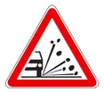
Kırmızı çerçeveli üçgen içinde tekerlekten sıçrayan taşlar bulunan levha, gevşek malzemeli yol kesimini bildirir. Öndeki aracın sıçratacağı taşlardan korunmak için takip mesafesi artırılmalı ve hız düşürülmelidir.
30 Haziran 2012 · MTSAS · B sertifikası · toplam 5 sınavda çıktı
Kırmızı çerçeveli üçgen içinde ellerinde çanta taşıyan iki öğrenci bulunan levha okul geçidine yaklaşıldığını bildirir; sürücü hızını azaltmalı ve çocuklara karşı dikkatli olmalıdır.
11 Şubat 2012 · MTSAS · B sertifikası · toplam 3 sınavda çıktı
Şekildeki trafik işaretini gören sürücünün aşağıdakilerden hangisini yapması doğrudur?
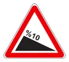
Kırmızı çerçeveli üçgen içinde %10 yazan levha, tehlikeli eğimli bir inişe yaklaşıldığını bildirir. Sürücü küçük vitese geçerek motor freninden yararlanmalı; vitesi boşa almamalı ve sert fren yapmamalıdır.
11 Şubat 2012 · MTSAS · B sertifikası · toplam 3 sınavda çıktı
Şekildeki trafik işaretinin anlamı nedir?
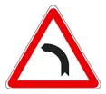
Üçgen levha içinde sola kıvrılan tek bir yol çizgisi, ileride sola tehlikeli viraj bulunduğunu bildirir; sürücü virajdan önce yavaşlamalıdır. Birbirini izleyen virajlarda çizgi birden fazla kıvrımlıdır.
14 Nisan 2012 · MTSAS · B sertifikası · toplam 3 sınavda çıktı
Trafik ve Çevre
Trafik tanzim işaretleri
Bu konudan 66 çıkmış soru
Sürücülerin uymak zorunda olduğu yasak, kısıtlama ve mecburiyetleri bildiren trafik tanzim işaretlerini; DUR, yol ver ve ana yol gibi öncelik levhalarını ve yasak sonu levhalarını kapsar.
Akılda kalsın
Kırmızı çerçeveli yuvarlak levhalar yasak veya kısıtlama, mavi zeminli yuvarlak levhalar mecburiyet bildirir.
Beyaz zemin üzerinde yalnızca siyah çapraz bant bulunan levha bütün yasaklama ve kısıtlamaların sona erdiğini bildirir.
DUR levhasında trafik olmasa bile tam durulur; yol ver levhası tali yoldan kavşağa gelindiğini bildirir.
İçi boş kırmızı çerçeveli levha yolun iki yönden taşıt trafiğine kapalı olduğunu, beyaz yatay bantlı kırmızı levha o yönden girişin olmadığını bildirir.
Yalnızca otomobil simgeli yasak levhası motosikletten başka motorlu taşıtların giremeyeceğini bildirir; motosiklet girebilir.
Sayının üstünde ve altında üçgen varsa yükseklik, sağında ve solunda üçgen varsa genişlik gabarisi sınırlanır.
Geçme yasağı levhalarında kırmızı çizilen taşıt yasağa tabidir: kırmızı otomobil genel geçme yasağını, kırmızı kamyon kamyonlar için geçme yasağını gösterir.
Tanzim işaretleri ve grupları
Trafik tanzim işaretleri, kara yolunu kullananlara uymak zorunda oldukları yasak, kısıtlama ve mecburiyetleri bildirir. Tehlike uyarı işaretleri yalnızca uyarırken tanzim işaretleri bir zorunluluk getirir; bu nedenle uyulmaması doğrudan kural ihlalidir. Levhanın hangi gruba girdiği biçiminden ve renginden anlaşılır:
Grup
Görünüş
Örnekler
Yasaklama ve kısıtlama
Beyaz zemin, kırmızı çerçeveli daire, siyah simge
Kamyon giremez, sola dönülmez, azami hız
Girişi olmayan yol
Kırmızı daire üzerinde beyaz yatay bant
O yönden giriş yasağı
Mecburiyet
Mavi zeminli daire, beyaz simge
İleri, sağa, sola mecburi yön; asgari hız
Yasak sonu
Beyaz zemin üzerinde siyah çapraz bant
Hız sınırlaması sonu, geçme yasağı sonu
Öncelik
Kendine özgü biçimler
DUR (sekizgen), yol ver (ters üçgen), ana yol (köşesi üstte sarı kare)
Giriş yasakları
İçi boş, kırmızı çerçeveli beyaz levha yolun her iki yönden taşıt trafiğine kapalı olduğunu bildirir. Kırmızı zemin üzerinde beyaz yatay bant bulunan levha ise girişi olmayan yol işaretidir: bu yola levhanın bulunduğu yönden hiçbir taşıt giremez; genellikle tek yönlü yolların çıkış ucuna konur. Kavşak sorularında girilmez levhası bulunan yola dönen araç kural ihlali yapmış olur.
Daire içinde bir taşıt veya yaya simgesi varsa yasak yalnızca o yol kullanıcısı içindir: kamyon, otobüs, traktör, mopet (motorlu bisiklet) veya yaya simgeli levhalar, gösterilen taşıtın ya da yayanın o yola giremeyeceğini bildirir.
Sınavda dikkat: Yalnızca otomobil simgesi bulunan yasak levhası “motosikletten başka motorlu taşıt giremez” anlamındadır; bu yola motosiklet girebilir. Ayrıca simgenin zeminine bakın: bisiklet veya yaya simgesi mavi zeminli yuvarlak levhada ise yasak değil, o kullanıcılara ayrılmış yolu gösterir.
Hareket yasakları
Sağa dönülmez / sola dönülmez: Dönüş okunun üzeri kırmızı çapraz çizgiyle kesilmiştir.
U dönüşü yapmak yasaktır: U biçimli okun üzeri çizilmiştir; trafik uygun olsa bile geri dönülemez. Bu levha sola dönüşü yasaklamaz.
Öndeki taşıtı geçmek yasaktır: Yan yana kırmızı ve siyah otomobil bulunur.
Kamyonlar için geçme yasağı: Kırmızı kamyon ile siyah otomobil bulunur; yasak yalnızca kamyonlar içindir.
Karşıdan gelene yol ver: Aşağı bakan siyah ok ile yukarı bakan kırmızı ok bulunur; dar yolda karşıdan gelen araca geçiş önceliği verilir. Bir zorunluluk getirdiği için tanzim işaretidir.
Bu yasakların bittiği yer, aynı simgelerin beyaz zemin üzerinde siyah çapraz bantla çizildiği sonu levhalarıyla bildirilir; örneğin “geçme yasağı sonu” veya “kamyonlar için geçme yasağı sonu”.
Kısıtlama levhaları
Kırmızı çerçeveli daire içinde yalnızca bir sayı varsa bu, aşılmaması gereken azami hızı km/saat olarak bildirir; aynı sayının çapraz bantla çizildiği beyaz levha hız sınırlamasının sonudur. İki araç simgesi arasında “70 m” gibi bir mesafe yazıyorsa öndeki araçla bırakılacak takip mesafesinin bu değerden az olamayacağı bildirilir. “t” yazılı levhalar ağırlık sınırını gösterir.
Gabari, aracın yüküyle birlikte yükseklik ve genişlik gibi boyut ölçüsüdür. Sayının üstünde ve altında karşılıklı üçgenler varsa yükseklik sınırlaması (ör. alt geçitte 3,50 m), sağında ve solunda üçgenler varsa genişlik sınırlaması (ör. 2,30 m) vardır. Kamyon sürücüsü alt geçide yaklaşırken yükü dahil aracının yüksekliğini levhadaki değerle karşılaştırmalıdır.
Sınavda dikkat: Yükseklik ve genişlik levhaları gabariyle ilgilidir; ton (t) yazılı ağırlık levhaları gabari değildir. Beyaz zemin üzerinde yalnızca siyah çapraz bant bulunan levha bütün yasaklama ve kısıtlamaların sona erdiğini bildirir; bandın altında sayı veya taşıt simgesi varsa yalnızca o yasak sona erer.
Mecburiyet levhaları
Mavi zeminli yuvarlak levhalar uyulması zorunlu bir yönü veya davranışı bildirir: ileri, sağa ya da sola mecburi yön, sağdan veya soldan gidiniz, ada etrafında dönünüz ve asgari hız sınırlaması bu gruptadır. Asgari hız levhasında yazan değerin altında bir hızla gidilemez. Örneğin aracın yolunda sağa ve sola mecburi yön levhası, karşıdaki yolda da girişi olmayan yol levhası bulunuyorsa sürücü kavşaktan düz devam edemez; sağa veya sola dönmek zorundadır.
Öncelik levhaları: DUR, yol ver ve ana yol
DUR (kırmızı sekizgen): Tali yolun ana yola bağlandığı yere konur. Sürücü, gideceği yön ne olursa olsun durma çizgisinde ya da kavşağı görebileceği uygun yerde mutlaka tam durur; ana yoldaki araçlara yol verdikten sonra geçer.
Yol ver (köşesi aşağı bakan ters üçgen): Tali yoldan kavşağa veya ana yola gelindiğini bildirir; sürücü yavaşlar, gerekirse durur ve ana yoldaki araçlara geçiş hakkı verir.
Ana yol (sarı kare): Bulunulan yolun ana yol olduğunu ve kavşaklarda geçiş önceliği bulunduğunu bildirir; çizgili biçimi ana yolun sona erdiğini gösterir.
Sık yapılan hata: DUR levhasında yol boş görünüyor diye yalnızca yavaşlayıp geçmek. DUR levhası tam durmayı zorunlu kılar; durmadan kavşağa girmek yasaktır.
Son olarak, bir levha yalnızca yüzünün dönük olduğu yönden gelen sürücüleri bağlar. Kavşak sorularında diğer yollara konmuş levhalar o yollardan gelenler içindir; kendi yolunuzda yasaklayıcı ya da mecburi yön levhası yoksa ve diğer kollar çift yönlüyse sağa, sola dönebilir veya düz gidebilirsiniz.
Bu konudan 66 gerçek soru Çalışma modunda her sorunun açıklamasıyla birlikte çözün.
MEB sınavlarında sorulmuş örnekler. Bir şık seçerek kendinizi deneyin.
Şekildeki kavşakta aşağıdakilerden hangisinin yapılması yasaktır?
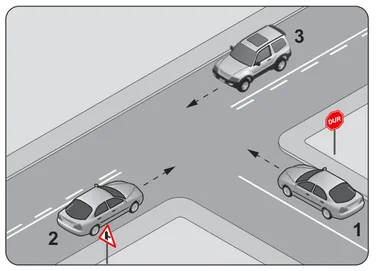
1 numaralı aracın yolunda DUR levhası vardır; sürücü kavşağa girmeden önce mutlaka tam durmalı ve ana yoldaki araçlara yol vermelidir. Durmadan kavşağa girmesi bu nedenle yasaktır.
14 Nisan 2012 · MTSAS · B sertifikası · toplam 4 sınavda çıktı
Şekildeki trafik işaretinin anlamı nedir?
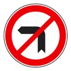
Kırmızı çerçeveli yuvarlak levhada sola kıvrılan ok üzerine çapraz kırmızı çizgi çekilmiş işaret, sola dönmenin yasak olduğunu bildirir. Zorunlu yön levhaları ise mavi zemin üzerinde beyaz okla gösterilir.
11 Şubat 2012 · MTSAS · B sertifikası · toplam 4 sınavda çıktı
Şekildeki trafik işareti neyi bildirir?
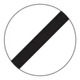
Beyaz zemin üzerinde çapraz siyah bant bulunan yuvarlak levha, daha önce konulmuş bütün yasaklama ve kısıtlamaların sona erdiğini bildirir.
14 Nisan 2012 · MTSAS · B sertifikası · toplam 3 sınavda çıktı
Şekildeki trafik işareti neyi bildirir?
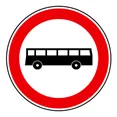
Kırmızı çerçeveli yuvarlak levha içindeki otobüs simgesi, bu yola otobüslerin giremeyeceğini bildiren bir yasaklama işaretidir; kırmızı çerçeveli yuvarlak levhalar yasak bildirir.
1 Eylül 2012 · MTSAS · B sertifikası · toplam 2 sınavda çıktı
Trafik ve Çevre
Bilgi, duraklama ve park işaretleri
Bu konudan 4 çıkmış soru
Yol kullanıcılarını yönlendiren ve bilgilendiren bilgi işaretlerini (yön levhaları, yol numaraları, park yeri, hastane, tek yönlü yol, yerleşim yeri levhaları) ve duraklama-park işaretlerini kapsar; harita okumanın temel kurallarını da içerir.
Akılda kalsın
Bilgi işaretleri genellikle kare veya dikdörtgen biçimlidir ve sürücüyü yönlendirmek ya da bilgilendirmek için kullanılır.
Yol numaralarında 'O' otoyolu, 'D' devlet yolunu, 'E' uluslararası (Avrupa) yolu gösterir.
Haritada üst kenar kuzeyi, alt kenar güneyi, sağ kenar doğuyu, sol kenar batıyı gösterir.
Mavi zeminli, kırmızı çerçeveli ve tek çapraz çizgili levha park yasağını; çarpı biçimli çizgili levha duraklama ve park yasağını bildirir.
Yerleşim yeri levhasından itibaren, aksine işaret yoksa yerleşim yeri içi kuralları ve hız sınırları uygulanır.
Tek yönlü yol levhası trafiğin okun gösterdiği yönde aktığını bildirir; bu yola ters yönden girilmez.
Bilgi işaretleri ne işe yarar?
Bilgi işaretleri yol kullanıcılarına gidecekleri yeri, yolun özelliğini veya yakındaki tesisleri bildirerek yolculuğu kolaylaştırır. Genellikle kare ya da dikdörtgen biçimlidir; çoğu mavi zemin üzerine beyaz simge veya yazıyla hazırlanır. Tanzim işaretleri gibi doğrudan bir yasak koymazlar; ancak verdikleri bilgi sürücünün hangi kurala uyacağını belirler. Örneğin yerleşim yeri levhası, yerleşim yeri içi hız sınırlarının başladığını dolaylı olarak bildirir.
Levha
Anlamı
Park yeri (P)
Araçların park edebileceği yeri gösterir.
Hastane (H)
Yakında hastane bulunduğunu bildirir; bu çevrede sessiz ve dikkatli sürülür.
Yaya geçidi (mavi kare)
Yaya geçidinin bulunduğu yeri gösterir. Üçgen biçimli tehlike uyarı levhası ise geçide yaklaşıldığını bildirir.
Çıkmaz yol
Yolun ileride kapandığını, devam etmediğini bildirir.
Tek yönlü yol
Trafiğin yalnızca okun gösterdiği yönde aktığını bildirir; bu yola ters yönden girilmez.
Yön levhaları ve yol numaraları
Yön levhaları kavşaklardan önce gidilecek yerleşim yerlerini, bunların yönünü ve kalan mesafeyi gösterir. Sürücü bu levhalara bakarak gideceği yöne uygun şeride zamanında geçmeli, son anda ani manevra yapmamalıdır. Haritalarda ve yön levhalarında yollar harf ve rakamdan oluşan numaralarla belirtilir:
O harfiyle başlayan numaralar (ör. O-4) otoyolları,
D harfiyle başlayan numaralar (ör. D100) devlet yollarını,
E harfiyle başlayan numaralar (ör. E80) uluslararası (Avrupa) yolları gösterir.
Otoyola ait yön ve bilgi levhaları yeşil zeminlidir. Otoyol başlangıcı levhası otoyola girildiğini, aynı levhanın üzeri çizili biçimi otoyolun sona erdiğini bildirir. Otoyolda zorunlu hâller dışında motorlu araçlar saatte 40 kilometrenin altında gidemez.
Sınavda dikkat: Haritada gösterilen “D” harfli yol numarası devlet yolunu belirtir. “O” otoyolu, “E” uluslararası yolu gösterir; bu harfleri birbirine karıştırmayın.
Yerleşim yeri levhaları
Yerleşim yeri levhası, üzerinde yerleşim yerinin adı yazılı olarak yerleşim biriminin başladığı noktaya konur. Bu levhadan itibaren, aksine bir işaret yoksa yerleşim yeri içi kuralları uygulanır; örneğin otomobil, minibüs, otobüs, kamyonet ve kamyon için azami hız saatte 50 kilometredir. Yerleşim yerinin bittiği yerde adın üzeri çizilmiş levha bulunur ve yerleşim yeri dışı kuralları başlar. Yerleşim yeri içinde yayaların, çocukların ve kavşakların yoğun olduğu unutulmamalıdır.
Duraklama ve park işaretleri
Duraklama, yolcu indirip bindirmek veya yük alıp bırakmak gibi nedenlerle aracın kısa süre durdurulmasıdır; park ise aracın bu amaçların dışında, daha uzun süre bırakılmasıdır. Bu ayrım levhaları doğru okumak için önemlidir:
Park etmek yasaktır: Mavi zemin, kırmızı çerçeve ve tek kırmızı çapraz çizgi. Bu yerde park edilemez, ancak kısa süreli duraklama yapılabilir.
Duraklamak ve park etmek yasaktır: Mavi zemin, kırmızı çerçeve ve çarpı biçiminde iki kırmızı çizgi. Burada ne duraklanabilir ne de park edilebilir.
Park yeri: Mavi zemin üzerinde beyaz “P” harfi; park etmenin serbest olduğu alanı gösterir.
Sık yapılan hata: Tek çizgili levhayı “duraklamak da yasak” diye okumak. Tek çizgi yalnızca park yasağıdır; çarpı biçimindeki iki çizgi duraklamayı da yasaklar.
Harita okuma ve yön bulma
Haritalar kuzey yukarıda olacak şekilde düzenlenir. Buna göre haritanın üst kenarı kuzeyi, alt kenarı güneyi, sağ kenarı doğuyu, sol kenarı batıyı gösterir. Ana yönlerin arasında kuzeydoğu, güneydoğu, güneybatı ve kuzeybatı ara yönleri bulunur. Bir güzergâhın yönü belirlenirken her noktanın bir öncekine göre konumuna bakılır: haritada sağ üste doğru gidiş kuzeydoğu, sol alta doğru gidiş güneybatı yönündedir.
Sınavda dikkat: Haritanın sol kenarı batıyı, sağ kenarı doğuyu gösterir. Karıştırmamak için haritayı kuzey yukarıda olacak biçimde önünüze koyduğunuzu düşünün: sağ eliniz doğuyu, sol eliniz batıyı gösterir.
Bu konudan 4 gerçek soru Çalışma modunda her sorunun açıklamasıyla birlikte çözün.
MEB sınavlarında sorulmuş örnekler. Bir şık seçerek kendinizi deneyin.
Haritalarda gösterilen şekildeki işaret, aşağıdakilerden hangisine verilen yol numarasıdır?
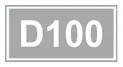
Haritalarda ve yön levhalarında 'D' harfiyle başlayan numaralar (ör. D100) devlet yollarını gösterir. Otoyollar 'O', uluslararası yollar ise 'E' harfiyle numaralandırılır.
13 Şubat 2016 · MTSKS · 1. grup · toplam 2 sınavda çıktı
Haritaların sol kenar çizgisi hangi ana yönü gösterir?
Haritalar kuzey yukarıda olacak şekilde düzenlenir; buna göre üst kenar kuzeyi, alt kenar güneyi, sağ kenar doğuyu, sol kenar ise batıyı gösterir.
22 Mart 2015 · MTSAS · Yeni müfredat
Trafik ve Çevre
Işıklı işaretler ve trafik görevlisi
Bu konudan 49 çıkmış soru
Işıklı trafik işaret cihazındaki ışıkların anlamlarını, yanıp sönen ve oklu ışıkları, trafik görevlisinin gündüz ve gece verdiği işaretleri ve trafik işaretleri arasındaki öncelik sırasını kapsar.
Akılda kalsın
Öncelik sırası: önce trafik görevlisi, sonra ışıklı işaretler, en son trafik levhaları ve yer işaretlemeleri.
Kırmızı ile birlikte yanan sarı yolun açılmak üzere olduğunu bildirir; sürücü harekete hazırlanır ama yeşil yanmadan hareket etmez.
Yeşilden sonra yanan sarı yolun trafiğe kapanmak üzere olduğunu bildirir.
Aralıklı yanıp sönen kırmızı DUR levhası, aralıklı yanıp sönen sarı yol ver levhası anlamındadır.
Kırmızı ışıkla birlikte yanan yeşil ok yalnızca okun gösterdiği yöne gidilebileceğini bildirir.
Kollarını yana açan görevlinin önünden ve arkasından gelenler durur, kollarının gösterdiği yönlerden gelenler geçer.
Görevlinin bir kolunu dik yukarı kaldırması dikkat anlamındadır: açık yol kapanacak, kapalı yol açılacaktır.
Hangi işarete önce uyulur?
Bir kavşakta birden fazla düzenleyici bulunduğunda sürücü şu sırayla uyar:
Trafik görevlisinin işaret ve talimatları,
Işıklı trafik işaretleri,
Trafik levhaları ve yer (yatay) işaretlemeleri.
Yani görevli bulunan bir kavşakta ışık hangi renkte yanarsa yansın görevlinin işaretine uyulur; görevli yoksa ışıklara, ışık da yoksa levha ve çizgilere uyulur.
Sınavda dikkat: Sıralama istenen sorularda trafik görevlisi her zaman ilk sıradadır. Seçenekleri değerlendirirken önce görevliyi, sonra ışıklı cihazı, en son levha ve yer işaretlemelerini yerleştirin.
Işıklı trafik işaret cihazı
Işıklı işaret cihazında ışıklar yukarıdan aşağıya kırmızı, sarı ve yeşil olarak dizilir. Aksine bir durum yoksa her ışığın anlamı şöyledir:
Yanan ışık
Anlamı
Sürücü ne yapar?
Kırmızı
Yol trafiğe kapalıdır.
Gelen araç olmasa bile durma çizgisinden önce durur, yeşili bekler.
Kırmızı ile birlikte sarı
Yol trafiğe açılmak üzeredir.
Harekete hazırlanır; yeşil yanmadan hareket etmez.
Yeşil
Yol trafiğe açıktır.
Durmadan, kavşaktaki yaya ve araçlara dikkat ederek geçer.
Yeşilden sonra sarı
Yol trafiğe kapanmak üzeredir.
Güvenle durabiliyorsa durur, kavşağa girmez.
Aralıklı (fasılalı) yanıp sönen sarı
İkaz: dikkat edilmesi gereken bir yere yaklaşılmaktadır.
Durmak zorunda değildir; yavaşlar, dikkatle geçer, gerekirse geçiş hakkı olanlara yol verir.
Aralıklı yanıp sönen kırmızı
DUR levhası anlamındadır.
Tam durur, yolu kontrol eder, trafik uygunsa geçer.
Sınavda dikkat: Sarı ışık ikaz anlamındadır ve yanış sırasına göre iki farklı şey söyler: yeşilden sonra yanarsa yol kapanmak, kırmızıyla birlikte yanarsa yol açılmak üzeredir.
Yanıp sönen ışıkları levha karşılıklarıyla birlikte öğrenmek kolaylık sağlar: yanıp sönen kırmızı = DUR levhası, yanıp sönen sarı = yol ver levhası. Bu tür ışıklar genellikle trafiğin az olduğu saatlerde veya tek başına tehlikeli bir noktayı işaretlemek için kullanılır.
Sık yapılan hata: Yanıp sönen sarı ile yanıp sönen kırmızıyı karıştırmak. Yanıp sönen sarıda durmak zorunlu değildir, yavaş ve dikkatli geçilir; yanıp sönen kırmızıda ise önce mutlaka durulur.
Oklu ışıklar
Kırmızı ışıkla birlikte yeşil ok: Düz gidilemez; yalnızca okun gösterdiği yöne, o yöndeki yayalara ve diğer araçlara dikkat ederek gidilebilir. Örneğin sağı gösteren yeşil ok yanıyorsa yalnızca sağa dönülebilir.
Yeşil ışıkla birlikte kırmızı ok: Okun gösterdiği yön kapalıdır; o yöne dönecek olanlar bekler. Düz gidecek sürücüler ise beklemeden geçer.
Trafik görevlisinin gündüz işaretleri
Görevlinin hareketi
Anlamı
Kollar iki yana açık (veya bir kol yana uzatılmış)
Görevlinin önünden ve arkasından gelen trafiğe yol kapalıdır, bu araçlar durur. Kolların gösterdiği yönlerden, yani görevlinin sağından ve solundan gelen trafiğe yol açıktır.
Bir kol dik olarak yukarı kaldırılmış
Dikkat: sarı ışık gibi, açık olan yolun kapanacağını, kapalı olanın açılacağını bildirir; trafik bütün yönlere kapanmaktadır. Kavşağa girmiş olanlar kavşağı boşaltır, diğerleri durur.
Kol yana uzatılmış, avuç içi yere dönük, aşağı yukarı hareket ettiriliyor
Yavaşla (trafiği yavaşlatma).
Dirsekten bükülü kolun eli baş hizasında seri biçimde sallanıyor
Trafiği hızlandırma.
Bir kol yukarıda, diğer elle yol kenarı gösteriliyor
İşaret verilen sürücü sağa yanaşıp durur.
Sınavda dikkat: Numaralı araçlarla sorulan görevli sorularında görevlinin göğsünün ve sırtının baktığı yönlerden gelen araçlar bekler; kollarının uzandığı yönlerden gelen araçlar geçer.
Trafik görevlisinin gece işaretleri
Geceleyin görevli aynı anlamları elindeki ışıklı işaret çubuğu ile verir. Sınavda bu işaretler şekil üzerinde sorulur; hareketin biçimine dikkat edin:
Dur: Çubuk dik (yukarı bakacak) tutulur; kol dirsekten bükülü hâldeyken çubuk baş hizasının üstünde, yandan göğüs önüne doğru yay çizerek sallanır.
Geç: Çubuğu tutan kol yana yatay olarak tamamen uzatılır; çubuk bu konumdan başın üzerinden geçen geniş bir yay çizerek göğüs önüne getirilir.
Dönüş: Görevli bir koluyla dönülecek yönü gösterirken diğer elindeki çubukla vücudunun önünden, aşağıdan geniş bir yay çizer.
Gece işaretlerinde ayırt edici nokta, dur işaretinde çubuğun dik tutulması, geç işaretinde kolun yatay uzanması, dönüş işaretinde ise yayın aşağıdan çizilmesidir.
Bu konudan 49 gerçek soru Çalışma modunda her sorunun açıklamasıyla birlikte çözün.
MEB sınavlarında sorulmuş örnekler. Bir şık seçerek kendinizi deneyin.
Trafik görevlisinin geceleyin ışıklı işaret çubuğunu şekildeki gibi hareket ettirmesinin sürücüler için anlamı nedir?
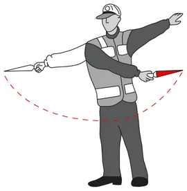
Geceleyin trafik görevlisinin ışıklı çubuğu yay çizecek şekilde yana doğru hareket ettirmesi, sürücülere gösterilen yöne dönmeleri gerektiğini bildiren dönüş işaretidir.
30 Haziran 2012 · MTSAS · B sertifikası · toplam 4 sınavda çıktı
Trafik görevlisinin, geceleyin ışıklı işaret çubuğunu şekildeki gibi hareket ettirmesinin sürücüler için anlamı nedir?
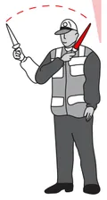
Gece trafik görevlisinin ışıklı işaret çubuğunu şekildeki gibi hareket ettirmesi dur işaretidir; işaretin yöneltildiği sürücüler aracını durdurup görevlinin yeni işaretini beklemelidir.
20 Ekim 2012 · MTSAS · B sertifikası · toplam 4 sınavda çıktı
Aralıklı yanıp sönen kırmızı ışıkta sürücü ne yapmalıdır?
Aralıklı yanıp sönen kırmızı ışık “dur” levhası gibidir: sürücü önce tam olarak durmalı, yolu kontrol edip trafik uygunsa geçmelidir. Yanıp sönen sarı ışıkta ise durmadan yavaşlayıp dikkatle geçilir.
14 Nisan 2012 · MTSAS · B sertifikası · toplam 4 sınavda çıktı
Trafik görevlisinin geceleyin ışıklı işaret çubuğunu şekildeki gibi hareket ettirmesinin sürücüler için anlamı nedir?
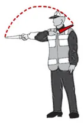
Gece trafik görevlisinin ışıklı çubuğu şekildeki gibi kol hizasından başına doğru yay çizerek hareket ettirmesi, işaretin yöneltildiği sürücülere geç anlamına gelir.
1 Eylül 2012 · MTSAS · B sertifikası · toplam 3 sınavda çıktı
Trafik ve Çevre
Yatay işaretlemeler
Bu konudan 36 çıkmış soru
Taşıt yolu kaplaması üzerine çizilen boyuna ve enine çizgileri, yön oklarını, taralı alanları, yazı ve sembolleri; bunların sürücüye getirdiği izin ve yasakları kapsar.
Akılda kalsın
Kesik çizgi kurallara uygun olarak şerit değiştirmeye ve öndeki aracı geçmeye izin verir; devamlı çizgi geçilemez ve üzerine basılamaz.
Yan yana devamlı ve kesik çizgide her sürücü kendi tarafındaki çizgiye uyar.
Aralıkları sıklaşan kesik çizgi ileride devamlı çizgi başlayacağını bildirir; bu kesimde yeni geçişe başlanmaz.
Aralıkları giderek daralan enine çizgiler yavaşlama uyarı çizgileridir.
Şeritteki yön oku o şeritten gidilebilecek yönleri gösterir; kavşağa gelmeden uygun şeride girilir.
Taralı alana girilmez, burada durulmaz ve park edilmez.
Kaplamaya yazılmış rakam azami hızı, tekerlekli sandalye sembolü engelli park yerini, bisiklet sembolü bisiklet yolunu gösterir.
Yatay işaretleme nedir?
Yatay işaretlemeler, taşıt yolu kaplaması üzerine boya ile çizilen çizgiler, oklar, yazılar ve sembollerdir. Levhaları tamamlar; sürücüye hangi şeritte gideceğini, hangi yönlere dönebileceğini, nerede durması gerektiğini ve hangi davranışların yasak olduğunu bildirir. Trafik görevlisi veya ışıklı işaretle çelişen bir durumda önce görevliye, sonra ışıklara uyulur; bunun dışında yatay işaretlemelere uymak zorunludur.
Boyuna çizgiler
Çizgi
Anlamı
Kesik çizgi
Şeritleri ayırır. Koşullar uygunsa ve kurallara uyulursa üzerinden geçilebilir: şerit değiştirilebilir, öndeki araç geçilebilir.
Sık aralıklı kesik çizgi
İleride devamlı çizgiye yaklaşıldığını bildirir. Bu kesimde yeni bir geçişe başlanmaz, şeritte kalınır ve takip mesafesi korunur.
Devamlı (düz) çizgi
Üzerinden geçilemez, üzerine basılamaz. Bu kesimde şerit değiştirmek ve karşı şeride çıkarak öndeki aracı geçmek yasaktır.
Devamlı çift çizgi
Karşı yönlerin şeritlerini kesin olarak ayırır; hiçbir şekilde geçilemez.
Yan yana devamlı ve kesik çizgi
Her sürücü kendi tarafındaki çizgiye uyar: kesik çizgi tarafındaki geçebilir, devamlı çizgi tarafındaki geçemez.
Sınavda dikkat: Çift çizgili şekilli sorularda önce aracın hangi şeritte olduğunu bulun, sonra çizginin o araca bakan yüzüne bakın. Kesik yüz araca dönükse araç çizgiyi geçebilir; devamlı yüz araca dönükse şerit değiştiremez, öndeki aracı geçemez ve karşı yöne dönmek için çizgiyi aşamaz. Bu çizgiler şeritleri taşıt türüne göre ayırmaz.
Sık yapılan hata: Devamlı çizginin kısa sürdüğünü düşünüp “hızlıca geçerim” diyerek karşı şeride çıkmak. Devamlı çizginin bulunduğu kesimde öndeki araç geçilmez; sürücü kendi şeridini izler.
Enine çizgiler
Durma çizgisi: Şeridi enine kesen devamlı çizgidir; DUR levhası veya ışıklı işaret bulunan yerlerde sürücünün duracağı yeri gösterir. Kaplamaya yazılmış DUR yazısı, sürücünün aracını uygun mesafede mutlaka durdurması gerektiğini bildirir.
Yol ver çizgisi: Şeridi enine kesen kesik çizgidir; sürücü gerekirse bu çizgide durup geçiş hakkı olanlara yol verir.
Yaya geçidi: Taşıt yolu boyunca yan yana dizilmiş kalın beyaz şeritlerle (zebra) ya da yolu enine kesen iki paralel kesik çizgiyle gösterilir.
Yavaşlama uyarı çizgileri: Kavşağa, durma çizgisine veya tehlikeli bir kesime yaklaşırken şerit boyunca enine çizilen ve aralıkları giderek daralan çizgilerdir; sürücüye hızını azaltmasını bildirir.
Yön okları
Kavşaklara yaklaşırken şeritlere çizilen oklar, o şeritten hangi yönlere gidilebileceğini gösterir. Sürücü gideceği yöne uygun şeride kavşağa gelmeden önce girmelidir; örneğin sola dönecek sürücü sola ok çizilmiş şeridi kullanır.
Yalnız düz ok: Şerit yalnızca ileri gitmek içindir.
Yalnız sağa (veya sola) kıvrılan ok: Şerit yalnızca sağa (veya sola) dönüş içindir.
Düz ok ile birlikte sağa kıvrılan kol: Şeritten ileri gidilebilir veya sağa dönülebilir.
Düz ok ile birlikte sola kıvrılan kol: Şeritten ileri gidilebilir veya sola dönülebilir.
Sınavda dikkat: Hem ileri hem sağa ok bulunan şerit “yalnızca sağa dönüş” şeridi değildir. “Sadece” ifadesi geçen seçeneklerde okun tek yönlü mü yoksa çatallı mı olduğuna bakın.
Taralı alanlar
Kaplamaya eğik paralel çizgilerle çizilmiş taralı alanlar, araçların girmesi yasak bölgeleri gösterir: bu alanda seyredilmez, durulmaz ve park edilmez. Bir noktadan ikiye ayrılan ve arası taralı olan çizgiler, yolun ortasında ayırıcının başladığını, yani bölünmüş yol başlangıcını bildirir. Sürücü taralı alanın kenarındaki çizgiyi izleyerek kendi yönündeki şeride geçer.
Kaplama üzerindeki yazı ve semboller
Rakam (ör. 50): O şeritte veya yolda uyulması gereken azami (en yüksek) hız sınırını km/saat olarak bildirir.
DUR yazısı: Durma çizgisinde tam durma zorunluluğunu bildirir.
Bisiklet sembolü: O şeridin veya yol bölümünün bisiklet yolu olduğunu gösterir; motorlu taşıtlar bu bölümü kullanmaz.
Tekerlekli sandalye sembolü: Engelli sürücülere ayrılmış park yerini gösterir; diğer sürücüler buraya park edemez.
Bisiklet ve tekerlekli sandalye sembolleri bir alanı belirli kullanıcılara ayırır; durma zorunluluğu getiren tek işaret DUR yazısı ve durma çizgisidir.
Bu konudan 36 gerçek soru Çalışma modunda her sorunun açıklamasıyla birlikte çözün.
MEB sınavlarında sorulmuş örnekler. Bir şık seçerek kendinizi deneyin.
Şekildeki taşıt yolu üzerinde bulunan yazı neyi bildirmektedir?
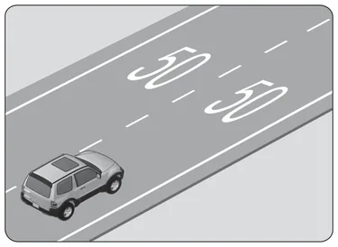
Taşıt yolu kaplaması üzerine yazılan rakam, o şeritte uyulması gereken azami (en yüksek) hız sınırını km/saat olarak bildirir; bu yolda 50 km/saatin üzerinde gidilemez.
30 Haziran 2012 · MTSAS · B sertifikası · toplam 3 sınavda çıktı
Şekle göre, aşağıdaki ifadelerden hangileri doğrudur?
I- 1 numaralı şerit sadece sola dönüş içindir.
II- 2 numaralı şerit sadece ileri yönde seyir içindir.
III- 3 numaralı şerit sadece sağa dönüş içindir.
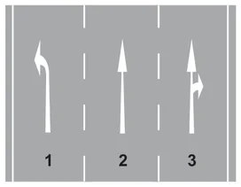
Yönlendirme okları şeritten gidilebilecek yönleri gösterir: 1 numaralı şeritte yalnız sola, 2 numaralıda yalnız ileri ok vardır; 3 numaralı şeritte hem ileri hem sağa ok bulunduğundan bu şerit yalnızca sağa dönüş için değildir.
1 Eylül 2012 · MTSAS · B sertifikası · toplam 3 sınavda çıktı
Şekildeki kara yolu bölümünde görülen kesik çizginin anlamı nedir?
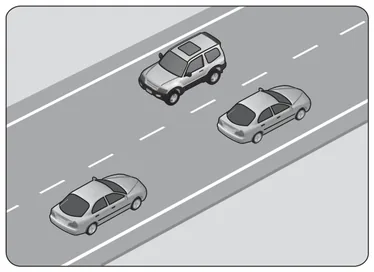
İki yönlü yolun ortasındaki kesik çizgi, görüş ve yol durumu uygunsa kurallara uyarak öndeki aracın geçilebileceğini, çizginin üzerinden geçilebileceğini gösterir. Devamlı çizgi ise geçmeyi yasaklar.
14 Nisan 2012 · MTSAS · B sertifikası · toplam 3 sınavda çıktı
I II III
Taşıt yolu üzerine çizilen şekildeki yazı ve sembollerden hangileri, sürücülere araçlarını uygun mesafede mutlaka durdurmaları gerektiğini bildirir?
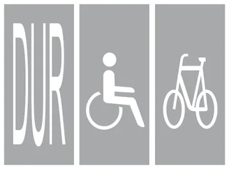
Taşıt yolu üzerine yazılan DUR yazısı, sürücünün durma çizgisinde aracını mutlaka durdurması gerektiğini bildirir. Tekerlekli sandalye ve bisiklet sembolleri engellilere ve bisikletlilere ayrılan alanları gösterir; durma zorunluluğu bildirmez.
15 Aralık 2012 · MTSAS · B sertifikası · toplam 3 sınavda çıktı
Trafik ve Çevre
Hız sınırları ve takip mesafesi
Bu konudan 48 çıkmış soru
Aksine işaret bulunmadığında uygulanan azami ve asgari hız sınırlarını, sürücünün hızını hangi koşullara göre ayarlaması gerektiğini, takip mesafesinin hesaplanmasını ve fren mesafesini etkileyen etkenleri kapsar.
Akılda kalsın
Otomobil için azami hız: yerleşim yeri içinde 50, şehirlerarası çift yönlü yolda 90, bölünmüş yolda 110, otoyolda 120 km/saattir.
Yerleşim yeri içinde otomobil, minibüs, otobüs, kamyonet ve kamyon için azami hız 50 km/saat; otoyolda minibüs ve otobüs için 100 km/saattir.
Zorunlu hâller dışında asgari hız otoyolda 40, şehirlerarası kara yollarında 15 km/saattir.
Takip mesafesi en az hızın yarısı kadar metredir (ör. 90 km/saatte 45 m) ve yaklaşık 2 saniyelik yola eşittir.
Tehlikeli madde taşıyan taşıtlar yerleşim yeri dışında öndeki araçla en az 50 m mesafe bırakır.
Arkadan çarpma kazalarının en önemli sebebi takip mesafesine uyulmamasıdır.
Hızı belirleyen kurallar
Kara yollarında araçların seyretmesine izin verilen en yüksek hıza azami hız, belirli yollarda altına inilmemesi gereken en düşük hıza asgari hız denir. Ancak levhada veya kuralda yazan sınır, her koşulda o hızla gidilebileceği anlamına gelmez. Sürücü hızını;
aracının yük ve teknik özelliklerine,
aracının cinsine uygun hız sınırlamalarına,
görüş, yol, hava ve trafik durumuna
göre ayarlamak zorundadır. Aracın muayene tarihi gibi hızla ilgisi olmayan bilgiler bu koşullar arasında yer almaz.
Azami ve asgari hız sınırları
Aksine bir işaret yoksa sınavda en çok sorulan hız sınırları şunlardır:
Yol ve taşıt
Hız sınırı (km/saat)
Yerleşim yeri içi – otomobil, minibüs, otobüs, kamyonet, kamyon
Azami 50
Yerleşim yeri dışı, şehirlerarası çift yönlü yol – otomobil
Azami 90
Yerleşim yeri dışı, bölünmüş yol – otomobil
Azami 110
Otoyol – otomobil
Azami 120
Otoyol – minibüs ve otobüs
Azami 100
Otoyol – motorlu araçlar (zorunlu hâller dışında)
Asgari 40
Şehirlerarası kara yolu – araç cinsi gözetilmeksizin motorlu araçlar (zorunlu hâller dışında)
Asgari 15
Minibüs, otobüs ve kamyon gibi taşıtların yerleşim yeri dışındaki sınırları otomobilinkinden düşüktür; traktör, iş makinesi ve tehlikeli madde taşıyan araçlar için ise daha da düşük sınırlar uygulanır. Römork takan bir aracın azami hızı, römorksuz hâlindeki azami hızından 10 km/saat daha azdır; çünkü römorkla birlikte ağırlık ve fren mesafesi artar. Asgari hız kuralı, gereksiz yere çok yavaş giden araçların trafiğin akışını bozmasını ve arkadan gelenler için tehlike oluşturmasını önler.
Sınavda dikkat: Soruda taşıtın türüne (otomobil mi, minibüs-otobüs mü) ve yolun türüne (yerleşim yeri içi, çift yönlü, bölünmüş, otoyol) birlikte bakın. Otomobilde çift yönlü yolda 90, bölünmüş yolda 110, otoyolda 120 sayılarını birbirine karıştırmayın.
Hızın azaltılması gereken yerler
Yerleşim yeri dışında kavşak, tünel ve köprülere yaklaşırken (yaklaşık son 100 metrede) görüş ve manevra alanı daraldığı için hız azaltılır. Virajlarda, tepe üstlerinde, yaya ve okul geçitlerinde, kaygan veya buzlu yolda da hız düşürülür. İniş eğimli yollarda vitesi boşa alarak seyretmek yasaktır: vites boştayken motor freni devre dışı kalır ve sürekli kullanılan frenler ısınarak tutmayabilir. İnişlerde küçük vites kullanılarak motor freninden yararlanılır.
Takip mesafesi
Takip mesafesi, öndeki araç aniden yavaşladığında ya da durduğunda ona çarpmadan güvenle durabilmek için bırakılan izleme uzaklığıdır. Uygulamada kural basittir: takip mesafesi metre cinsinden en az hızın (km/saat) yarısı kadar olmalıdır.
Hız (km/saat)
70
80
90
100
110
120
En az takip mesafesi (m)
35
40
45
50
55
60
Takip mesafesi aynı zamanda aracın yaklaşık 2 saniyede alacağı yol kadardır. Bunu ölçmenin pratik yolu “88-89 kuralı”dır: öndeki araç yol kenarındaki sabit bir noktayı (direk, levha) geçerken “seksen sekiz, seksen dokuz” diye sayılır; sayma bitmeden o noktaya varılıyorsa mesafe yetersizdir. Yağışlı, buzlu veya karlı yolda tekerleklerin yola tutunması azaldığı için takip mesafesi artırılır.
Konvoy hâlinde giden araçlar da birbirini en az takip mesafesi kadar arayla izler; aralarında kendilerini geçmek isteyen araçların güvenle girebileceği boşluk bırakılır.
Tehlikeli madde taşıyan taşıtlar, yerleşim yeri dışındaki kara yollarında öndeki araçla aralarında en az 50 metre bırakmak zorundadır.
Kırmızı çerçeveli levhada iki araç arasında yazılı bir mesafe (ör. 70 m) varsa öndeki araç bu değerden daha yakından takip edilemez.
Sınavda dikkat: “Önündeki araca en fazla kaç metre yaklaşabilir?” ile “arada en az kaç metre olmalıdır?” soruları aynı şeyi sorar; cevap hızın yarısıdır. Önündeki aracı güvenli mesafeden izlemeyen sürücü trafik kuralına uymamış olur.
Sık yapılan hata: Öndeki araca yakın gitmeyi zararsız sanmak. Arkadan çarpma şeklindeki kazaların en önemli sebebi takip mesafesine uyulmamasıdır.
Fren ve durma mesafesi
Sürücünün tehlikeyi fark edip frene basmasına kadar geçen kısa sürede de araç yol alır; buna algılama-tepki (reaksiyon) mesafesi denir. Frene basıldığı andan aracın durmasına kadar alınan yol ise fren mesafesidir. İkisinin toplamı durma mesafesini verir. Fren mesafesini aracın hızı ve yükü, yolun eğimi ve yüzeyi (ıslak, buzlu, gevşek malzemeli), lastiklerin ve frenlerin durumu etkiler; yolun genişliği ise fren mesafesini değiştirmez. Hız iki katına çıktığında fren mesafesi yaklaşık dört katına çıkar; bu yüzden küçük bir hız artışı bile durma mesafesini belirgin biçimde uzatır.
Bu konudan 48 gerçek soru Çalışma modunda her sorunun açıklamasıyla birlikte çözün.
MEB sınavlarında sorulmuş örnekler. Bir şık seçerek kendinizi deneyin.
Aksine bir işaret yoksa, otomobillerin yerleşim yeri dışındaki şehirler arası çift yönlü kara yollarında azami hızı saatte kaç kilometredir?
Aksine bir işaret yoksa otomobiller için azami hız yerleşim yeri dışındaki çift yönlü şehirlerarası yollarda saatte 90 km'dir; bölünmüş yollarda ve otoyollarda daha yüksek sınırlar uygulanır.
20 Ekim 2012 · MTSAS · B sertifikası · toplam 5 sınavda çıktı
Zorunlu hâller dışında otoyollarda motorlu araçların asgari (en az) hız sınırı saatte kaç kilometredir?
Otoyolda çok yavaş giden araç arkadan gelen hızlı trafik için tehlike oluşturur; bu yüzden zorunlu hâller dışında otoyolda motorlu araçların en düşük hızı saatte 40 kilometredir.
11 Şubat 2012 · MTSAS · B sertifikası · toplam 4 sınavda çıktı
70 km/saatlik hızla, arka arkaya seyreden iki araç arasındaki mesafe en az kaç metre olmalıdır?
Takip mesafesi pratikte hızın km/saat cinsinden değerinin yarısı kadar metre alınır; saatte 70 km hızla giden araçlar arasında en az 35 metre bırakılmalıdır.
1 Eylül 2012 · MTSAS · B sertifikası · toplam 4 sınavda çıktı
Aksine bir işaret bulunmadıkça, otoyolda minibüs ve otobüsler için azami hız saatte kaç kilometredir?
Hız sınırları taşıt türüne göre değişir; aksine bir işaret yoksa otoyolda minibüs ve otobüsler en fazla saatte 100 km hızla gidebilir. Otomobillerin otoyol sınırı bundan daha yüksektir.
11 Şubat 2012 · MTSAS · B sertifikası · toplam 3 sınavda çıktı
Trafik ve Çevre
Kavşaklar ve geçiş hakkı
Bu konudan 62 çıkmış soru
Kavşaklarda kimin önce geçeceğini belirleyen geçiş hakkı kurallarını, kontrollü ve kontrolsüz kavşaklarda uygulanacak sıralamayı, sağa-sola dönüş ve dönel kavşak kurallarını ve geçiş üstünlüğüne sahip araçları kapsar.
Akılda kalsın
Yolunda yol ver veya DUR levhası bulunan sürücü tali yoldadır ve ana yoldaki araçlara yol verir.
Kontrolsüz kavşakta durumu aynı olan araçlardan her sürücü sağından gelene yol verir.
Dönüş yapan araç, doğrultusunu değiştirmeden geçen araca yol verir; sola dönen, karşıdan düz gelene yol verir.
Motorlu taşıtlar; traktör, iş makinesi ve hayvanla çekilen taşıtlardan önce geçer.
Sağa dönüş dar, sola dönüş geniş kavisle yapılır; dönüşte geçitteki yayalara ilk geçiş hakkı verilir.
Dönel kavşakta kavşak içindeki araçlara yol verilir; geri dönüş orta adaya en yakın şeritten yapılır.
Geçiş üstünlüğü yalnız görev sırasında, sesli ve ışıklı işaretler birlikte kullanılarak kullanılır; sıra ambulans, itfaiye, polis şeklindedir.
Geçiş hakkı ve geçiş üstünlüğü
Geçiş hakkı, yayaların ve sürücülerin yolu kullanırken diğerlerine göre önce geçme hakkıdır. Geçiş üstünlüğü ise ambulans, itfaiye ve polis gibi belirli araçların görev sırasında, can ve mal güvenliğini tehlikeye sokmamak şartıyla trafik yasak ve kısıtlamalarına bağlı olmamasıdır. Bu iki kavram sınavda sıkça karıştırılır.
Kavşağa yaklaşırken
Kavşaklar çarpışma riskinin en yüksek olduğu yerlerdir. Kavşağa yaklaşan sürücü hızını azaltır, gerektiğinde durabilecek durumda olur ve gideceği yöne uygun şeride önceden girer. Kavşak içinde ve kavşağa çok yakın yerlerde öndeki aracı geçmek, şerit değiştirmek, duraklamak ve park etmek yasaktır.
Kontrollü kavşaklar
Trafiğin görevli, ışıklı işaret veya levhalarla düzenlendiği kavşaklardır. Önce görevliye, sonra ışıklara, sonra levhalara uyulur. Levhalarla düzenlenen kavşaklarda temel kural şudur: yolunda yol ver veya DUR levhası bulunan sürücü tali yoldadır ve ana yoldaki araçlara yol verir; DUR levhasında önce tam durulur. Ana yol, ana yol levhası ya da ana yol–tali yol kavşağı uyarı levhasıyla belirtilir.
Ana yolun kendi içinde de dönüş kuralı geçerlidir. Ana yolda düz giden bir araç, ana yolda sola dönen bir araç ve tali yoldan gelen bir araç karşılaştığında sıra şöyledir: önce ana yolda düz giden, sonra ana yolda sola dönen, en son tali yoldan gelen. İki yolda da yol ver levhası varsa yollar eşit sayılır ve aşağıdaki genel kurallar uygulanır. DUR levhalı yoldan durmadan çıkıp ana yolda düz giden araçla çarpışan sürücü, ilk geçiş hakkı kuralını ihlal etmiş olur.
Kontrolsüz kavşaklar
Görevli, ışık veya öncelik levhası bulunmayan kavşaklarda sürücüler hızlarını azaltır ve geçiş hakkı kurallarına uyar. Şekilli soruları çözerken kuralları şu sırayla uygulayın:
Kavşağa daha önce girmiş araca yol verilir.
Taşıt cinsine bakılır: raylı taşıtlar, motorlu taşıtlar, lastik tekerlekli traktör–arazi taşıtı–iş makinesi ve hayvanla çekilen taşıtlar sırasıyla geçer. Örneğin otomobil at arabasından, otobüs traktör ve iş makinesinden önce geçer.
Dönüşe bakılır: dönüş yapan araç, doğrultusunu değiştirmeden geçen araca yol verir. Sola dönen sürücü karşı yönden düz gelen araçları bekler.
Yöne bakılır: durumları aynı olan araçlardan her sürücü sağından gelen araca yol verir. Hızın fazla ya da az olması öncelik sağlamaz.
Sınavda dikkat: Sağdan gelen kuralı zincir hâlinde uygulanır: 1 numaralı aracın sağından 2, 2 numaralı aracın sağından 3 geliyorsa sıra 3–2–1 olur. Şekilde traktör, iş makinesi veya at arabası varsa önce onları sıranın sonuna, dönüş yapanları da düz gidenlerin arkasına yerleştirin.
Yayalar ve yol dışından çıkış
Kavşakta dönüş yapan sürücü, girdiği yoldaki yaya geçidinde bulunan veya geçmek üzere olan yayalara ilk geçiş hakkını verir. Yayaları korna ile uyarıp durdurarak geçmek yanlıştır. Akaryakıt istasyonu, otopark gibi yol dışındaki bir alandan kara yoluna çıkan sürücü de yolda seyreden araçların geçmesini beklemek zorundadır.
Sağa ve sola dönüş
Aşama
Sağa dönüş
Sola dönüş
Niyeti bildirme
Önceden sağa dönüş lambası yakılır.
Önceden sola dönüş lambası yakılır.
Yaklaşma
En sağ şeride girilir, hız azaltılır.
Şeridin soluna yaklaşılır, hız azaltılır.
Kavis
Dar kavis (kaldırım tarafına yakın).
Geniş kavis (kavşak ortasının yakınından).
Tamamlama
Dönüş, girilen yolun en sağ şeridinde tamamlanır.
Karşıdan düz gelen araçlara ve yayalara yol verilerek dönülür.
Sağa dönüşte doğru sıra: dönüş işaretini vermek → sağ şeride girmek → hızı azaltmak → dar bir kavisle dönmek.
Sık yapılan hata: Sağa geniş kavisle dönmek veya dönüşü en sol şeritte tamamlamak. Geniş kavis diğer şeritleri işgal eder ve yanındaki araçlarla çarpışmaya yol açar.
Dönel kavşaklar
Dönel kavşağa girecek sürücü yavaşlar ve kavşak içindeki araçlara yol verir. Geri dönüş yapacak sürücü kavşağa girmeden önce orta adaya en yakın şeride geçer ve ada etrafında bu şeritte döner. Ada etrafında dönerken gereksiz yere şerit değiştirmek yasaktır; çıkışa yaklaşınca kurallara uygun şekilde sağa geçilir.
Geçiş üstünlüğü olan araçlar
Geçiş üstünlüğüne sahip olanlar: ambulans (cankurtaran), itfaiye, polis ve benzeri güvenlik araçları ile yaralı veya acil hasta taşıyan araçlar. Toplu taşıma araçlarının geçiş üstünlüğü yoktur.
Bu hak yalnızca görev sırasında ve sesli ve ışıklı işaretler birlikte kullanılarak kullanılabilir; görev dışındaki ambulans veya polis aracı diğer araçlar gibi kurallara uyar.
Bu araçlar karşılaştığında geçiş sırası: ambulans → itfaiye → polis → diğer görevli araçlar.
Sesli ve ışıklı uyarıyı alan sürücü bu araca derhal yol verir; kavşaktaysa kavşağı boşaltır, gerekirse sağa yanaşıp durur. Olduğu yerde kalıp aracın yolunu tıkamaz.
Sınavda dikkat: Geçiş üstünlüğü sınırsız bir serbestlik değildir; bu hakkı kullanan sürücü de can ve mal güvenliğini tehlikeye sokmamak zorundadır.
Bu konudan 62 gerçek soru Çalışma modunda her sorunun açıklamasıyla birlikte çözün.
MEB sınavlarında sorulmuş örnekler. Bir şık seçerek kendinizi deneyin.
Şekle göre aşağıdakilerden hangisi doğrudur?
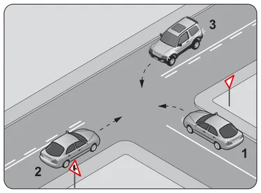
1 numaralı araç yol ver levhası bulunan yoldan kavşağa girmekte ve sola dönmektedir; bu nedenle kavşaktaki 2 ve 3 numaralı araçların geçmesini beklemeli, hızlanarak kavşağa girmemelidir.
20 Ekim 2012 · MTSAS · B sertifikası · toplam 5 sınavda çıktı
Şekildeki gibi sağa dönüş yapmak isteyen sürücülerin aşağıdakilerden hangisini yapması yanlıştır?
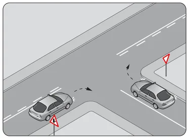
Sağa dönecek sürücü hızını azaltır, şeridinin en sağına yaklaşır ve dar bir kavisle döner; dönüşü girdiği yolun en sağ şeridinde tamamlamalı, en sol şeride geçmemelidir.
2 Şubat 2013 · MTSAS · B sertifikası · toplam 4 sınavda çıktı
Şekildeki kontrolsüz kavşakta karşılaşan araçların geçiş hakkı sıralaması nasıl olmalıdır?
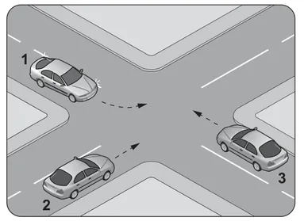
Kontrolsüz kavşakta aynı anda gelen araçlarda sağdan gelene yol verilir: 2 numaralı aracın sağından 3, 1 numaralı aracın sağından 2 geldiği için sıra 3, 2, 1 olur.
14 Nisan 2012 · MTSAS · B sertifikası · toplam 4 sınavda çıktı
Bir kavşakta geçiş üstünlüğüne sahip aracın sesli ve ışıklı uyarısını alan sürücü nasıl hareket etmelidir?
Geçiş üstünlüğüne sahip aracın sesli ve ışıklı uyarısını alan sürücü, onun geçebilmesi için kavşağı derhal boşaltarak yol vermelidir. Olduğu yerde durmak ya da ışığın yanmasını beklemek aracın yolunu tıkar.
14 Nisan 2012 · MTSAS · B sertifikası · toplam 4 sınavda çıktı
Trafik ve Çevre
Şerit kullanımı, geçme ve karşılaşma
Bu konudan 66 çıkmış soru
Şerit izleme ve şerit değiştirme kurallarını, öndeki aracı güvenle geçmenin aşamalarını, geçmenin yasak olduğu yerleri ve geçilen sürücünün yükümlülüklerini; dar ve eğimli yollarda karşılaşmayı ve geri manevrayı kapsar.
Akılda kalsın
Öndeki araç soldan geçilir; sağdan veya banketten yararlanarak geçmek yasaktır.
Geçiş sırası: sol sinyal, takip mesafesi kadar geriden sol şeride geçiş, geçilen araç iç dikiz aynasında görününceye kadar ilerleme, sağ sinyal ve sağ şeride dönüş.
Geçilen sürücü hızını artırmaz, sağa yaklaşır; bölünmüş yolda şeridini izler.
Görüşün yetersiz olduğu tepe üstü ve dönemeçlerde, kavşaklarda, demir yolu ve yaya geçitlerinde öndeki aracı geçmek yasaktır.
Kavşaklara yerleşim yeri içinde 30 m, yerleşim yeri dışında 150 m kala şerit değiştirmek yasaktır.
Eğimsiz dar yolda büyük taşıt küçüğe, motorsuz taşıt motorluya, traktör ve iş makinesi diğer motorlu taşıtlara yol verir.
Eğimli dar yolda inen araç çıkana yol verir; varsa sığınma cebine girer, yoksa sağa yanaşıp durur.
Şerit izleme
Sürücü, gidiş yönüne ayrılmış şeritlerden birinde ve şeridini izleyerek ilerler. Çok şeritli yollarda en soldaki şerit öndeki aracı geçmek ve sola dönmek için kullanılır; sürekli işgal edilemez. Geçişi tamamlayan sürücü sağdaki şeride döner. Sol şeridi sürekli işgal etmek, arkadan gelenlerin geçişini engellediği için trafik akışını bozar. Üç şeritli iki yönlü yollarda ortadaki şerit iki yönün de geçiş şerididir ve sürekli işgal edilemez. Tek yönlü yollara ters yönden girmek yasaktır.
Şerit değiştirme
İç ve dış aynalardan, gerekirse başı çevirerek arkadan ve yandan gelen trafik kontrol edilir.
Güvenli olduğundan emin olununca sinyal verilir; sinyal manevra bitene kadar sürdürülür.
Girilecek şeritte arkadan yaklaşan bir araç varsa onun geçmesi beklenir; önü kesilmez.
Şeridi sona eren (yolun daraldığı) sürücü, devam eden şeritteki araçlara yol verir ve güvenli bir boşluk bulduğunda şerit değiştirir. Kavşaklara yerleşim yeri içinde 30 metre, yerleşim yeri dışında 150 metre kala şerit değiştirmek yasaktır; şerit seçimi kavşağa gelmeden yapılmalıdır.
Sınavda dikkat: Manevra yapacak sürücünün ilk işi sinyal vermek değil, aynalardan ve gerekirse omuz üstünden ön, arka ve yanlardaki trafiği kontrol etmektir. Arkadan gelen aracı kontrol etmeden şerit değiştiren sürücü kurala aykırı davranmış olur.
Öndeki aracı geçme
Geçişe başlamadan önce sürücü, geçiş yapacağı yolun yeterince açık ve güvenli olduğundan emin olmalıdır. Bunun için karşı yönden gelen aracın hızı ve uzaklığı, geçilecek aracın hızı, geçme yasağı bulunup bulunmadığı ve arkadan kendisini geçmeye başlamış bir araç olup olmadığı değerlendirilir. Geçilecek aracın markası gibi özelliklerin geçiş güvenliğiyle ilgisi yoktur; öndeki sürücünün işaret vermesini beklemek de bir kural değildir.
Güvenli bir geçiş şu sırayla yapılır:
Aynalardan trafik kontrol edilir ve sola dönüş lambasıyla işaret verilir; gerekirse öndeki sürücü korna veya selektörle uyarılır.
Takip mesafesi kadar geriden sol şeride geçilir; öndeki araca yapışılmaz.
Geçiş şeridinde, geçilen araç iç dikiz aynasında görününceye kadar ilerlenir.
Sağa dönüş lambasıyla işaret verilerek sağ şeride dönülür.
Öndeki araç soldan geçilir; sağından veya banketten yararlanarak geçmek yasaktır. Yol müsait değilse geçişten vazgeçilir. Sola dönmek için işaret verip sola yanaşmış bir araç ise sağdan geçilebilir.
Sık yapılan hata: Geçmek için öndeki araca iyice yaklaşmak ya da geçilen araçtan yeterince uzaklaşmadan sağ şeride dönmek. Geçiş boyunca takip mesafesi dikkate alınır; karşıdan gelen aracın hızı hesaba katılmadan geçişe başlanmaz.
Geçilen aracın sürücüsü
Hızını artırmaz; geçişi kolaylaştırır, gerekirse yavaşlayarak yardımcı olur.
İki yönlü yolda gidiş yönüne göre sağa yaklaşır; bölünmüş yolda bulunduğu şeridi izler.
Geceleyin yakını gösteren ışıkları yakar.
Arkadaki aracın geçme uyarısını aldığı sırada kendisi öndeki aracı geçmeye kalkmaz.
Arkadakine dönüş lambalarıyla “geç” işareti vermez; böyle bir işaret yanıltıcıdır ve arkadaki sürücü buna güvenerek geçmez.
Geçmenin yasak olduğu yerler
Görüşün yetersiz olduğu tepe üstleri, dönemeçler (virajlar) ve benzeri yerler,
Kavşaklar ve kavşaklara yaklaşırken,
Demir yolu hemzemin geçitleri ve bunlara yaklaşırken,
Yaya geçitleri ve bunlara yaklaşırken,
Devamlı yol çizgisi veya geçme yasağı levhası bulunan kesimler (kamyonlar için geçme yasağı levhası yalnızca kamyonları bağlar),
Karşı yönden gelen trafik nedeniyle geçişin güvenle tamamlanamayacağı durumlar.
Sınavda dikkat: Virajda veya tepe üstünde öndeki sürücü “geç” işareti verse bile geçilmez; sürücü takip mesafesini koruyarak şeridini izler.
Konvoy hâlinde seyir
Konvoy hâlinde yavaş giden araçlar, kendilerini geçmek isteyen araçların aralarına güvenle girebileceği kadar mesafe bırakır. Aksi hâlde geçiş yapan araç karşı şeritte sıkışıp kalır.
Dar ve eğimli yollarda karşılaşma
Aksine bir işaret yoksa eğimsiz iki yönlü dar yolda geçiş kolaylığı şu kurallarla sağlanır:
Taşıt
Kime yol verir?
Motorsuz taşıt
Motorlu taşıta
Lastik tekerlekli traktör ve iş makinesi
Diğer motorlu taşıtlara
Kamyon ve otobüs gibi büyük taşıtlar
Kamyonet, minibüs ve otomobile
Kamyonet ve minibüs
Otomobile
Kısacası büyük taşıt küçüğe yol verir; yol veren sürücü yolun geniş bir yerinde sağa yanaşır, gerekirse durur.
Eğimli dar yollarda ise inen araç, çıkan araca yol verir; çünkü yokuş çıkan aracın durup yeniden kalkması ve geri gitmesi daha zordur. Çıkan aracın geçişi güçse inen araç varsa sığınma cebine girer, yoksa sağa yanaşıp durur. Çıkan araç için manevra imkânı bulunmadığı açıkça anlaşılırsa ve sığınma cebi de yoksa inen araç geri gider.
Sınavda dikkat: Eğimsiz dar yolda taşıtın büyüklüğüne, eğimli dar yolda inen–çıkan durumuna bakılır. Traktör, otomobilden küçük olsa bile diğer motorlu taşıtlara yol verir.
Geri manevra
Geri gitmek yalnızca park etme, duraklama veya dar yolda geçiş kolaylığı sağlama gibi zorunlu hâllerde, kısa mesafede ve trafiği tehlikeye sokmadan yapılır. Otoyollarda ve bağlantı yollarında geri gitmek yasaktır. Otobüs, kamyon gibi arka görüşü sınırlı büyük araçlarda geri manevra çevre şartları nedeniyle güvenle yapılamıyorsa sürücüyü yönlendirecek bir gözcü bulundurulur.
Bu konudan 66 gerçek soru Çalışma modunda her sorunun açıklamasıyla birlikte çözün.
MEB sınavlarında sorulmuş örnekler. Bir şık seçerek kendinizi deneyin.
Şekildeki gibi eğimsiz iki yönlü dar yoldaki karşılaşmada 2 numaralı aracın sürücüsü ne yapmalıdır?
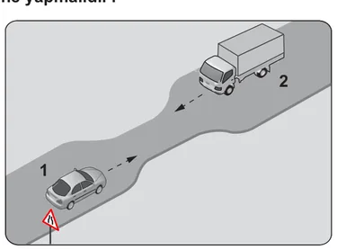
Aksine işaret yoksa eğimsiz iki yönlü dar yolda karşılaşmada büyük taşıt küçük taşıta yol verir; bu nedenle yük taşıtı olan 2 numaralı araç, otomobil olan 1 numaralı araca yol vermelidir.
15 Aralık 2012 · MTSAS · B sertifikası · toplam 3 sınavda çıktı
Şekildeki durumda aşağıdakilerden hangisinin yapılması doğrudur?
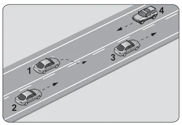
Geçişini tamamlayan 1 numaralı araç, geçtiği araçla arasında güvenli mesafe oluşunca yeniden sağ şeride dönmelidir. Karşıdan araç gelirken geçmeye kalkmak ve takip mesafesini azaltmak tehlikelidir.
20 Ekim 2012 · MTSAS · B sertifikası · toplam 3 sınavda çıktı
Manevradan önce sürücü aynalarla ve gerekirse başını çevirerek ön, arka ve yanlardaki trafiği kontrol etmeli, işaretini zamanında verip manevra bitene kadar sürdürmelidir.
15 Aralık 2012 · MTSAS · B sertifikası · toplam 3 sınavda çıktı
Aşağıdakilerden hangisi, araç geçmede uyulması gereken kurallardan biri değildir?
Geçmeden önce karşı yön trafiği kontrol edilir, başka aracın kendisini geçmediğinden emin olunur ve sol sinyal verilir; öndeki aracın işaret vermesini beklemek bir kural değildir.
30 Haziran 2012 · MTSAS · B sertifikası · toplam 2 sınavda çıktı
Trafik ve Çevre
Duraklama ve park etme
Bu konudan 30 çıkmış soru
Durma, duraklama ve park etme kavramlarının farkını; duraklamanın ve park etmenin yasak olduğu yerleri ve mesafeleri, park ederken ve yolda arızalanan araçta alınması gereken önlemleri anlatır.
Akılda kalsın
Kırmızı ışık, görevlinin dur işareti, yolun kapanması veya arıza gibi zorunluluklarla durmak 'durma'; yolcu indirip bindirmek, yük almak ya da kısa süre beklemek 'duraklama'dır.
Bekleme amacıyla yapılan duraklama en çok 5 dakikadır; bu süre aşılırsa park etme sayılır.
Yerleşim yeri içinde trafik işaret levhalarına yaklaşım yönünde 15 metre içinde duraklamak yasaktır.
Otobüs durağı levhalarına her iki yönden 15 metre, yangın musluklarına her iki yönden 5 metre içinde park edilemez; geçiş yollarının önü ve üzeri de yasaktır.
Park eden sürücü motoru durdurur ve el frenini çeker; acil uyarı ışıklarını yakmak park için gerekli değildir.
Arızalanan araç mümkünse yol dışına veya bankete alınır; ön ve arkasına 150 metreden görülebilen kırmızı yansıtıcı veya kırmızı ışıklı cihaz konur.
Tepe üstü ve dönemeçte yansıtıcılar aracın önüne ve arkasına en az 30 metre uzağa yerleştirilir.
Durma, duraklama ve park etme
Bir aracın trafikte hareketsiz kalması üç ayrı kavramla ifade edilir. Hangisinin geçerli olduğu, aracın neden ve ne kadar süreyle durduğuna bağlıdır.
Kavram
Tanımı
Örnek
Durma
Aracın trafik zorunlulukları nedeniyle durdurulması
Durma hâlleri dışında yolcu indirip bindirmek, yük yükleyip boşaltmak veya beklemek amacıyla aracın kısa süre durdurulması
Yolcu indirmek, paket teslim etmek
Park etme
Aracın durma ve duraklama hâlleri dışında, genellikle uzun süre bekletilmek üzere bırakılması
Aracı otoparka bırakmak, 5 dakikadan uzun beklemek
Bekleme amacıyla yapılan duraklama en çok 5 dakika sürebilir; bu süre aşıldığında araç park edilmiş sayılır. Motorun çalışıyor olması veya araçta birinin bulunması bu durumu değiştirmez.
Sınavda dikkat: Arıza nedeniyle yolda kalmak durma, yolcu indirmek için kısa süre durmak duraklama, trafik zorunluluğu olmadan 5 dakikadan uzun beklemek park etme olarak sorulur.
Duraklamanın yasak olduğu yerler
Taşıt yolu üzerinde aşağıdaki yerlerde duraklamak yasaktır:
Sol şerit (raylı sistem bulunan yollar hariç); bu nedenle sol şeritte yolcu indirilip bindirilemez,
Yaya ve okul geçitleri ile diğer geçitler,
Kavşaklar, tüneller, köprüler ve bağlantı yolları ile bunlara yerleşim yeri içinde 5 metre, yerleşim yeri dışında 100 metre mesafe,
Görüşün yeterli olmadığı tepe üstlerine yakın yerler ve dönemeçler,
Otobüs, tramvay ve taksi durakları,
Duraklamış veya park etmiş araçların yol tarafındaki yanı (çift sıra duraklama),
Trafik işaret levhalarına yaklaşım yönünde yerleşim yeri içinde 15 metre, yerleşim yeri dışında 100 metre mesafe.
Yerleşim yeri dışındaki kara yollarında, zorunlu hâller dışında taşıt yolu üzerinde duraklamak ve park etmek yasaktır. Banket taşıt yolunun dışında kaldığı için duraklamaya uygundur. Yolcular, aksine bir işaret yoksa yolun en sağ kenarında ve aracın sağ tarafından indirilip bindirilir.
Park etmenin yasak olduğu yerler
Duraklamanın yasak olduğu her yerde park etmek de yasaktır. Bunlara ek olarak:
Park etmenin trafik işaretiyle yasaklandığı yerler,
Geçiş yollarının (bina ve otopark girişleri) önü ve üzeri,
Yangın musluklarına her iki yönden 5 metre mesafe,
Kamu hizmeti yapan yolcu taşıtlarının durak levhalarına her iki yönden 15 metre mesafe,
Geçiş üstünlüğüne sahip araçların giriş-çıkış yerlerini gösteren levhalara 15 metre mesafe,
Okul, hastane, fabrika, sinema, otopark gibi kamunun yararlandığı yerlerin giriş-çıkış kapılarına her iki yönden 5 metre mesafe,
Park yeri ayrılmamış alt geçit, üst geçit ve köprülerin üzeri ile bunlara 10 metre mesafe,
Kurallara uygun park etmiş araçların çıkışını engelleyen yerler, engelliler için ayrılmış park yerleri ve izin verilmemiş yaya yolları.
Eğimli yol kesimleri tek başına park yasağı kapsamında değildir; gerekli önlemler alınarak park edilebilir. Park yerlerinde araç, çizgilerle belirlenmiş bölmenin içine, çizgilere taşmadan ve tek bölmeyi kullanacak şekilde bırakılır.
Sık yapılan hata: “Birkaç dakikalığına” otobüs durağına, garaj çıkışına veya yangın musluğunun önüne park etmek. Bu yerlere park edilen araçlar trafik zabıtasınca kaldırılabilir.
Park ederken ve uzun duraklamalarda alınacak önlemler
Araç el freni ile sabitlenir ve motor durdurulur.
Eğimli yolda inişte geri, yokuşta birinci vitese takılır; ön tekerlekler sağa, yani yol kenarına doğru çevrilir. Böylece araç kayarsa trafiğe değil yol kenarına doğru hareket eder.
Kamyon, çekici ve otobüslerde eğimli yolda tekerleklere takoz konur.
Araç terk edilirken camlar kapatılır, kapılar kilitlenir.
Gece veya görüşün yetersiz olduğu durumlarda gerektiğinde park lambaları yakılır.
Normal bir park işleminde acil uyarı ışıklarının (dörtlü flaşör) yakılmasına gerek yoktur; bu ışıklar arıza ve tehlike durumları içindir. Park lambası da her parkta değil, gece ve görüşün yetersiz olduğu hâllerde gerekir. Uzun süre beklemeyi gerektiren duraklamalarda da motor durdurulup el freni çekilir.
Duraklama veya park yerinden çıkan sürücü aracın çevresini kontrol eder, ışıkla veya kolla çıkış işareti verir ve yolda seyreden araçlara yol vererek uygun anda harekete geçer. Yoldaki sürücüleri uyarıp yavaşlamaya zorlamak kurala aykırıdır.
Arızalanan araçta yapılacaklar
Yerleşim yeri dışında taşıt yolunda arızalanan araç; itme, çekme gibi imkânlar kullanılarak önce yol dışına, bu mümkün değilse bankete, o da olmuyorsa taşıt yolunun en sağına alınır ve işaretlenir.
Aracın park ve kuyruk ışıkları 150 metreden açıkça görülemiyorsa aracın önüne ve arkasına birer kırmızı yansıtıcı (reflektör) veya kırmızı ışıklı cihaz konur; bunlar 150 metreden açıkça görülebilmelidir.
Tepe üstü ve dönemeç gibi görüşün kısıtlı olduğu yerlerde yansıtıcılar aracın önüne ve arkasına en az 30 metre uzağa konur ve normal hava şartlarında yine en az 150 metreden görülebilmelidir.
Bu önlemler tamamlanıncaya kadar acil uyarı ışıkları yakılır.
Otobüs, kamyon ve çekiciler arıza nedeniyle uzun süre yolda kalırsa ayrıca özel engel işareti konur.
Sınavda dikkat: İki sayı sık karıştırılır: 150 metre, yansıtıcının görülebilmesi gereken mesafedir; 30 metre ise tepe üstü ve dönemeçte yansıtıcının araçtan uzaklığıdır.
Bu konudan 30 gerçek soru Çalışma modunda her sorunun açıklamasıyla birlikte çözün.
MEB sınavlarında sorulmuş örnekler. Bir şık seçerek kendinizi deneyin.
Aşağıdakilerden hangisi, kara yolunda bozulup kalan araçların tehlikeye meydan vermemesi için yapılması gereken işlemlerdendir?
Bozulup yolda kalan aracın tehlike yaratmaması için önüne ve arkasına birer kırmızı yansıtıcı (reflektör) konur; böylece yaklaşan sürücüler engeli önceden fark eder.
1 Eylül 2012 · MTSAS · B sertifikası · toplam 4 sınavda çıktı
Bir aracın yolcu indirmek amacıyla kısa süreli durdurulmasına ne denir?
Bir aracın yolcu indirip bindirmek ya da yük yükleyip boşaltmak için kısa süreli durdurulmasına duraklama denir; daha uzun süre bırakılmasına ise park etme denir.
14 Nisan 2012 · MTSAS · B sertifikası · toplam 3 sınavda çıktı
Park edilen araç için aşağıdakilerden hangisinin yapılmasına gerek yoktur?
Park eden sürücü motoru durdurur, el frenini çeker ve yol eğimliyse aracı uygun vitese takar. Acil uyarı ışıkları (dörtlü flaşör) arıza ve tehlike durumları içindir; normal parkta yakılmasına gerek yoktur.
11 Şubat 2012 · MTSAS · B sertifikası · toplam 2 sınavda çıktı
Arızalanan aracın ön ve arkasına, 150 metre mesafeden açıkça görülebilecek şekilde aşağıdakilerden hangisinin konulması zorunludur?
Arızalanan araç yolda kalmak zorunda kalırsa, diğer sürücüleri uyarmak için aracın önüne ve arkasına 150 metreden açıkça görülebilecek şekilde kırmızı yansıtıcı (reflektör) veya kırmızı ışıklı cihaz konulmalıdır.
14 Nisan 2012 · MTSAS · B sertifikası · toplam 2 sınavda çıktı
Trafik ve Çevre
Araç ışıkları ve sesli uyarı
Bu konudan 24 çıkmış soru
Uzağı ve yakını gösteren farların, sis, park ve kuyruk lambalarının, dönüş ışıklarının, selektörün ve kornanın hangi durumlarda kullanılması gerektiğini ve hangi kullanımların yasak olduğunu anlatır.
Akılda kalsın
Yerleşim yeri dışında geceleri ve yeterince aydınlatılmamış tünellere girerken uzağı gösteren ışıklar yakılır.
Karşılaşmalarda, öndeki aracı yakından izlerken ve geçerken yan yana gelinceye kadar yakını gösteren ışıklar kullanılır.
Karşılaşmalarda ışıkları tamamen söndürmek ve yalnızca park veya sis ışığıyla araç sürmek yasaktır.
Geceleri yakın ilerisi görülmeyen kavşak, dönemeç ve tepe üstlerine yaklaşırken uzağı ve yakını gösteren ışıklar art arda yakılarak (selektör) geliş bildirilir.
Dönüş ışıkları dönüşlerde, şerit değiştirirken ve geçerken zorunludur; 'geç' anlamında kullanılması yasaktır.
Sis ışıkları yalnızca sis, kar ve şiddetli yağmurda görüş yetersizken kullanılır.
Korna yalnızca uyarı amacıyla, kısa ve rahatsız etmeden çalınır; şehir içinde havalı korna yasaktır.
Araç ışıkları ve görevleri
Araç ışıklarının iki amacı vardır: sürücünün yolu görmesini sağlamak ve aracın diğer yol kullanıcılarınca görülmesini sağlamak. Işık donanımı geceleri ve sis, kar, şiddetli yağmur ya da aydınlatılmamış tünel gibi görüşün yetersiz olduğu hâllerde mutlaka kullanılır. Yönetmelikte belirtilmeyen ışıkların takılması ve kullanılması yasaktır.
Işık
Ne zaman kullanılır?
Uzağı gösteren (uzun hüzmeli far)
Yerleşim yeri dışında geceleri, yeterince aydınlatılmamış tünellerde ve benzeri yerlerde
Yakını gösteren (kısa hüzmeli far)
Karşılaşmalarda, yakın takipte, geçerken yan yana gelinceye kadar, aydınlatılmış yollarda, gündüz sis ve yağışta
Sis ışıkları
Yalnızca sis, kar ve şiddetli yağmur nedeniyle görüş yetersizken
Kuyruk (arka park) lambaları
Seyir sırasında farlarla veya sis ışıklarıyla birlikte her zaman
Dönüş ışıkları
Dönüşlerde, şerit değiştirirken, geçerken, park yerinden çıkarken
Acil uyarı ışıkları (dörtlü flaşör)
Arıza, kaza ve tehlike durumlarında
Uzağı gösteren ışıklar
Yerleşim yeri dışındaki kara yollarında geceleri seyrederken ve yeterince aydınlatılmamış tünellere girerken uzağı gösteren ışıkların yakılması zorunludur. Böylece sürücü yolu ve engelleri yeterli mesafeden görür. Sürücünün yolu yeterli mesafede açıkça görebildiği ve kendi aracının da yeterli uzaklıktan görülebildiği yerlerde yakını gösteren ışıklar da kullanılabilir.
Karşı yönden gelen sürücülerin ve yolu kullanan diğer kişilerin gözlerini kamaştıracak bütün hâllerde uzağı gösteren ışıkları yakmak yasaktır.
Sınavda dikkat: Aydınlatılmamış tünele girerken doğru cevap uzağı gösteren ışıklardır. Tünelde karşıdan araç gelirse veya öndeki araç yakından izleniyorsa yakını gösteren ışıklara geçilir.
Yakını gösteren ışıklar
Yakını gösteren ışıkların yakılması şu durumlarda zorunludur:
Karşılaşmalarda: Karşıdan gelen sürücünün gözü kamaşmasın diye uzağı gösteren ışıklar kapatılıp yakını gösterene geçilir.
Öndeki aracı yakından izlerken: Uzun far, öndeki sürücünün gözünü aynalar aracılığıyla kamaştırır.
Bir aracı geçerken yan yana gelinceye kadar (uyarı amaçlı çok kısa ışıklandırma hariç).
Aydınlatmanın yeterli olduğu yol kesimlerinde ve yerleşim yerleri içinde geceleri.
Gündüzleri görüşü azaltan sisli, yağışlı ve benzeri havalarda.
Sık yapılan hata: Karşıdan araç gelince farları tamamen söndürmek. Karşılaşmalarda ışıkları söndürmek yasaktır; yapılması gereken uzağı gösteren ışıktan yakını gösteren ışığa geçmektir.
Sis, park ve kuyruk ışıkları
Sis ışıkları yalnızca sis, kar ve şiddetli yağmur nedeniyle görüşün yetersiz olduğu hâllerde kullanılır; bu hâller dışında, özellikle geceleri diğer farlarla birlikte yakılması yasaktır. Gereksiz yakılan arka sis lambası arkadaki sürücünün gözünü kamaştırır.
Yalnızca park veya sis ışıklarını yakarak araç sürmek yasaktır. Seyir sırasında kuyruk ışıklarının uzağı veya yakını gösteren ışıklarla ya da sis ışıklarıyla birlikte yanması zorunludur. Bir ışık mevzuata uygun takılmış olsa bile amacı dışında ve gereksiz kullanılamaz.
Selektör: ışıkla uyarma
Uzağı ve yakını gösteren ışıkların çok kısa süre içinde sırayla ya da birlikte yakılmasına ışıkla uyarma (selektör) denir. Sürücüler geceleri yakın ilerisi görülmeyen kavşak, dönemeç ve tepe üstlerine yaklaşırken yakın ve uzağı gösteren ışıkları art arda yakarak gelişlerini haber vermek zorundadır. Gece korna yerine ışıkla uyarı yapılması hem daha görünürdür hem de gürültüyü önler. Geçme sırasında öndeki sürücüyü uyarmak için de selektör kısa süreli kullanılabilir.
Dönüş ışıkları
Dönüş ışıkları sürücünün niyetini önceden bildirir. Sağa ve sola dönüşlerde, şerit değiştirirken ve bir aracı geçerken kullanılmaları zorunludur. İşaret manevradan önce uygun mesafede verilir, manevra boyunca sürdürülür ve manevra biter bitmez kapatılır; işaret verilir verilmez aniden şerit değiştirmek yasaktır. Dönüş ışığı yoksa kol işareti kullanılır.
Dönüş ışıklarını arkadaki sürücüye “geç” anlamında kullanmak yasaktır; yanıltıcıdır ve kazaya yol açabilir.
Yolun kendi kıvrımını izleyerek virajı dönmek yön değiştirme sayılmaz; virajlarda dönüş ışığı zorunlu değildir.
Sınavda dikkat: “Dönüş ışıklarının geç anlamında kullanılması yasaktır” ifadesi doğru, “sadece park veya sis ışıklarıyla araç sürülebilir” ifadesi yanlıştır.
Korna (sesli uyarı)
Korna yalnızca uyarı amacıyla kullanılır: tehlikeyi önlemek, yakın ilerisi görülmeyen yerlere yaklaşırken gelişi bildirmek veya geçme sırasında öndeki sürücüyü uyarmak. Uyarı kısa olmalı, kimseyi korkutmamalı ve rahatsız etmemelidir; kornanın sesi ayarlı ve sabit tonda olmalıdır.
Aşağıdakiler yasaktır:
Kornayı uyarı amacı dışında, örneğin selamlaşmak veya öfke göstermek için çalmak,
Kamunun huzurunu bozacak şekilde gereksiz, uzun ve ayarsız korna çalmak,
Şehir içinde havalı korna kullanmak,
Geçiş üstünlüğüne sahip araçlara ait siren ve uyarı cihazlarını diğer araçlarda kullanmak.
Bu konudan 24 gerçek soru Çalışma modunda her sorunun açıklamasıyla birlikte çözün.
MEB sınavlarında sorulmuş örnekler. Bir şık seçerek kendinizi deneyin.
Geceleyin, görüşün yeterli olmadığı kavşağa yaklaşan sürücü gelişini nasıl haber vermelidir?
Geceleri görüşün yetersiz olduğu kavşağa yaklaşırken gelişi birkaç kez selektör yaparak haber verilir; gece korna çalmak gürültüye yol açar, dönüş ve acil uyarı ışıkları ise başka amaçlar içindir.
20 Ekim 2012 · MTSAS · B sertifikası · toplam 3 sınavda çıktı
Geceleri kara yolunda seyrederken, resimde görüldüğü gibi karşı yönden gelen araç sürücülerinin ve kara yolunu kullanan diğer kişilerin gözlerini kamaştırmamak için uzağı gösteren ışıkların yerine hangisi yakılmalıdır?
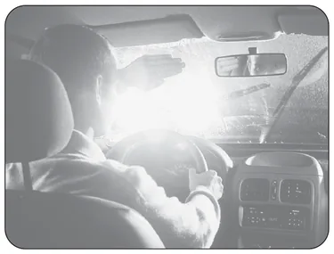
Gece karşılaşmalarda uzağı gösteren farlar karşıdaki sürücünün gözünü kamaştırır; bu yüzden yakını gösteren farlara geçilmelidir. Sis, park ve acil uyarı ışıkları bu amaçla kullanılmaz.
12 Ocak 2014 · MTSAS · B sertifikası · toplam 3 sınavda çıktı
Geceleyin önündeki aracı geçmek isteyen sürücü, bu araçla yan yana gelinceye kadar hangi ışıkları kullanmalıdır?
Geceleyin öndeki aracı geçecek sürücü, onunla yan yana gelinceye kadar yakını gösteren ışıkları kullanır; uzağı gösteren ışıklar öndeki sürücünün aynalardan gözünü kamaştırır.
15 Aralık 2012 · MTSAS · B sertifikası · toplam 3 sınavda çıktı
Şekildeki gibi yeterince aydınlatılmamış tünele giriş yapan aracın sürücüsü, aşağıdakilerden hangisini yapmak zorundadır?
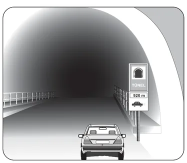
Yeterince aydınlatılmamış tünelde görüşü artırmak için uzağı gösteren ışıklar yakılır. Karşıdan gelen veya yakından izlenen bir araç olduğunda göz kamaştırmamak için yakını gösteren ışıklara geçilmelidir.
8 Mart 2014 · MTSAS · B sertifikası · toplam 3 sınavda çıktı
Trafik ve Çevre
Özel durumlar ve yol kullanıcıları
Bu konudan 42 çıkmış soru
Yayalara, görme engellilere, okul taşıtlarına, demir yolu geçitlerine, otoyollara, motosiklet ve bisiklet sürücülerine ilişkin özel kuralları; tedbirsiz ve saygısız sürüşü ve araçtan güvenli inip binmeyi anlatır.
Akılda kalsın
Işıklı işaret veya görevli bulunmayan, levhayla belirlenmiş yaya ve okul geçitlerinde ilk geçiş hakkı yayalarındır; sürücü yavaşlar, gerekirse durur.
Beyaz baston taşıyan, kolunda üç siyah yuvarlaklı sarı bant bulunan ya da bir kişi veya köpek yardımıyla yürüyen görme engelliye sürücü yavaşlar, gerekirse durup yardım eder.
Okul taşıtının arkasındaki DUR ışığı yalnızca öğrenci indirip bindirirken yanar; bu ışığı gören arkadaki sürücü durmak zorundadır.
Kontrollü demir yolu geçidinde hız azaltılır, bariyer açıksa uygun hızla geçilir; kontrolsüz geçitte uygun mesafede mutlaka durulur.
Otoyola hızlanma (katılma) şeridinden girilir, yavaşlama (ayrılma) şeridinden çıkılır; bağlantı yollarında geri gitmek, duraklamak ve park etmek yasaktır.
Motosiklette sürücü arkasında yeterli oturma yeri olsa bile bir kişiden fazlası taşınamaz; sürüş sırasında elde paket taşınamaz.
İniş eğimli yolda motoru durdurup vitesi boşa alarak inmek yasaktır.
Yayalar ve yaya geçitleri
Görevli kişi veya ışıklı işaret bulunmayan, ancak levhalarla belirlenmiş yaya ve okul geçitlerine yaklaşan sürücüler:
Hızlarını azaltmak,
Geçitten geçen veya geçmek üzere olan yayalara ilk geçiş hakkını vermek, gerekirse geçide uygun mesafede durmak,
Varsa okul geçidi görevlisinin işaret ve talimatlarına uymak zorundadır.
Geçide yaklaşırken hızlanmak, yayayı korna ile uyarıp bekletmek veya korkutmak kurala aykırıdır. Sağa ya da sola dönen sürücü de girdiği yoldaki yaya geçidinde karşıya geçen yayalara yol verir.
Görme engelli yayalar şu işaretlerden tanınır: beyaz baston taşımak, kolunda üç siyah yuvarlaklı sarı bant bulunmak, bir yayanın veya bir köpeğin yardımıyla yürümek. Bu kişiler taşıt yolundaysa bütün sürücüler yavaşlamak, gerekirse durmak ve yardımcı olmak zorundadır.
Yayalar yaya yolu veya banket varsa orada yürür. Her iki tarafında kullanılabilir banket bulunan yollarda yayalar kendi gidiş yönlerine göre sol bankette yürür; böylece karşıdan gelen araçları görür ve tehlikeye karşı önlem alabilirler. Yaya yolu olmayan yerlerde alacakaranlıkta ve gece açık renk giysi, yansıtıcı aksesuar veya el feneri kullanmak görünürlüğü artırır.
Tedbirsiz ve saygısız sürüş
Kamunun huzurunu bozacak veya kişilere zarar verecek şekilde aşağıdaki davranışlar yasaktır:
Su, çamur ve benzerlerini sıçratmak, atmak, dökmek,
Diğer yol kullanıcılarını korkutmak veya şaşırtmak (örneğin ani yön değiştirerek yayaları şaşırtmak),
Sigara külü, izmarit veya başka şeyleri yola atmak,
Seyir hâlinde cep telefonunu elde tutarak kullanmak,
Keyfi veya kasıtlı davranışlarla yaya ya da araç trafiğini tehlikeye düşürmek.
Hız kurallarına uymak, yağışta yavaşlamak, tek şerit kullanmak ve yolcuları yol ortasında indirmemek ise doğru davranışlardır.
Okul taşıtları
Okul taşıtlarında diğer taşıtlardan farklı olarak “OKUL TAŞITI” yazısı ve arkada “DUR” ışıklı işareti bulunur. Taşıtta öğrencilere yardımcı olacak bir rehber kişi de bulundurulur.
DUR ışığı yalnızca öğrenciler inip binerken yakılır ve iniş-biniş bitinceye kadar yanar; fren lambalarıyla birlikte yanacak şekilde bağlanamaz.
DUR ışığı yandığında arkadan gelen bütün araçlar durur ve ışık sönmeden okul taşıtını geçmez.
Demir yolu (hemzemin) geçitleri
Geçit türü
Sürücünün yapması gereken
Kontrollü (bariyerli veya ışıklı-sesli)
Hızını azaltır; ışıklı ya da sesli DUR uyarısı varsa veya bariyer inmiş ya da inmekteyse durur; bariyer açıksa geçidin durumuna uygun hızla geçer.
Kontrolsüz (bariyer ve ışık yok)
Geçmeden önce makul bir mesafede mutlaka durur, iki yönü kontrol eder ve tren gelmediğinden emin olunca geçer.
Demir yolu geçitlerinde ve yakınında öndeki aracı geçmek yasaktır; geçit üzerinde duraklanmaz ve park edilmez.
Sınavda dikkat: Kontrollü geçitte cevap “hızını azaltıp bariyerin izin vermesi hâlinde uygun hızla geçmek”, kontrolsüz geçitte “uygun mesafede mutlaka durmak”tır.
Otoyollar ve bölünmüş yollar
Otoyola girerken hızlanma (katılma) şeridi kullanılır; sürücü burada hızını otoyol trafiğine uydurur ve ana şeritteki araçlara yol vererek akışa katılır.
Otoyoldan çıkarken yavaşlama (ayrılma) şeridi kullanılır; hız ana akımı yavaşlatmadan bu şeritte düşürülür.
Otoyol ve bölünmüş yolların bağlantı yollarında geri gitmek, duraklamak ve park etmek yasaktır.
Emniyet şeridi seyir, geçme veya bekleme için değil; arıza gibi zorunlu hâller ve geçiş üstünlüğüne sahip araçlar içindir.
Otoyollar yüksek hızlı motorlu taşıt trafiğine ayrılmıştır; yayalar, bisikletler, elektrikli skuterler, lastik tekerlekli traktörler, iş makineleri ve hayvanla çekilen araçlar otoyola giremez.
Bisiklet, motorlu bisiklet ve motosiklet
Yaya yollarında sürülmeleri ve ikiden fazlasının bir şeritte yan yana sürülmesi yasaktır.
Motosiklet devamlı iki elle sürülür; sürüş sırasında elde bagaj, paket ve benzeri taşınamaz.
Sürücü arkasında yeterli oturma yeri yoksa yolcu alınamaz; yer olsa bile bir kişiden fazlası taşınamaz.
Başka bir araca tutunarak sürmek ve akrobatik hareketler yapmak yasaktır.
Araçtan inip binme ve eğimli yollar
Sürücü aracını gidiş yönüne göre yolun en sağ kenarında durdurur; yolcular aracın sağ tarafından iner ve biner. Araç durmadan kapı açmak, kapılar kapanmadan hareket etmek, çevreyi kontrol etmeden kapı açmak ve taşıt yolu tarafındaki sol kapılardan yolcu indirmek yasaktır.
Sık yapılan hata: Yakıt tasarrufu düşüncesiyle inişte motoru durdurup vitesi boşa almak. Bu davranış yasaktır: motor freni devre dışı kalır, frenler aşırı ısınır, direksiyon ve fren desteği zayıflar. İnişler uygun viteste ve düşük hızla yapılır.
Bu konudan 42 gerçek soru Çalışma modunda her sorunun açıklamasıyla birlikte çözün.
MEB sınavlarında sorulmuş örnekler. Bir şık seçerek kendinizi deneyin.
Kontrollü demir yolu geçidine yaklaşan sürücü nasıl hareket etmelidir?
Kontrollü demir yolu geçidine yaklaşırken hız azaltılır; bariyer inmişse veya inmekteyse durulur, ancak bariyerin açık olması hâlinde uygun hızla geçilir.
14 Nisan 2012 · MTSAS · B sertifikası · toplam 5 sınavda çıktı
Kontrolsüz demir yolu geçidine yaklaşan sürücülerin aşağıdakilerden hangisini yapması doğrudur?
Bariyer veya ışıklı uyarı bulunmayan kontrolsüz demir yolu geçidinde tren geldiği her zaman fark edilmeyebileceğinden sürücü uygun mesafede durmalı, iki yanı kontrol edip güvenliyse geçmelidir.
11 Şubat 2012 · MTSAS · B sertifikası · toplam 3 sınavda çıktı
Okul taşıtının arkasındaki DUR ışıklı işaretinin yandığını gören arkadan gelen sürücü nasıl hareket etmelidir?
Okul taşıtının arkasındaki DUR ışığı öğrencilerin inip bindiğini gösterir; arkadan gelen sürücü aracını durdurmalı ve ışık sönmeden taşıtı geçmemelidir.
14 Nisan 2012 · MTSAS · B sertifikası · toplam 3 sınavda çıktı
Okul taşıtlarının arkasındaki DUR işaretinin yanması neyi bildirir?
Okul taşıtının arkasındaki DUR ışığı öğrencilerin indirilip bindirildiğini bildirir; arkadaki sürücüler durmalı ve taşıtı geçmemelidir.
11 Şubat 2012 · MTSAS · B sertifikası · toplam 2 sınavda çıktı
Trafik ve Çevre
Yük ve yolcu taşıma, araç çekme
Bu konudan 36 çıkmış soru
Araçların yüklenmesi, kamyon ve kamyonet kasasında yolcu taşıma, römork kullanımı, arızalı aracın çekilmesi, emniyet kemeri, koruma başlığı ve çocuk koltuğu kuralları ile ticari şoförlerin araç kullanma ve dinlenme sürelerini anlatır.
Akılda kalsın
Gabari, aracın yüklü veya yüksüz güvenle seyredebilmesi için belirlenen azami uzunluk, genişlik ve yükseklik ölçüleridir; aşılması yasaktır.
Taşınan yükün üzerine veya araç dışına yolcu bindirilemez; yükle birlikte taşınan yolcular kasada ayrılmış yerde oturtulur.
Çeken ve çekilen araç arasındaki açıklık en fazla 5 metredir; açıklık 2,5 metreyi geçerse bağlantının ortasına gündüz kırmızı yansıtıcı veya 20x20 cm kırmızı bez asılır.
Servis freni bozuk araç yalnızca çeki demiriyle çekilir ve hız saatte 15 kilometreyi geçemez.
Emniyet kemeri şehir içinde ve şehir dışında zorunludur; kazayı önlemez ama ölüm ve ağır yaralanma riskini azaltır.
Motosiklet, motorlu bisiklet ve elektrikli bisiklet sürücüleri koruma başlığı ve koruma gözlüğü kullanmak zorundadır.
Ticari şoförler 24 saatte toplam 9 saatten, aralıksız 4,5 saatten fazla araç süremez; 4,5 saatin sonunda en az 45 dakika mola verilir.
Araçların yüklenmesi
Araçlar, karayolu yapısına zarar vermeyecek ve trafik güvenliğini bozmayacak şekilde yüklenir. Bu konuda üç temel ölçü bilinmelidir:
Gabari: Araçların yüklü veya yüksüz olarak karayolunda güvenle seyredebilmesi için belirlenen azami uzunluk, genişlik ve yükseklik ölçüleri.
Taşıma sınırı: Aracın taşıyabileceği en fazla yük ve yolcu miktarı.
Dingil ağırlığı: Bir dingilin yola aktarabileceği en fazla ağırlık.
Yüklemede şunlar yasaktır:
Gabariyi, taşıma sınırını, azami yüklü ağırlığı veya dingil ağırlıklarını aşmak,
Yükü yola düşecek, dökülecek, sızacak, kayacak ya da aracın dengesini bozacak şekilde, bağlamadan yüklemek,
Sürücünün görüşünü engelleyecek veya plakaları, dur ve dönüş lambalarını, yansıtıcıları örtecek şekilde yüklemek,
Taşınan yükün üzerine veya araç dışına (çamurluk, basamak, araç üstü gibi) yolcu bindirmek,
Tehlikeli maddeleri gerekli izin ve önlemler alınmadan taşımak.
Tehlikeli madde taşıyan araçlarda yangın söndürme cihazı, yangın anında hemen kullanılabilmesi için görülebilen ve erişilmesi kolay bir yerde bulundurulur.
Kamyon, kamyonet ve römorklarda yolcu taşıma
Bu araçlarda yük üzerinde insan taşımak yasaktır. Yükle birlikte yolcu taşınacaksa yükler sağlam şekilde yerleştirilip bağlanır, kasanın yan ve arka kapakları kapalı olur ve yolcular kasa içinde kendilerine ayrılan bir yerde oturtulur.
Kısa mesafede işçi taşırken kasanın yan ve arka kapaklarının 90 cm yükseklikte sağlam biçimde kapalı olması ve kasa zemininden en az 120 cm yükseklikte tutunma korkuluğu bulunması zorunludur. Bu araçların üstünün kapalı olması zorunlu değildir.
Römork takma
Araca römork bağlandığında römorkun elektrik bağlantısı prize takılır; römork çeken aracın arka lambalarını kapattığından römorkun stop, sinyal ve arka lambaları çalışır durumda olmalıdır. B, C, C1, D ve D1 sınıfı belge sahipleri azami yüklü ağırlığı 750 kilograma kadar olan hafif römork takabilir.
Arızalı aracın çekilmesi
Çekilmesi gereken araçlar normalde kurtarıcıyla taşınır. Arızalı araç başka bir araçla en yakın onarım yerine kadar ancak şu şartlarla çekilebilir:
Çekilen aracın ağırlığı, çeken aracın taşıma sınırını aşmamalı ve çekilen araç bir sürücünün yönetiminde olmalıdır.
Her iki araç boş olmalı; sürücüler ve gerekirse birer yardımcı dışında yük veya yolcu taşınmamalıdır.
Araçlar kopmayacak şekilde çelik çubuk, çelik halat veya zincirle bağlanmalı, aralarındaki açıklık 5 metreyi geçmemelidir.
Açıklık 2,5 metreden fazlaysa bağlantının ortasına gündüz kırmızı yansıtıcı veya 20x20 cm kırmızı bez, gece kırmızı ışık veya kırmızı yansıtıcı konur. Çekilen aracın ışıkları bozuksa aynı işaret aracın arkasına da konur.
Servis freni bozuk araç, iki aracın birbirine yaklaşmasını önleyen çeki demiriyle çekilir; açıklık en fazla 1 metre, hız en fazla 15 km/s olur. Diğer çekme hâllerinde hız 20 km/s'yi geçemez.
Sınavda dikkat: Çekmede sayılar karışmasın: 5 metre en fazla açıklık, 2,5 metre kırmızı bez veya yansıtıcı asılmasını gerektiren açıklık, 15 km/s çeki demiriyle çekişte en yüksek hızdır.
Emniyet kemeri
Emniyet kemeri bulunan araçlarda kemer takmak şehir içinde de şehir dışında da zorunludur. Kemer kazayı önlemez; çarpma anında kişinin araç içinde savrulmasını, başını ön panele veya cama çarpmasını ve araçtan dışarı fırlamasını engeller. Çarpmanın etkisini göğüs kafesi ve leğen kemiği gibi vücudun daha dayanıklı bölgelerine dağıtarak başta baş ve göğüs olmak üzere ölüm ve ağır yaralanma riskini azaltır.
Koruma başlığı ve çocukların taşınması
Motosiklette emniyet kemeri yoktur. Motosiklet, motorlu bisiklet, bisiklet ve elektrikli bisiklet sürücüleri koruma başlığı (kask) ve koruma gözlüğü kullanmak zorundadır; kaskta koruyucu vizör varsa ve bisiklette gözlük aranmaz. Yolcular da kask takar; motosiklet sürücüsü ve yolcusu ayrıca koruyucu eldiven kullanır.
Boyu 150 cm'den kısa ve 36 kg'ın altındaki çocuklar, ağırlıklarına uygun çocuk bağlama sistemiyle taşınır. Boyu 135 cm'yi aşan çocuklar ön koltuk dışındaki koltuklarda emniyet kemerini kullanabilir.
Çocuk bağlama sistemi olmayan otomobillerde üç yaşın altındaki çocuklar taşınamaz.
Ön hava yastığı devre dışı bırakılmadan ön koltukta arkaya dönük çocuk koltuğu kullanılamaz.
Ticari şoförlerin çalışma süreleri
Ticari amaçla yük taşıyan ve azami ağırlığı 3,5 tonu geçen araçların şoförleri ile ticari amaçla yolcu taşıyan ve kapasitesi şoför dâhil 9 kişiyi geçen araçların şoförleri için:
Kural
Süre
24 saat içinde toplam araç kullanma
En fazla 9 saat
Aralıksız araç kullanma
En fazla 4,5 saat
4,5 saatin sonunda dinlenmeye çekilmiyorsa mola
En az 45 dakika (en az 15 dakikalık bölümler hâlinde de kullanılabilir)
Günlük kesintisiz dinlenme
24 saatte 11 saat
Bu kurallar yorgunluğa bağlı kazaları önlemek içindir ve takograf kayıtlarıyla denetlenir.
Kış lastiği
Şehirler arası yük ve yolcu taşıyan ticari araçlarda kış lastiği, iklim şartlarına göre Ulaştırma ve Altyapı Bakanlığının (yetki devrederse valiliklerin) belirlediği kış döneminde zorunludur. Bu dönem uzun yıllar 1 Aralık – 1 Nisan olarak uygulanmış, 2025–2026 kışında 15 Kasım – 15 Nisan olarak belirlenmiştir.
Bu konudan 36 gerçek soru Çalışma modunda her sorunun açıklamasıyla birlikte çözün.
MEB sınavlarında sorulmuş örnekler. Bir şık seçerek kendinizi deneyin.
Ticari amaçla şehirler arası yolda yük ve yolcu taşımacılığı yapan şoförlerin 4,5 saat devamlı araç kullandıktan sonra en az kaç dakika dinlenmeleri gerekir?
Ticari yük ve yolcu taşıyan şoförler 4,5 saat aralıksız araç kullandıktan sonra en az 45 dakika dinlenmelidir; bu kural yorgunluğa bağlı kazaları önlemeyi amaçlar.
11 Şubat 2012 · MTSAS · B sertifikası · toplam 3 sınavda çıktı
Kamyon, kamyonet ve römorklarda yükle birlikte yolcu taşınırken aşağıdakilerden hangisinin yapılması yasaktır?
Yükle birlikte yolcu taşınırken yolcular yükün üzerine oturtulamaz; yük kaydığında ya da ani frende düşebilecekleri için kasada kendilerine ayrılmış bir yerde oturmalıdırlar.
20 Ekim 2012 · MTSAS · B sertifikası · toplam 3 sınavda çıktı
Gündüz çekilen ve çeken araç arasındaki açıklık iki buçuk metreden fazla ise bağlantının orta kısmına aşağıdakilerden hangisi asılmalıdır?
Çeken ve çekilen araç arasındaki bağlantının diğer yol kullanıcılarınca fark edilmesi için açıklık 2,5 metreyi geçiyorsa ortasına kırmızı yansıtıcı veya 20x20 cm kırmızı bez asılır.
11 Şubat 2012 · MTSAS · B sertifikası · toplam 2 sınavda çıktı
Aşağıdakilerden hangisi arızalı aracı başka bir araç çekerken dikkat edilmesi gereken kurallardandır?
Arızalı bir araç çekilirken çekilen aracın direksiyon ve frenini kullanacak bir sürücünün yönetiminde olması gerekir; böylece çekilen araç yönlendirilip gerektiğinde durdurulabilir.
14 Nisan 2012 · MTSAS · B sertifikası · toplam 2 sınavda çıktı
Trafik ve Çevre
Sürücü belgesi, tescil, muayene ve sigorta
Bu konudan 37 çıkmış soru
Sürücü belgesi sınıflarını ve yaş şartlarını, sürücü adaylarında aranan şartları, araçta bulundurulması zorunlu belge ve gereçleri, araç tescili, muayene ve zorunlu sigorta kurallarını anlatır.
Akılda kalsın
Sürücü belgesi araç kullanırken yanda bulundurulur, yetkililer istediğinde gösterilir ve kullanılan aracın cinsine uygun olmalıdır.
Motosiklet için A grubu belge gerekir: A1 125 cm³ ve 11 kW'a kadar, A2 35 kW'a kadar, A ise bütün motosikletler içindir; iş makinesi için G, traktör için F sınıfı gerekir.
Sürücü belgesi için yaş, en az ilkokul eğitimi, sağlık şartları ve kurs-sınav başarısı aranır; meslek veya araç sahibi olmak şart değildir.
Araç tescil belgesi (ruhsat) aracın sahiplik belgesidir ve trafikteki araçta bulunması zorunludur.
Hususi otomobiller ilk 3 yıl muayeneden muaftır, sonra 2 yılda bir muayene edilir; teknik değişiklik yapıldığında veya kazadan sonra yetkili gerekli gördüğünde özel muayene zorunludur.
Araçta yapılan teknik değişiklik 30 gün içinde tescil kaydına işletilmelidir; işletilmeyen araç trafikten men edilir.
Zorunlu mali sorumluluk (trafik) sigortası her araç sahibi için zorunludur; kasko isteğe bağlıdır.
Sürücü belgesi ve sürücünün yükümlülükleri
Sürücü belgesi, motorlu araçların kara yolunda sürülmesine yetki veren belgedir. Sürücü belgesi olmayan kişilerin motorlu araç sürmesi de, bu kişilere araç sürdürmek de yasaktır. Sürücüler:
Belgelerinin sürdükleri aracın cinsine uygun olmasına dikkat eder,
Araç kullanırken belgelerini yanlarında bulundurur ve yetkililer istediğinde gösterir,
İkamet adresi değişikliklerini 30 gün içinde bildirir.
Sürücü belgesi sınıfları
Sınıf
Kullanılabilecek araç
En küçük yaş
M
Motorlu bisiklet (moped)
16
A1
Silindir hacmi 125 cm³'ü, gücü 11 kW'ı geçmeyen motosikletler
16
A2
Gücü 35 kW'ı geçmeyen motosikletler
18
A
Bütün motosikletler
20 (en az 2 yıllık A2 ile) veya 24
B1
Dört tekerlekli motosiklet
16
B
Otomobil ve kamyonet
18
BE
B sınıfı araç + 3.500 kg'a kadar römork
18
C1 / C1E
3.500–7.500 kg kamyon ve çekici / bunların römorklu hâli
18
C / CE
Kamyon ve çekici / bunların römorklu hâli
21
D1 / D1E
Minibüs / römorklu minibüs
21
D / DE
Minibüs ve otobüs / römorklu otobüs
24
F
Lastik tekerlekli traktör
18
G
İş makineleri
18
C1, C, D1 ve D sınıfı için en az B sınıfı belgeye; E ile biten römorklu sınıflar için ise ilgili ana sınıfa (örneğin CE için C'ye) sahip olmak gerekir. Bir belge alt sınıfları da kapsar: B sınıfı ile M, B1 ve F sınıfı araçlar da sürülebilir; A2 ile M ve A1 sınıfı araçlar kullanılabilir. M, A ve B grubu ile F ve G sınıfı belgeler 10 yıl, C ve D grubu belgeler 5 yıl geçerlidir. İlk kez belge alanlar 2 yıl süreyle aday sürücü sayılır.
Sınavda dikkat: B sınıfı belgesi olan biri A2 sınıfı için başvuruyorsa motosiklet kullanmak istiyordur. Traktör F, iş makinesi G, kamyon C, otobüs D sınıfıyla kullanılır.
Sürücü adaylarında aranan şartlar
Sınıfına göre yaş şartını taşımak,
En az ilkokul düzeyinde eğitim almış olmak,
Sağlık şartlarını taşımak,
Sürücü kursunda teorik ve uygulamalı eğitimi tamamlayıp sınavları başararak motorlu taşıt sürücüsü sertifikası almak,
Adli sicilinde kanunda sayılan belirli suçlardan mahkûmiyet bulunmamak.
Bir meslek sahibi olmak veya motorlu araç sahibi olmak şart değildir. Renk körlüğü trafik ışıklarının yeri ve sırası sabit olduğundan tek başına belge almaya engel sayılmaz. İşitme yetersizliği olan aday, işitme cihazıyla yönetmelikte istenen duyma yeterliliğine ulaşırsa B sınıfı belge alabilir.
Araç tescili ve belgeler
Araç tescil belgesi (ruhsat) aracın kimin adına kayıtlı olduğunu gösteren sahiplik belgesidir ve trafikteki araçta bulundurulması zorunludur. Kayıt ve tescilinin yapılmış olması, aracın trafiğe çıkmaya uygun olduğunu gösterir. Bakım kartı, yağ değişim kartı veya noter satış belgesi taşıma zorunluluğu yoktur.
Araç üzerinde renk ve teknik değişiklik yapılması ya da kullanım amacının değiştirilmesi hâlinde değişiklik 30 gün içinde tescil belgesine ve kayıtlarına işletilmelidir. Süresinde bildirilmeyen araçlar, değişiklik belgelenip tescil edilinceye kadar trafikten men edilir. Mevzuata aykırı değişiklik yapmak ise yasaktır.
Araç muayenesi
Araçların teknik şartlara uygunluğu, cihaz ve uzman personel bulunan muayene istasyonlarında kontrol edilir. Hususi otomobiller ilk 3 yıl muayeneden muaftır, 3 yaşından sonra 2 yılda bir muayene ettirilir. Ticari ve ağır taşıtların muayene aralıkları daha kısadır.
Muayene süresi dolmasa bile şu hâllerde özel muayene zorunludur:
Araç üzerinde teknik değişiklik yapıldığında,
Kazaya karışan aracın muayenesi yetkili zabıtaca gerekli görüldüğünde.
Sahip veya sürücü değişikliği ya da olağan bakım özel muayene gerektirmez. Zorunlu trafik sigortası yaptırılmamış araçlar muayeneye alınmaz.
Sigorta
Zorunlu mali sorumluluk (trafik) sigortası, aracın üçüncü kişilere verebileceği zararları karşılar; trafiğe çıkan her motorlu araç için yaptırılması zorunludur ve sürücü, istendiğinde poliçe bilgilerini yetkililere göstermek zorundadır. Kasko isteğe bağlıdır. Koltuk ferdi kaza sigortası ise otobüs gibi ticari yolcu taşıyan araçlarda yolcuların güvencesi için zorunludur.
Araçta bulundurulması zorunlu gereçler
Otomobillerde iki adet reflektör, ilk yardım çantası ve yangın söndürme cihazı bulunması zorunludur. Ayrıca kriko, bijon anahtarı, yedek ampul, pense, tornavida, el feneri, karlı ve buzlu günler için bir çift patinaj zinciri ve çekme halatı bulundurulur. Yangın söndürme cihazı otomobil, minibüs, kamyonet, otobüs, kamyon ve çekicilerde zorunludur; lastik tekerlekli traktörde, motosiklette ve bisiklette bu zorunluluk aranmaz.
Bu konudan 37 gerçek soru Çalışma modunda her sorunun açıklamasıyla birlikte çözün.
MEB sınavlarında sorulmuş örnekler. Bir şık seçerek kendinizi deneyin.
Hususi otomobillerde 3 yaş sonunda kaç yılda bir muayene yaptırılması zorunludur?
Hususi otomobiller ilk üç yıl muayeneden muaftır; üç yaş sonunda ise 2 yılda bir muayene yaptırılması zorunludur.
14 Nisan 2012 · MTSAS · B sertifikası · toplam 3 sınavda çıktı
Araç sahiplerinin aşağıdakilerden hangisini yaptırması zorunludur?
Trafiğe çıkan her motorlu araç için zorunlu mali sorumluluk (trafik) sigortası yaptırmak yasal zorunluluktur; kasko ve hırsızlık sigortası isteğe bağlıdır.
6 Eylül 2014 · MTSAS · B sertifikası · toplam 3 sınavda çıktı
İşitme yetersizliği olan sürücü adayı hangi durumda B sınıfı sürücü belgesi alabilir?
İşitme yetersizliği olan aday, işitme cihazıyla yönetmelikte istenen duyma yeterliliğine ulaşırsa B sınıfı sürücü belgesi alabilir; belge buna göre kısıtlamalı düzenlenir.
11 Şubat 2012 · MTSAS · B sertifikası · toplam 2 sınavda çıktı
I- Çekme halatı
II- Pense, tornavida
III- Kriko, bijon anahtarı
IV- Bir çift patinaj zinciri
Yukarıdaki malzeme ve takımlardan hangilerinin otomobillerde bulundurulması zorunludur?
Otomobillerde arıza ve olumsuz yol koşullarında kullanılmak üzere çekme halatı, pense ve tornavida, kriko ile bijon anahtarı ve bir çift patinaj zinciri bulundurulması zorunlu donanımlar arasındadır.
15 Aralık 2012 · MTSAS · B sertifikası · toplam 2 sınavda çıktı
Trafik ve Çevre
Trafik suçları, cezalar ve alkol
Bu konudan 16 çıkmış soru
Trafik kurallarına aykırılıkta uygulanan yaptırımları; ceza puanı sistemini, sürücü belgesinin geri alınmasını ve iptalini, trafikten ve araç kullanmaktan meni, alkollü ve uyuşturucu etkisinde araç kullanmanın sonuçlarını Şubat 2026 değişiklikleriyle birlikte anlatır.
Akılda kalsın
Trafikten men, yetkililerin aracın belgelerini alıp aracı belirli bir yere çekerek trafikten alıkoymasıdır.
Hususi otomobil sürücüleri için alkol sınırı 0,50 promil, diğer araç sürücüleri için 0,20 promildir.
Sınırın üzerinde alkollü araç kullandığı ilk kez tespit edilen sürücüye para cezası verilir, belgesi 6 ay geri alınır ve araç kullanmaktan men edilir.
Uyuşturucu veya uyarıcı madde aldığı tespit edilen sürücü araç kullanmaktan men edilir, para cezası verilir ve belgesi iptal edilir.
Bir yıl içinde 100 ceza puanını dolduran sürücünün belgesi 2 ay, aynı yıl ikinci kez dolduranın 4 ay geri alınır.
Kırmızı ışıkta geçmek, görevli işaretlerine uymamak, sol şeridi sürekli işgal etmek ve seyir hâlinde elde telefon kullanmak para cezası ve ceza puanı gerektirir.
Trafik idari para cezası tebliğden itibaren 15 gün içinde ödenirse dörtte bir indirim uygulanır.
Trafikte uygulanan yaptırımlar
Trafik kurallarına uymayan sürücülere ihlalin türüne göre bir veya birkaç yaptırım birlikte uygulanır:
İdari para cezası: Kural ihlallerinde uygulanan para cezasıdır. Tutarlar kanunla belirlenir ve her yıl güncellenir.
Ceza puanı: Para cezası uygulanan her ihlal için yönetmelikte belirlenen puan sürücünün siciline işlenir.
Sürücü belgesinin geri alınması veya iptali: Belirli süre ya da kalıcı olarak araç kullanma yetkisinin kaldırılmasıdır.
Trafikten men: Yetkililerce araçla ilgili belgelerin alınması ve aracın belirli bir yere çekilerek trafikten alıkonulmasıdır. Eksiklik giderilinceye kadar araç trafiğe çıkamaz.
Araç kullanmaktan men:Sürücünün o anda araç kullanmasının engellenmesidir. Belgeleri tam olsa bile alkollü, uyuşturucu veya uyarıcı madde almış sürücüler araç kullanmaktan men edilir.
Kırmızı ışıkta geçmek, trafik görevlisinin ve diğer trafik işaretlerinin talimatlarına uymamak, çok şeritli yolda en sol şeridi sürekli işgal etmek ve seyir hâlinde cep telefonunu elde tutarak kullanmak gibi ihlallerde para cezası ve ceza puanı birlikte uygulanır. Trafik işaret ve levhalarına zarar verenlere ise zararın karşılığı ve onarım masrafları ödetilir.
Ceza puanı sistemi
Durum
Sonuç
Bir yıl içinde 100 ceza puanını doldurmak
Belge 2 ay geri alınır, sürücü eğitime alınır
Aynı yıl içinde ikinci kez 100 puan
Belge 4 ay geri alınır; psiko-teknik değerlendirme ve psikiyatri muayenesi yapılır
Bir yıl içinde üçüncü kez 100 puan
Belge süresiz iptal edilir
Ölümlü kazaya asli kusurlu olarak sebep olmak
Belge 1 yıl geri alınır
İlk kez belge alanlar 2 yıl süreyle aday sürücüdür. Aday sürücünün toplam ceza puanı 75'i aşarsa veya araç cinsine bakılmaksızın 0,20 promilin üzerinde alkollü araç kullanırsa belgesi iptal edilir.
Alkollü araç kullanma
Alkol, dikkat ve tepki süresini bozar; kandaki alkol miktarı arttıkça kaza riski katlanarak yükselir. Kandaki alkol miktarı hususi otomobil sürücüleri için 0,50 promilin, diğer araç sürücüleri (ticari, resmi araçlar vb.) için 0,20 promilin üzerinde olan sürücülerin araç kullanması yasaktır.
Son 5 yıl içinde
Yaptırım
İlk tespit
İdari para cezası + belge 6 ay geri alınır
İkinci tespit
Daha yüksek para cezası + belge 2 yıl geri alınır, sürücü davranışlarını geliştirme eğitimi
Üçüncü ve sonraki tespitler
Daha yüksek para cezası + belge her seferinde 5 yıl geri alınır, psiko-teknik değerlendirme ve psikiyatri muayenesi
Sınırın üzerinde alkollü olduğu tespit edilen sürücü ayrıca araç kullanmaktan men edilir; araç sürmesine izin verilmez. 1,00 promilin üzerinde alkollü sürücüler ile alkollüyken kazaya sebep olanlar hakkında ayrıca Türk Ceza Kanunu hükümleri uygulanır. Alkol veya uyuşturucu ölçümü yaptırmayan sürücüye yüksek tutarlı para cezası verilir ve belgesi 5 yıl süreyle geri alınır.
Sınavda dikkat: İlk kez alkollü yakalanan sürücüye para cezası verilir ve belgesi 6 ay geri alınır; “araç sürmesine izin verilir” ifadesi her zaman yanlıştır.
Uyuşturucu veya uyarıcı madde
Uyuşturucu veya uyarıcı madde almış kişinin hangi yolda ve hangi şeritte olursa olsun araç kullanması yasaktır. Bu kişi araç kullanmaktan men edilir; şüphe hâlinde sağlık kuruluşunda kan, tükürük veya idrar örneği alınır. Kullandığı tespit edilen sürücüye idari para cezası verilir, sürücü belgesi iptal edilir ve hakkında Türk Ceza Kanunu hükümleri uygulanır. Yeniden belge alabilmek için iptalden itibaren en az 5 yıl geçmesi, cezaların ödenmesi, psiko-teknik değerlendirme ve sağlık kurulu raporuyla kursa yeniden başlayıp sınavları geçmek gerekir.
Sınavda dikkat: Eski tarihli sorularda bu yaptırım “belgenin 5 yıl süreyle geri alınması” olarak geçer. Şubat 2026'dan itibaren belge iptal edilmekte ve en erken 5 yıl sonra yeniden kursa başlanabilmektedir.
Hız sınırlarının aşılması
Hız ihlallerinde para cezası, sınırın kaç km/s aşıldığına göre kademeli olarak artar. En yüksek kademelerde sürücü belgesi de geri alınır:
Sınırın aşılma miktarı
Belge geri alma
Yerleşim yeri içinde 46–55, dışında 51–60 km/s
Her seferinde 30 gün
Yerleşim yeri içinde 56–65, dışında 61–70 km/s
Her seferinde 60 gün
Yerleşim yeri içinde 66, dışında 71 km/s ve üzeri
Her seferinde 90 gün
Bir yıl içinde beşinci kez geri alınan belge, süre sonunda ancak psiko-teknik değerlendirme ve psikiyatri muayenesinden geçilirse iade edilir. Geri alınan belgelerin iadesi için verilen bütün trafik cezalarının ödenmiş olması gerekir.
Tedbirsiz ve saygısız sürüş
Su ve çamur sıçratmak, diğer yol kullanıcılarını korkutmak veya şaşırtmak, yola sigara izmariti ya da başka şey atmak, seyir hâlinde elde telefon kullanmak ve keyfi davranışlarla trafiği tehlikeye sokmak tedbirsiz ve saygısız sürüş sayılır ve cezalandırılır. Hız kurallarına uymak ve aşırı hızdan kaçınmak ise doğru davranıştır. Zorunluluk olmadan el freniyle aracı ani döndürmek veya kendi etrafında çevirmek ile motosikletle tek teker gibi akrobatik hareketler yapmak, sürücü belgesinin 60 gün geri alınmasını ve aracın 60 gün trafikten men edilmesini gerektiren ağır ihlallerdir.
Cezaların ödenmesi
Trafik idari para cezası tebliğden itibaren 15 gün içinde ödenirse cezanın dörtte biri indirilir. Bir ay içinde ödenmeyen cezalara her ay için %5 faiz uygulanır.
Bu konudan 16 gerçek soru Çalışma modunda her sorunun açıklamasıyla birlikte çözün.
MEB sınavlarında sorulmuş örnekler. Bir şık seçerek kendinizi deneyin.
Aşağıdakilerden hangisi sürücüler için trafik suçudur?
Seyir hâlinde cep telefonunu elde tutarak konuşmak dikkati dağıttığı için yasaktır ve cezai yaptırımı vardır. Sağ şeritte gitmek, güvenli mesafe bırakmak ve geçitlerde yavaşlamak doğru davranışlardır.
30 Haziran 2012 · MTSAS · B sertifikası · toplam 3 sınavda çıktı
Aşağıdaki hâllerin hangisinde sürücü araç kullanmaktan men edilir?
Uyuşturucu veya uyarıcı madde alarak araç kullanmak, sürücünün karar ve tepki yeteneğini bozduğundan sürücü araç kullanmaktan men edilir ve belgesi geri alınır.
30 Haziran 2012 · MTSAS · B sertifikası · toplam 3 sınavda çıktı
I- Korkutmak veya şaşırtmak
II- Su, çamur ve benzerlerini sıçratmak, atmak ve dökmek
III- Keyfi davranışlarda bulunmak suretiyle yaya veya araç trafiğini tehlikeye düşürmek
Sürücülerin yukarıdaki davranışlarından hangileri, kişilere zarar verecek tedbirsiz ve saygısız davranışlar kapsamına girer?
Başkalarını korkutmak, üzerlerine su ve çamur sıçratmak ve keyfi hareketlerle trafiği tehlikeye sokmak, kanunda yasaklanan tedbirsiz ve saygısız sürüş davranışlarıdır.
15 Aralık 2012 · MTSAS · B sertifikası · toplam 2 sınavda çıktı
Yetkililerce, araçla ilgili belgelerin alınıp aracın belirli bir yere çekilerek trafikten alıkonulmasına ne denir?
Yetkililerce aracın belgelerinin alınıp aracın belirli bir yere çekilerek trafikten alıkonulmasına trafikten men denir; eksiklik giderilinceye kadar araç trafiğe çıkamaz.
20 Ekim 2012 · MTSAS · B sertifikası · toplam 2 sınavda çıktı
Trafik ve Çevre
Trafik kazaları ve yükümlülükler
Bu konudan 47 çıkmış soru
Trafik kazasının tanımını ve nedenlerini, kanunda sayılan asli kusur hâllerini, kazaya karışanların ve olay yerinden geçenlerin yükümlülüklerini, maddi hasarlı kazalarda tutanak düzenlenmesini anlatır.
Akılda kalsın
Trafik kazası, kara yolunda hareket hâlindeki bir veya daha fazla aracın karıştığı ölüm, yaralanma veya zararla sonuçlanan olaydır.
Kazaların en büyük nedeni insandır; özellikle sürücülerin kurallara uymaması, aşırı hız ve alkol başlıca sebeplerdir.
Kırmızı ışıkta geçmek, arkadan çarpmak, kavşakta geçiş önceliğine uymamak, karşı şeride girmek ve geçme yasağı olan yerde geçmek asli kusurdur.
Kazaya karışan sürücü hemen durur, kaza yerini ışıklı işaret veya reflektörle işaretler, ilk yardım önlemlerini alır ve kazayı yetkililere bildirir.
Ölümlü veya yaralanmalı kazalarda yetkililer gelmeden araçların yeri değiştirilmez ve izin almadan olay yerinden ayrılınmaz.
Yalnız maddi hasarlı kazalarda taraflar anlaşırsa durumu ortak tutanakla yazılı olarak tespit edip olay yerinden ayrılabilir.
Park hâlindeki araca zarar veren sürücü sahibini bulamazsa araç üzerine yazılı bilgi bırakır ve en kısa sürede zabıtaya bildirir.
Trafik kazası ve nedenleri
Trafik kazası, kara yolu üzerinde hareket hâlinde olan bir veya birden fazla aracın karıştığı ve ölüm, yaralanma veya maddi zararla sonuçlanan olaydır. Kazaların nedenleri beş başlıkta incelenir:
Kaynak
Örnekler
Sürücü
Kurallara uymamak, aşırı hız, alkollü araç kullanmak, dikkatsizlik, acelecilik, yorgunluk
Yaya ve yolcu
Kurallara aykırı karşıdan karşıya geçmek, dikkatsiz davranmak
Kusur oranlarına ilişkin istatistikler, kazaların büyük çoğunluğunun insan kaynaklı olduğunu gösterir; en büyük pay sürücülere, ardından yayalara aittir. Araç ve yol kusurlarının payı çok küçüktür. Bu nedenle kazaları azaltmanın en etkili yolu trafik kurallarına uymak ve araç bakımlarını zamanında yaptırmaktır. Fren, rot, direksiyon ve far kusurları ancak düzenli bakım ve kontrolle önlenebilir.
Trafik kazaları can kaybının yanında maddi hasar, iş gücü kaybı ve yaralıların uzun tedavi süreçleriyle ülke ekonomisini de olumsuz etkiler.
Sınavda dikkat: Tablo ve grafik yorumlama sorularında yalnızca verilen verilerden kesin olarak çıkarılabilen sonuç seçilir; örneğin “kazaların çoğu insan kaynaklıdır” veya “alkol miktarı arttıkça kaza riski artar”. Tabloda bulunmayan bilgiye dayanan yorumlar yanlıştır.
Asli kusur hâlleri
Asli kusur, kazanın oluşmasında belirleyici olan temel kural ihlalidir. Karayolları Trafik Kanunu'na göre aşağıdaki hareketleri yapan sürücüler kazada asli kusurlu sayılır:
Kırmızı ışıklı trafik işaretinde veya yetkili memurun dur işaretinde geçmek,
Taşıt giremez işareti bulunan yola girmek ya da bölünmüş yolda karşı yönün şerit, rampa ve bağlantı yollarına girmek (örneğin tek yönlü yola ters yönden girmek),
İkiden fazla şeritli yollarda karşı yönden gelen trafiğin şeridine veya yol bölümüne girmek,
Arkadan çarpmak,
Geçme yasağı olan yerlerde geçmek (örneğin devamlı çizgiyi aşarak geçmek),
Doğrultu değiştirme manevralarını yanlış yapmak (örneğin “sola dönülmez” levhasına rağmen sola dönmek),
Şeride tecavüz etmek,
Kavşaklarda geçiş önceliğine uymamak,
Kaplamanın dar olduğu yerlerde geçiş önceliğine uymamak,
Manevraları düzenleyen genel şartlara uymamak,
Yerleşim yeri dışında zorunluluk olmadan taşıt yolunda park etmek veya duraklamak ve her durumda gerekli önlemleri almamak,
Park için ayrılmış yerlerde veya taşıt yolu dışında kurallara uygun park edilmiş araçlara çarpmak.
Fazla yük veya yolcu taşımak, belgeleri yanında bulundurmamak ya da gereksiz yavaş gitmek de kural ihlalidir, ancak asli kusur listesinde yer almaz.
Kazaya karışanların yükümlülükleri
Kazaya karışan, yaralanmamış veya hafif yaralı sürücüler:
Trafik için ek tehlike yaratmadan hemen durur, kaza yerine ışıklı işaret veya üçgen reflektör koyar ve gerekli güvenlik önlemlerini alır. Bu işaretlerin amacı yaklaşan sürücülerin dikkatini çekerek ikinci bir kazayı önlemektir; taş, dal gibi gelişigüzel malzemeler kullanılmaz.
Yaralılar varsa ilk yardım önlemlerini alır ve 112'ye haber verir.
Sorumluluğun belirlenmesine yarayacak iz ve delilleri korur, kaza yerindeki durumu değiştirmez.
İstendiğinde kimlik ve adresini bildirir; sürücü belgesi, tescil belgesi ve sigorta poliçesi bilgilerini gösterir.
Kazayı yetkililere bildirir; yaralıyı sağlık kuruluşuna ulaştırmak dışında, yetkililer gelmeden veya izinleri alınmadan kaza yerinden ayrılmaz.
Kazaya karışan veya olay yerinden geçmekte olan araç sürücüleri; ilk yardım önlemlerini almak, olayı en yakın zabıtaya veya sağlık kuruluşuna bildirmek ve yetkililer isterse yaralıları en yakın sağlık kuruluşuna götürmekle yükümlüdür.
Ölümlü ve yaralanmalı kazalar
Bu kazalarda yetkililere haber vermek zorunludur ve kaza tespit tutanağını trafik zabıtası (polis veya jandarma) düzenler. Kusurun doğru belirlenebilmesi için yetkililer gelmeden araçların yeri değiştirilmez. Zabıtanın izni olmadan zaruret dışında olay yerinden ayrılan sürücüye hapis cezası verilir ve sürücü belgesi 2 yıl süreyle geri alınır.
Sık yapılan hata: Ölümlü veya ağır yaralanmalı bir kazada trafiği açmak için araçları kendiliğinden kenara çekmek. Bu durum delilleri bozar; araçların yeri ancak yetkililerin işaretleme ve tespitinden sonra değiştirilir.
Maddi hasarlı kazalar ve tutanak
Yalnız maddi hasar oluşan kazalarda taraflar yetkililerin gelmesine gerek görmezse durumu Maddi Hasarlı Trafik Kazası Tespit Tutanağı ile yazılı olarak tespit edip birlikte imzalayarak olay yerinden ayrılabilir. Mümkünse önce olay yerinin fotoğrafları çekilir, ardından araçlar trafiği engellememek için yol dışına alınır.
Tek araçlı kazalarda, taraflardan birinin belgesi yoksa veya sigortası bulunmuyorsa, alkol ya da uyuşturucu şüphesi varsa, kamuya ait bir araç karışmışsa veya kamu malına zarar verilmişse tutanağı yetkililer düzenler.
Park hâlindeki bir araca ya da sahibi başında olmayan bir mala zarar veren sürücü, zarar küçük olsa bile olay yerinden uzaklaşamaz: sahibini bulmaya çalışır, bulamazsa zarar verdiği şeyin görünür bir yerine yazılı bilgi bırakır ve en kısa sürede zabıtaya bildirir.
Bu konudan 47 gerçek soru Çalışma modunda her sorunun açıklamasıyla birlikte çözün.
Alkollü araç kullanmak dikkat ve refleksleri zayıflattığı için doğrudan sürücüden kaynaklanan bir kaza sebebidir; yağışlı hava çevreden, bakımsızlık araçtan, yapım hatası ise yoldan kaynaklanır.
11 Şubat 2012 · MTSAS · B sertifikası · toplam 2 sınavda çıktı
Aşağıdakilerden hangisi trafik kazalarının en önemli sebebidir?
Trafik kazalarının büyük çoğunluğu insan kaynaklıdır; hız, takip mesafesi ve geçiş hakkı gibi kurallara uyulmaması kazaların en önemli nedenidir. Yol ve işaret eksikliklerinin payı daha küçüktür.
14 Nisan 2012 · MTSAS · B sertifikası · toplam 2 sınavda çıktı
Aşağıdakilerden hangisi trafik kazasında asli kusur sayılır?
Kırmızı ışıkta geçmek, kanunda sayılan asli kusur hâllerinden biridir; kazaya karışan sürücü bu davranışı nedeniyle kazanın asıl sorumlusu kabul edilir.
11 Şubat 2012 · MTSAS · B sertifikası · toplam 2 sınavda çıktı
Ölümlü veya yaralanmalı kazaya karışan sürücüler önce 112'ye haber verip yaralılara ilk yardım önlemlerini almalıdır. Bu tür kazalarda araçların yeri değiştirilmez, tutanağı yetkililer düzenler.
16 Mart 2013 · MTSAS · B sertifikası · toplam 2 sınavda çıktı
Trafik ve Çevre
Trafik ve çevre
Bu konudan 33 çıkmış soru
Çevre, çevre kirliliği, atık ve gürültü kavramlarını; trafiğin hava, toprak, su ve gürültü kirliliğine etkisini, sürücülerin çevreyi korumak için yapabileceklerini ve bu konudaki yasal kuralları anlatır.
Akılda kalsın
Canlılarla etkileşim içindeki doğal ve fiziksel ögelerden oluşan dış ortama çevre, kirliliği önlemeye yönelik çalışmalara çevre koruma denir.
Bakımsız araç daha çok yakıt harcar ve egzozdan daha fazla kirletici gaz çıkarır; bu öncelikle hava kirliliğine yol açar.
Araç bakımlarını zamanında yaptırmak, uygun vitesle sürmek ve aracı gereksiz yere çalışır hâlde tutmamak kirliliği azaltır.
Egzoz susturucusu gürültüyü azaltır; sökülmesi veya değiştirilmesi gürültü kirliliğini artırır ve yasaktır.
Çevreyi rahatsız edecek derecede duman ve gürültü çıkaran araca önce ihtar yapılır, kusur giderilmezse araç trafikten men edilir.
Atık yağ, akü, lastik ve eski parçalar çevreye bırakılmaz; yetkili toplama noktalarına teslim edilir.
Toplu taşıma kullanmak, kısa mesafeleri yürümek ve uygun güzergâh seçmek trafik yoğunluğunu ve emisyonu azaltır.
Temel kavramlar
Çevre: Canlıların yaşamını sürdürdüğü ve etkileşim içinde bulunduğu hava, su, toprak gibi doğal ve fiziksel ögelerden oluşan dış ortamdır.
Çevre kirliliği: Çevrenin canlılara zarar verecek ölçüde bozulmasıdır.
Çevre koruma: Çevre kirliliğini önlemek, doğal kaynakları ve ekolojik dengeyi korumak amacıyla yapılan çalışmaların tümüdür.
Atık: Kullanıldıktan sonra atılan ve boşaltıldığı ortamda çevre kirliliğine yol açan maddelerdir.
Gürültü: Kişilerin huzurunu, ruh ve beden sağlığını bozacak seviyedeki istenmeyen seslerdir.
Trafiğin çevreye etkileri
Kara yolunda hareket eden her araç çıkardığı egzoz gazı, gürültü ve olası yağ-yakıt sızıntılarıyla çevreyi kirletici bir etkendir.
Kirlilik türü
Trafikteki kaynağı
Hava kirliliği
Egzoz gazları (karbonmonoksit, is, yanmamış yakıt vb.); bakımsız ve hasarlı egzozlu araçlar, uzun süre rölantide bekleme, yavaş akan yoğun trafik
Gürültü kirliliği
Gereksiz korna, susturucusu sökülmüş veya değiştirilmiş egzoz, araçtan dışarı taşan yüksek sesli müzik
Toprak ve su kirliliği
Bakımsız araçlardan sızan yağ, yakıt ve soğutma suyu; gelişigüzel bırakılan atık yağ, akü ve lastikler; tehlikeli maddelerin kurallara aykırı taşınması sonucu sızıntılar
Görüntü kirliliği ve çöp
Yola atılan çöp, sigara izmariti ve eski parçalar
Atıklar kötü koku ve çirkin görüntü oluşturur, hastalık taşıyan zararlıların üremesine yol açar; yola atılan izmaritler yangın da çıkarabilir. Atıkların toplanıp işlenerek yeniden kullanılır hâle getirilmesi (geri dönüşüm) ise bir zarar değil, çevreyi koruyan bir uygulamadır.
Araç bakımı ve çevre
Bakımı zamanında ve eksiksiz yapılan araçta motor verimli çalışır, daha az yakıt harcar, egzozdan daha az zararlı gaz çıkar ve yağ-yakıt sızıntısı olmaz. Bakımsız araçta ise yanma bozulur, yakıt tüketimi artar ve egzozdan çıkan fazla kirletici gaz doğrudan havaya karışarak öncelikle hava kirliliğine neden olur. Bu nedenle araç bakımını önemseyen sürücü çevre kirliliğinin azalmasına katkı sağlar. Egzoz emisyon kontrollerinin zamanında yaptırılması da aynı amaca hizmet eder.
Sınavda dikkat: “Araçların çevre üzerindeki olumsuz etkisini en aza indiren davranış hangisidir?” sorusunun cevabı genellikle araç bakımlarının zamanında ve tam olarak yaptırılmasıdır.
Egzoz susturucusu ve gürültü
Egzoz susturucusu, motordan çıkan basınçlı yanmış gazların oluşturduğu sesi azaltır. Egzoz borusu ve susturucunun orijinal hâliyle korunması gürültü kirliliğini önler; susturucu çıkarılırsa ya da değiştirilirse gürültü kirliliği artar. Araçta mevzuata aykırı değişiklik yapmak yasaktır; çevreyi rahatsız edecek derecede gürültü çıkaran değişikliklerde sürücüye ayrıca ceza uygulanır ve araç trafikten men edilir.
Çevreyi rahatsız edecek derecede duman veya gürültü çıkaran araçların sürücülerine ceza verilir ve aracın uygun hâle getirilmesi ihtar edilir; verilen sürede kusur giderilmezse araç trafikten men edilir. Araçtaki ses cihazlarını sesi dışarı taşacak ve kamunun huzurunu bozacak şekilde kullanmak, şehir içinde havalı korna kullanmak ve gereksiz yere korna çalmak da yasaktır.
Sürücülerin çevreye duyarlı davranışları
Araç bakımlarını ve egzoz emisyon kontrollerini zamanında yaptırmak,
Uygun vitesle ve dengeli hızla sürmek; ani hızlanma ve frenlerden kaçınmak,
Aracı gereksiz yere çalışır hâlde (rölantide) tutmamak,
Aracı aşırı yüklememek,
Kaliteli ve kurşunsuz yakıt kullanmak,
En kısa ve uygun güzergâhı seçmek, yoğun saatlerden kaçınmak; kısa mesafeleri yürümek,
Mümkün olduğunca toplu taşıma kullanmak,
Bakım sırasında çıkan atık yağ, akü, lastik ve eski parçaları çevreye bırakmayıp yetkili toplama noktalarına teslim etmek,
Yola sigara izmariti ve çöp atmamak,
Tehlikeli maddeleri kurallara uygun taşımak.
Özel araçların gereksiz kullanımı trafik yoğunluğunu, yakıt tüketimini, hava ve gürültü kirliliğini artırır; bu nedenle özel araç kullanımının teşvik edilmesi bir kirlilik önleme çalışması değildir. Şehirdeki yolları ve önemli yerleri iyi bilen ticari araç şoförü gereksiz dolaşmaz; böylece yakıt tüketimini ve emisyonu azaltır.
Sık yapılan hata: İniş eğimli yolda motoru durdurmayı yakıt tasarrufu ve çevre önlemi sanmak. Bu davranış motor frenini devre dışı bırakır, fren ve direksiyon güvenliğini bozar; hem tehlikeli hem de yasaktır.
Bu konudan 33 gerçek soru Çalışma modunda her sorunun açıklamasıyla birlikte çözün.
MEB sınavlarında sorulmuş örnekler. Bir şık seçerek kendinizi deneyin.
Canlılarla etkileşim içinde olan doğal ve fiziksel ögelerden oluşan dış ortama ne denir?
Canlıların yaşamını sürdürdüğü ve etkileşim içinde bulunduğu hava, su, toprak gibi doğal ve fiziksel ögelerden oluşan dış ortama çevre denir.
11 Şubat 2012 · MTSAS · B sertifikası · toplam 2 sınavda çıktı
Çevre kirliliğini önlemek amacıyla yapılan çalışmalara ne denir?
Çevre kirliliğini önlemek, doğal kaynakları ve ekolojik dengeyi korumak amacıyla yapılan çalışmaların tümüne çevre koruma denir.
16 Mart 2013 · MTSAS · B sertifikası · toplam 2 sınavda çıktı
Aşağıdakilerden hangisi çevre kirliliğinin azalmasına olumlu katkı sağlar?
Düzenli bakımı yapılan araç yakıtı daha verimli yakar ve daha az zararlı egzoz gazı çıkarır. Kurşunlu yakıt, hasarlı egzoz ve yavaş akan yoğun trafik ise kirliliği artırır.
20 Ekim 2012 · MTSAS · B sertifikası · toplam 2 sınavda çıktı
Aşağıdakilerden hangisi çevre kirliliğine yol açar?
Bakımsız araçlardan sızan yağ, yakıt ve soğutma suyu toprağa ve suya karışarak çevreyi kirletir; toplu taşıma kullanımı ve zamanında bakım ise kirliliği azaltır.
13 Nisan 2013 · MTSAS · B sertifikası · toplam 2 sınavda çıktı
Araç Tekniği
Motor ve çalışma prensibi
Bu konudan 46 çıkmış soru
Motorun yakıttan elde ettiği ısı enerjisini harekete nasıl çevirdiğini, dört zamanlı çevrimi, benzinli ile dizel motor arasındaki farkları ve silindir bloğundan kartere kadar motorun temel parçalarını anlatır.
Akılda kalsın
Dört zamanlı motorda sıra Emme – Sıkıştırma – İş (Ateşleme) – Egzoz şeklindedir; sıkıştırma 2. zamandır.
Benzinli motorda emme zamanında yakıt-hava karışımı alınır ve sıkıştırılan karışım buji kıvılcımıyla ateşlenir.
Dizel motorda emme zamanında yalnızca hava alınır; motorin, sıkıştırılıp ısınan havanın üzerine enjektörle püskürtülünce kendiliğinden tutuşur.
Yanmış gazları silindirlerden toplayıp egzoz borusuna ileten parça egzoz manifoldudur; sesi susturucu azaltır, zararlı gazları katalitik konvertör dönüştürür.
Silindir bloğu pistonlara yataklık eden ana gövdedir; karter motorun altını kapatır ve motor yağına depoluk eder.
Silindir kapak contası yanarsa motor yağına su, soğutma suyuna yağ karışır.
Silindir ve segmanların aşınması motorun yağ yakmasına yol açar.
Motor nedir?
Motor, yakıttan elde ettiği ısı enerjisini mekanik enerjiye (harekete) çeviren makinedir ve araçta hareket için gereken gücün kaynağıdır. Vites kutusu, şaft, diferansiyel ve tekerlekler bu gücü yalnızca tekerleklere taşır; fren ise aracı yavaşlatır. Taşıtlarda kullanılan benzinli ve dizel motorlar yakıtı doğrudan silindirlerin içinde yakar ve oluşan ısı enerjisini piston-biyel mekanizmasıyla krank miline iletir. Bu nedenle bunlara içten yanmalı motor denir.
Motorlar bir çevrimin kaç zamanda tamamlandığına göre iki zamanlı ve dört zamanlı olarak sınıflandırılır. Otomobillerin büyük çoğunluğunda dört zamanlı motor kullanılır.
Motorun temel parçaları
Silindir bloğu (motor bloğu): Silindirlerin içinde bulunduğu ana gövdedir. Silindirler pistonlara yataklık eder; pistonlar bu silindirlerin içinde aşağı yukarı hareket eder. Blokta soğutma suyu ve yağ kanalları da bulunur.
Silindir kapağı: Bloğun üstünü kapatır ve yanma odasını oluşturur. Supaplar ve bujiler (dizel motorda enjektörler) genellikle bu kapak üzerindedir.
Silindir kapak contası: Blok ile kapak arasında sızdırmazlık sağlar; yağ ve su kanallarını birbirinden ayırır.
Piston ve segmanlar: Piston, yanan gazların basıncıyla aşağı itilir. Segmanlar piston ile silindir arasında sızdırmazlık sağlar ve yağın yanma odasına geçmesini önler.
Biyel ve krank mili: Biyel pistonu krank miline bağlar. Pistonun doğrusal hareketi krank milinde dönme hareketine çevrilir. Krank milinin ucundaki volan dönüşün düzgün olmasını sağlar.
Eksantrik (kam) mili ve supaplar: Eksantrik mili hareketini krank milinden triger kayışı ya da zinciriyle alır ve supapları zamanında açıp kapatır. Emme supabı silindire karışımı (dizelde havayı) alır, egzoz supabı yanmış gazları dışarı bırakır. Supapların doğru zamanda ve doğru boşlukla çalışması için motorda supap ayarı yapılır.
Emme manifoldu: Havayı veya yakıt-hava karışımını silindirlere dağıtır.
Egzoz manifoldu: Silindirlerde yanmış gazları toplayarak egzoz borusuna, oradan susturucu yoluyla dışarı iletir.
Karter: Motorun alt tarafını kapatır, hareketli parçaları dış etkenlerden korur ve motor yağına depoluk eder.
Sınavda dikkat: Buji, piston, supap, silindir bloğu, silindir kapağı, manifoldlar ve karter motor parçasıdır. Aks ve şaft güç aktarma organlarına; rot, rotil ve direksiyon mili ise direksiyon sistemine aittir. Motor, şasi ve tekerlekler gibi mekanik bölümlerin dışında kalan, yolcuların bulunduğu ve dışarıdan görünen gövdeye karoseri denir.
Dört zamanlı motorun çalışması
Dört zamanlı motorda bir çevrim, pistonun dört hareketiyle (krank milinin iki tam turuyla) tamamlanır. Zamanların sırası her zaman Emme – Sıkıştırma – İş (Ateşleme) – Egzoz şeklindedir.
Zaman
Piston
Supaplar
Ne olur?
1. Emme
Aşağı iner
Emme supabı açık
Benzinli motorda yakıt-hava karışımı, dizel motorda yalnızca hava silindire dolar.
2. Sıkıştırma
Yukarı çıkar
İkisi de kapalı
Silindirdeki karışım (dizelde hava) sıkıştırılır.
3. İş (Ateşleme)
Aşağı itilir
İkisi de kapalı
Benzinli motorda buji kıvılcımı karışımı ateşler; dizel motorda püskürtülen motorin kendiliğinden yanar. Genişleyen gazlar pistonu iter; güç bu zamanda elde edilir.
Yüksek oranda sıkıştırılıp ısınan havanın üzerine enjektörle püskürtülen motorin kendiliğinden tutuşur.
Buji
Ateşleme bujisi vardır.
Ateşleme bujisi yoktur; soğukta kolay çalıştırma için ısıtma (kızdırma) bujisi bulunur.
Sınavda dikkat: “Sıkıştırılmış benzin-hava karışımını bujiyle ateşleme” benzinli motorun, “sıkıştırılmış hava üzerine motorin püskürtme” dizel motorun çalışma prensibidir. Dizel motorda yakıtı tutuşturan şey kıvılcım değil, sıkıştırılan havanın sıcaklığıdır.
Egzoz sistemi
Yanmış gazlar egzoz supabından çıktıktan sonra sırasıyla egzoz manifoldu, egzoz borusu ve susturucudan geçerek dışarı atılır.
Egzoz susturucusu: Silindirden yüksek basınçla çıkan gazların oluşturduğu sesi azaltır. Susturucusu çıkarılmış araç gürültü kirliliğine yol açar.
Katalitik konvertör: İçindeki katalizör maddeler sayesinde egzoz gazındaki karbonmonoksit gibi zararlı bileşenleri daha az zararlı gazlara dönüştürür ve emisyonu azaltır.
Sık yapılan hata: Emme manifoldu ile egzoz manifoldunu karıştırmak. Emme manifoldu silindire giriş (hava veya karışım), egzoz manifoldu silindirden çıkış (yanmış gaz) tarafındadır. Benzer şekilde susturucu yalnızca sesi azaltır; zararlı gazları dönüştüren katalitik konvertördür.
Motorda sık görülen arıza belirtileri
Motor yağında su, soğutma suyunda yağ: Silindir kapak contası yanmıştır; conta yağ ve su kanallarını artık birbirinden ayıramaz.
Yağ yakma: Silindirler ve segmanlar aşındığında karterdeki yağ yanma odasına geçip yanar; motor yağı eksilir ve egzozdan mavimsi duman çıkar.
Bu konudan 46 gerçek soru Çalışma modunda her sorunun açıklamasıyla birlikte çözün.
MEB sınavlarında sorulmuş örnekler. Bir şık seçerek kendinizi deneyin.
Aşağıdakilerden hangisi araçlarda egzoz gaz emisyonlarını azaltmak için kullanılır?
Katalitik konvertör, egzoz gazındaki karbonmonoksit gibi zararlı gazları kimyasal tepkimeyle daha az zararlı gazlara dönüştürerek emisyonu azaltır.
11 Şubat 2012 · MTSAS · B sertifikası · toplam 5 sınavda çıktı
Yanmış gazları, yanma odalarından egzoz borusuna aktaran motor parçası aşağıdakilerden hangisidir?
Egzoz manifoldu, silindirlerde yanmış gazları toplayarak egzoz borusuna iletir; emme manifoldu ise yakıt-hava karışımını silindirlere taşır.
11 Şubat 2012 · MTSAS · B sertifikası · toplam 4 sınavda çıktı
Aşağıdakilerden hangisi motorun parçasıdır?
Silindir bloğu, içinde silindirlerin bulunduğu ve motorun ana gövdesini oluşturan parçadır. Rot ve direksiyon mili direksiyon sistemine, şaft ise güç aktarma organlarına aittir.
11 Şubat 2012 · MTSAS · B sertifikası · toplam 3 sınavda çıktı
Sıkıştırılmış yakıt-hava karışımının buji ile ateşlenmesi sonucu çalışan motor hangisidir?
Benzinli motorlarda sıkıştırılan yakıt-hava karışımı bujinin oluşturduğu kıvılcımla ateşlenir; dizel motorlarda ise yakıt sıkıştırılmış sıcak havaya püskürtülünce kendiliğinden tutuşur.
20 Ekim 2012 · MTSAS · B sertifikası · toplam 3 sınavda çıktı
Araç Tekniği
Yakıt ve ateşleme sistemleri
Bu konudan 54 çıkmış soru
Yakıtın depodan silindire ulaşmasını ve havanın temizlenmesini sağlayan yakıt sistemini, benzinli motorlarda karışımı ateşleyen ateşleme sistemini ve bu sistemlerde sık görülen arızaları anlatır.
Akılda kalsın
Benzinli motorda sıkıştırılmış yakıt-hava karışımını tırnakları arasında çaktığı kıvılcımla ateşleyen parça bujidir.
Endüksiyon (ateşleme) bobini aküden gelen düşük gerilimi bujide kıvılcım oluşturacak yüksek gerilime yükseltir; distribütör bu gerilimi ateşleme sırasına göre bujilere dağıtır.
Hava filtresi kirlenirse motora yeterli hava giremez; motor çekişten düşer, yakıt tüketimi artar ve yanma bozulur.
Dizel motorda besleme pompası yakıtı depodan enjeksiyon pompasına, enjeksiyon pompası da basınçlı motorini sırasıyla enjektörlere gönderir.
Isıtma (kızdırma) bujileri soğuk havada silindirdeki havayı ısıtarak dizel motorun kolay çalışmasını sağlar; arızalıysa motor geç çalışır.
Buji kablolarından biri çıkarsa motor sarsıntılı çalışır; yakıtta toz, su veya pislik varsa motor düzensiz ve tekleyerek çalışır.
Islanarak stop eden ya da nemde zor çalışan benzinli motorda buji kabloları, bobin ve distribütör kurulanır.
Yakıt sisteminin görevi
Yakıt sistemi, yanma için gereken yakıtı ve temiz havayı uygun oranda silindirlere ulaştırır. Benzinli motorlarda görevi silindire benzin-hava karışımı göndermektir; dizel motorlarda ise motorini yüksek basınçla silindirdeki sıkıştırılmış sıcak havanın üzerine püskürtür. İçten yanmalı motorlarda benzin, motorin ve LPG yakıt olarak kullanılabilir. Buji ile ateşlemeli motorların yakıtı benzindir (bu motorlar uygun donanımla LPG de yakabilir); motorin ise dizel motorların yakıtıdır.
Yakıt sisteminin elemanları
Yakıt deposu: Aracın belli bir mesafe gidebileceği kadar yakıtı araç üzerinde taşır.
Yakıt pompası: Yakıtı depodan emerek basınçla motora gönderir. Karbüratörlü motorlarda yakıtı karbüratöre pompalayan bu parçaya benzin otomatiği de denir.
Yakıt filtresi: Yakıttaki toz, pas, su gibi yabancı maddeleri tutarak pompanın ve enjektörlerin zarar görmesini önler. Periyodik bakımı yapılmazsa tıkanır ve motora yeterli yakıt ulaşmaz.
Hava filtresi: Silindirlere alınan havadaki toz ve kum zerrelerini tutar; silindir ve pistonların aşınmasını önler, verimli yanma sağlar.
Enjektör: Yakıtı basınçla silindire veya emme manifolduna püskürten yakıt enjeksiyon sistemi parçasıdır.
Karbüratör: Karbüratörlü (eski tip) benzinli motorlarda benzin ile havayı uygun oranda karıştıran elemandır. Soğuk motorun kolay çalışması için havayı kısıp zengin karışım (az hava, fazla yakıt) hazırlayan tertibata jikle denir. Motor ısınınca jikle kapatılmalıdır; aksi hâlde yakıt tüketimi artar.
Motorun gaz verilmeden çalıştığı devri belirleyen rölanti ayarı yakıt sisteminde yapılan bir ayardır. Yakıt sisteminde yakıt seviyesi, yakıt kaçağı ve yakıt filtresi kontrol edilir; antifriz kontrolü ise soğutma sistemine aittir.
Dizel motorda yakıt yolu
Dizel motorda yakıt şu yolu izler: Depo → Besleme pompası → Yakıt filtresi → Yakıt enjeksiyon pompası → Enjektörler. Besleme pompası depodaki yakıtı emip filtreden geçirerek enjeksiyon pompasına gönderir. Enjeksiyon pompası motorini yüksek basınca çıkarır ve ateşleme sırasına göre enjektörlere gönderir. Enjektörler de motorini sıkıştırılmış sıcak havanın üzerine püskürtür. Hava filtresi, enjeksiyon pompası ve enjektörler yakıt sisteminin elemanlarıdır.
Dizel motorda yakıt, sıkıştırılan havanın sıcaklığıyla tutuşur. Soğuk havada bu sıcaklık yetersiz kalabileceğinden ısıtma (kızdırma) bujileri ilk çalıştırmada silindir içindeki havayı ısıtır. Kontak açıldığında göstergede kızdırma ikaz ışığı yanar; ışık sönünce marşa basılır. Isıtma bujisi arızalıysa motor soğuk havada geç çalışır.
Dizel araçta depodaki yakıt biterse pompa yakıt yerine hava çeker ve yakıt sistemi hava yapar; depo doldurulsa bile sistemin havası alınmadan motor çalışmayabilir. Bu yüzden yakıt ikaz ışığı yandığında en kısa sürede yakıt alınmalıdır.
Ateşleme sistemi (benzinli motorlar)
Ateşleme sisteminin görevi, silindirdeki sıkıştırılmış yakıt-hava karışımını doğru anda ateşlemektir. Elektrik akımı şu sırayla ilerler:
Akü: Sistemin elektrik kaynağıdır.
Kontak anahtarı: Devreyi açıp kapatır.
Endüksiyon (ateşleme) bobini: Aküden gelen düşük gerilimi, buji tırnakları arasında kıvılcım oluşturabilecek binlerce voltluk yüksek gerilime yükseltir.
Distribütör: Bobinde yükseltilen yüksek gerilimi ateşleme sırasına göre bujilere dağıtır.
Buji: Gelen yüksek gerilimi tırnakları arasında kıvılcıma dönüştürür; sıkıştırma zamanının sonunda karışımı ateşleyerek yanmayı başlatır.
Sınavda dikkat: Bobin gerilimi yükseltir, distribütör dağıtır, buji kıvılcım çakar. Endüksiyon bobini ateşleme sisteminin parçasıdır, yakıt sisteminin değil. Enjektör yakıt püskürtür, kıvılcım üretmez.
Arıza belirtileri ve nedenleri
Belirti
Muhtemel neden
Motor sarsıntılı çalışıyor
Buji kablolarından biri çıkmış; o silindirde ateşleme olmuyor.
Bujide kıvılcım oluşmuyor
Endüksiyon bobini kablosu çıkmış; bujiye yüksek gerilim ulaşmıyor.
Motor düzensiz ve tekleyerek çalışıyor
Kirli yakıt: toz, su veya pislik filtre ve enjektörleri tıkıyor.
Motor çekişten düşüyor, yakıt tüketimi artıyor
Hava filtresi kirli; karışım zenginleşiyor ve yanma tam olmuyor.
Normal yanma yok, güç kaybı var
Bujiler ayarsız, aşınmış ya da kurum bağlamış; kıvılcım zayıf.
Motor zor çalışıyor
Enjektör arızası; yakıt düzgün püskürtülemiyor.
Dizel motor soğukta geç çalışıyor
Isıtma bujisi arızalı.
Nemli havada, araç yıkandıktan sonra ya da su birikintisinden geçerken buji kabloları, bobin ve distribütör ıslanırsa yüksek gerilim kaçar ve kıvılcım zayıflar. Benzinli motor zor çalışıyor veya ıslanarak stop ettiyse ateşleme sistemi parçaları kurulanır. Arka arkaya marş yapmak sorunu çözmez, yalnızca aküyü boşaltır.
Sık yapılan hata: Çatlamış yakıt hortumunu bantla sararak kullanmak. Sızan yakıt yangın tehlikesi doğurur; çatlak benzin hortumu mutlaka değiştirilir.
Sınavda dikkat: Tozlu ve nemli ortamlarda hava filtresi daha çabuk kirlenir; bu koşullarda bakımı daha sık yapılmalıdır. Hava filtresi havayı, yakıt filtresi yakıtı, yağ filtresi motor yağını temizler.
Bu konudan 54 gerçek soru Çalışma modunda her sorunun açıklamasıyla birlikte çözün.
MEB sınavlarında sorulmuş örnekler. Bir şık seçerek kendinizi deneyin.
Hangisi, silindir içinde sıkıştırılmış olan yakıt-hava karışımını elektrik kıvılcımı ile ateşler?
Benzinli motorlarda silindirde sıkıştırılmış yakıt-hava karışımını elektrik kıvılcımıyla ateşleyen parça bujidir. Ateşleme bobini bujiye gereken yüksek gerilimi üretir.
11 Şubat 2012 · MTSAS · B sertifikası · toplam 5 sınavda çıktı
Aşağıdakilerden hangisi motorda normal yanma olmamasının sebeplerindendir?
Kirli hava filtresi silindirlere yeterli hava girmesini engeller; yakıt-hava karışımı zenginleşir ve yanma tam olmaz. Bu durum güç kaybına, yakıt tüketiminin artmasına ve siyah dumana yol açar.
11 Şubat 2012 · MTSAS · B sertifikası · toplam 3 sınavda çıktı
Buji kablolarından biri çıkmış ise motor nasıl çalışır?
Buji kablolarından biri çıkarsa o silindirde ateşleme olmaz; motor diğer silindirlerle çalışmayı sürdürür ama güç dengesi bozulduğu için sarsıntılı çalışır.
11 Şubat 2012 · MTSAS · B sertifikası · toplam 3 sınavda çıktı
Benzinli motorlarda, aşağıdakilerden hangisinin tırnakları arasında oluşan kıvılcımla silindir içerisindeki yanma olayı başlatılmış olur?
Benzinli motorlarda sıkıştırma zamanının sonunda bujinin tırnakları arasında oluşan kıvılcım, silindirdeki yakıt-hava karışımını ateşleyerek yanmayı başlatır.
2 Şubat 2013 · MTSAS · B sertifikası · toplam 3 sınavda çıktı
Araç Tekniği
Soğutma sistemi
Bu konudan 39 çıkmış soru
Motoru tam güç verdiği çalışma sıcaklığında tutan soğutma sistemini; radyatör, termostat, su pompası, fan ve antifrizin görevlerini, motorun hararet yapma nedenlerini ve hararet anında yapılması gerekenleri anlatır.
Akılda kalsın
Termostat, soğutma suyunun radyatöre geçişini açıp kapatarak suyu çalışma sıcaklığında sabit tutar; açık kalırsa motor çalışma sıcaklığına çok geç ulaşır.
Motor soğutma suyu temiz, kireçsiz su ile antifriz karışımıdır; antifriz donmayı ve korozyonu önlediği için her iklim şartında kullanılır.
Su (devridaim) pompası radyatörde soğuyan suyu motor bloğundaki su kanallarına gönderir.
Termostat, devridaim pompası veya fan müşirinin arızalanması, suyun eksilmesi ve kayışın kopması motorun hararet yapmasına neden olur.
Fan çalıştığı hâlde motor soğumuyorsa radyatör petekleri tıkanmıştır.
Çok sıcak motora soğuk su konursa motor bloğu çatlayabilir; hararette klima kapatılır, kalorifer sıcakta çalıştırılır, kaput açılır.
Çatlak radyatör hortumu sarılmaz, değiştirilir.
Soğutma sisteminin görevi
Yakıtın yanmasıyla oluşan ısının bir bölümü harekete dönüşür, fazlası ise motoru ısıtır. Soğutma sistemi bu fazla ısıyı uzaklaştırarak motoru öngörülen çalışma sıcaklığı aralığında tutar; böylece piston, silindir ve silindir kapağı gibi parçaların ve motor yağının aşırı ısınıp zarar görmesini önler. Motor ne çok soğuk ne de çok sıcak çalışmalıdır; her iki durumda da verim düşer. Soğutma sistemi motorun tam güç verecek şekilde çalışma sıcaklığında kalmasını sağlar.
Motorlar soğutma şekline göre su soğutmalı ve hava soğutmalı olarak ikiye ayrılır. Otomobillerde genellikle su (sıvı) soğutma kullanılır; bazı motosiklet motorları ise hava ile soğutulur.
Sistemin parçaları
Motor soğutma suyu: Temiz, kireçsiz su ile antifriz karışımıdır. Motor bloğundaki kanallarda dolaşarak yanmadan doğan ısıyı alır ve radyatöre taşır.
Su pompası (devridaim pompası): Radyatörde soğuyan suyu motor bloğundaki su kanallarına basar ve suyun sistem içinde dolaşmasını sağlar.
Radyatör: Motordan ısınarak gelen suyu, peteklerinden geçen hava akımıyla soğutur. Soğutma fanının önünde yer alır.
Soğutma fanı (vantilatör): Kanatlarıyla radyatör peteklerinden hava geçirir; özellikle düşük hızda ve beklemede soğutmayı sağlar. Elektrikli fanı, suyun sıcaklığını algılayan fan müşiri devreye sokar.
Termostat: Soğutma suyunun radyatöre geçişini sıcaklığa göre açıp kapatarak suyu belirli bir çalışma sıcaklığında sabit tutar. Motor soğukken suyu radyatöre göndermediği için motorun çabuk ısınmasını da sağlar.
Hortumlar: Suyu motor, radyatör ve kalorifer peteği arasında taşır. Kalorifer, motor suyunun ısısıyla kabini ısıttığı için kalorifer hortumları da soğutma sisteminin parçasıdır.
Vantilatör kayışı: Krank milinden aldığı hareketi alternatöre iletir; birçok motorda su pompasını (mekanik fanlı motorlarda fanı da) bu kayış döndürür. Kayış koparsa akü şarj olmaz ve motor kısa sürede hararet yapar.
Soğutma suyunun sıcaklığı göstergedeki hararet göstergesi ve hararet ikaz ışığıyla izlenir. İbre kırmızı bölgeye yaklaşıyor ya da ışık yanıyorsa motor aşırı ısınmıştır.
Antifriz
Su 0 °C'nin altında donar ve donarken genleşir; donan soğutma suyu motor bloğunu ve radyatörü çatlatabilir. Bunu önlemek için soğutma suyuna yeterli miktarda antifriz karıştırılır; antifriz suyun donma noktasını düşürür. Antifriz ayrıca soğutma sıvısının geçtiği yerlerde korozyonu, paslanmayı ve kireç oluşumunu engelleyerek parçaların ömrünü uzatır. Bu nedenle yalnızca kışın değil, her türlü iklim şartında kullanılmalıdır. Soğutma sisteminde asitli su kullanılmaz; metal parçaları aşındırır.
Sınavda dikkat: Soğutma sisteminde yapılan kontrol, soğutma suyu seviyesi ve antifriz kontrolüdür. Yağ seviyesi yağlama sistemine, elektrolit seviyesi aküye, hidrolik yağı ise fren veya direksiyon sistemine aittir. Radyatör, termostat ve devridaim pompası soğutma sisteminin elemanlarıdır; karter, külbütör ve karbüratör değildir.
Motor neden hararet yapar?
Soğutma suyunun eksilmesi: Radyatörün, radyatör hortumlarının veya kalorifer hortumlarının su sızdırması suyu azaltır.
Termostatın kapalı kalması: Su radyatöre geçemez, soğutulamaz.
Su pompasının arızalanması veya kayışının kopması: Su dolaşmaz.
Fan motorunun ya da fan müşirinin arızalanması: Su sıcaklığı yükseldiği hâlde fan devreye girmez.
Radyatör peteklerinin tıkanması: Kir veya kireçle tıkanan petekler suyu soğutamaz; fan çalışsa bile sıcaklık düşmez.
Su kanallarında pas ve kireç birikmesi: Suyun dolaşımını ve ısı aktarımını engeller.
Aracın uygun vites ve devirde kullanılmaması: Motor zorlanır ve fazla ısınır.
Termostatın ters yöndeki arızası da sınavlarda sorulur: termostat açık kalırsa su sürekli radyatörden geçip soğutulur ve motor çalışma sıcaklığına çok geç ulaşır. Hararet göstergesinin kendisinin arızalanması ise suyu azaltmaz, yalnızca yanlış bilgi verir.
Hararet yükseldiğinde yapılacaklar
Trafik kurallarına uyarak güvenli bir yerde durulur.
Klima çalışıyorsa kapatılır; klima motora ek yük bindirir.
Kalorifer sıcak konumda çalıştırılabilir; motor ısısının bir kısmı kabine aktarılarak motorun soğumasına yardım edilir.
Motor kaputu açılarak motorun soğuması kolaylaştırılır.
Motor soğumadan radyatör kapağı açılmaz; basınçlı sıcak su haşlanmaya yol açabilir. Su eksikse motor soğuduktan sonra tamamlanır.
Sık yapılan hata: Hararet yapmış motora soğuk su eklemek ya da motorun üzerine su dökmek. Ani sıcaklık farkı metalde gerilme yaratır ve motor bloğu ya da silindir kapağı çatlayabilir. Ayrıca çatlamış radyatör hortumunu bant, yapıştırıcı veya iple sarmak kalıcı çözüm değildir; basınç altındaki hortum patlayabilir. Çatlak hortum değiştirilir.
Bu konudan 39 gerçek soru Çalışma modunda her sorunun açıklamasıyla birlikte çözün.
MEB sınavlarında sorulmuş örnekler. Bir şık seçerek kendinizi deneyin.
Aşağıdakilerden hangisi, motor soğutma suyu sıcaklığını çalışma sıcaklığında sabit tutar?
Termostat, soğutma suyunun radyatöre geçişini açıp kapatarak sıcaklığı çalışma sıcaklığında sabit tutar. Radyatör ve vantilatör suyu soğutur, hararet göstergesi ise yalnızca sıcaklığı gösterir.
11 Şubat 2012 · MTSAS · B sertifikası · toplam 4 sınavda çıktı
Temiz kireçsiz su ile donmayı ve korozyonu önleyici antifriz karışımından oluşan sıvıya ne ad verilir?
Temiz ve kireçsiz suyla antifriz karışımından oluşan sıvıya motor soğutma suyu denir; antifriz kışın donmayı, yıl boyunca da paslanmayı (korozyonu) önler.
1 Eylül 2012 · MTSAS · B sertifikası · toplam 3 sınavda çıktı
Vantilatör kayışı aşağıdakilerden hangisine hareket iletir?
Krank milinden hareket alan vantilatör kayışı alternatöre (şarj dinamosuna) hareket iletir; birçok araçta su pompası ve fan da bu kayışla döndürülür.
2 Kasım 2013 · MTSAS · B sertifikası · toplam 3 sınavda çıktı
I- Termostatın arızalanması
II- Devridaim pompasının arızalanması
III- Radyatör üzerinde bulunan fan müşirinin arızalanması
Verilenlerden hangileri motorun hararet yapma sebebidir?
Termostat kapalı kalırsa su radyatöre geçemez, devridaim pompası arızalanırsa su dolaşmaz, fan müşiri bozulursa fan devreye girmez; üçü de motorun hararet yapmasına neden olur.
14 Nisan 2012 · MTSAS · B sertifikası · toplam 2 sınavda çıktı
Araç Tekniği
Yağlama sistemi
Bu konudan 27 çıkmış soru
Motor yağının görevlerini, yağı karterden motor parçalarına ulaştıran yağ pompası ve yağ filtresini, yağ çubuğuyla seviye kontrolünü, yağ basıncı ikaz ışığını ve yağ değişimini anlatır.
Akılda kalsın
Yağlama sisteminin amacı, hareketli parçalar arasındaki sürtünmeyi azaltarak aşınmayı önlemek ve parçaların ömrünü uzatmaktır; motor temizliğini de bu sistem sağlar.
Yağ pompası karterdeki yağı basınçla motor parçalarına gönderir; yağ filtresi bu yağı süzerek temizler.
Yağ seviyesi araç düz zemindeyken, motor durdurulduktan sonra yağ çubuğuyla ölçülür ve iki çizgi arasında olmalıdır.
Motor çalışırken yağ basıncı ikaz ışığı yanıyorsa en olası neden karterde yağın azalması ya da kalmamasıdır; araç durdurulup motor stop edilir.
Yağ eksilir veya özelliğini kaybederse kuru sürtünmeyle oluşan ısı parçaların birbirine kaynayıp sıkışmasına yol açar.
Karter contası yırtılırsa motor yağı sızarak eksilir.
Motor ömrünü etkileyen en önemli faktör motor yağının kalitesidir.
Yağlama sisteminin amacı
Motorda birbiri üzerinde çok hızlı hareket eden metal parçalar bulunur. Yağlama sistemi, bu parçaların arasına yağ göndererek doğrudan temas etmelerini önler. Amacı sürtünmeyi azaltarak aşınmayı önlemek ve parçaların ömrünü uzatmaktır. Böylece motor uzun süre ve verimli çalışır. Motor yağının kalitesi ve zamanında değiştirilmesi, motor ömrünü etkileyen en önemli faktördür.
Motor yağının görevleri
Sürtünmeyi azaltmak: Hareketli parçalar arasında ince bir yağ tabakası (film) oluşturur.
Aşınmayı önlemek: Sürtünmeye bağlı aşınmayı azaltarak parçaların ömrünü uzatır.
Temizlemek: Dolaşan yağ, parçalar üzerindeki kurum ve metal tozlarını alıp yağ filtresinde bırakır. Motorda çalışan parçaların temizliğini yağlama sistemi sağlar.
Soğutmaya yardım etmek: Sıcak parçalardan ısı alarak uzaklaştırır.
Sızdırmazlığa yardım etmek: Segmanlar ile silindir arasındaki boşluğu doldurarak sızdırmazlığa katkı sağlar.
Yakıt tüketimini artırmak yağın görevi değildir; iyi yağlama sürtünme kayıplarını azalttığı için tüketimi düşürür.
Sistemin parçaları
Karter: Motorun altındaki yağ haznesidir. Karter contası yırtılırsa yağ dışarı sızar ve motor yağı eksilir.
Yağ pompası: Karterdeki yağı emerek basınçla yağ kanallarına ve hareketli motor parçalarına gönderir.
Yağ filtresi: Yağ pompasının bastığı yağı süzer, içindeki metal tozu ve kiri tutar. Motor yağının temizlenmesinde kullanılır. Zamanında değiştirilmezse tıkanır, yağ akışı azalır ve parçalara yeterli yağ ulaşmaz.
Yağ çubuğu: Karterdeki yağın seviyesini üzerindeki alt ve üst işaretlerle gösterir.
Yağ müşiri ve yağ göstergesi: Yağ müşiri yağ basıncını algılar ve göstergeye ya da ikaz ışığına iletir.
Yağ doldurma kapağı: Motorun üst kısmındaki supap (külbütör) kapağı üzerindedir; motor yağı buradan konur. Soğutma suyu radyatör veya genleşme kabından, fren hidroliği ise kendi haznesinden eklenir.
Yağ seviyesi nasıl kontrol edilir?
Araç düz zemine park edilir; eğimli zeminde ölçüm yanlış sonuç verir.
Motor durdurulur ve yağın kartere inmesi için bir süre beklenir.
Yağ çubuğu çıkarılıp temiz bir bezle silinir, yerine tam olarak takılır ve yeniden çıkarılır.
Çubuktaki yağ izine bakılır: seviye alt (minimum) ve üst (maksimum) çizgilerin arasında olmalıdır.
Alt çizginin altı yağ eksikliğini, üst çizginin üstü fazla yağı gösterir; ikisi de motora zarar verir. Kontrol sırasında yağın rengine ve motorda yağ kaçağı olup olmadığına da bakılır. Hava filtresi kontrolü yağlama sistemine değil, motora hava sağlayan sisteme aittir.
Sınavda dikkat: Yağ çubuğu, motor dururken yağın seviyesini gösterir. Motor çalışırken yağlamanın olup olmadığı ise yağ göstergesinden ve yağ basıncı ikaz ışığından anlaşılır.
Yağ basıncı ikaz ışığı
Kontak açıldığında yanan yağ basıncı ikaz ışığı, motor çalışıp yağ pompası basınç oluşturunca sönmelidir. Motor çalışırken bu ışığın yanması, yağ pompasının yeterli basınç oluşturamadığını gösterir; en sık nedeni karterde yağın azalması veya hiç kalmamasıdır. Bu durumda trafik kurallarına uyarak güvenli bir yerde hemen durulur, motor stop edilir ve yağ seviyesi kontrol edilir.
Sık yapılan hata: Yağ ışığı yanarken “yakındaki servise kadar giderim” diye sürmeye devam etmek. Yağ eksilir ya da özelliğini kaybederse hareketli parçalar arasında yağ filmi kalmaz; kuru sürtünmeyle oluşan ısı parçaların birbirine kaynayıp sıkışmasına (motorun yatak sarmasına) yol açar. Yağ seviyesi normalin çok altındayken çalıştırılan motor aşırı ısınarak zarar görür.
Yağ ve filtre değişimi
Motor yağı zamanla kirlenir ve özelliğini kaybeder. Bu nedenle motor yağı ve yağ filtresi, aracın kullanma kılavuzunda belirtilen kilometre veya sürede birlikte değiştirilir. Üreticinin önerdiği özellikte yağ kullanılmalıdır. Bozuk yol, tozlu ortam ve ağır kullanım gibi zorlu koşullarda değişim daha erken yapılabilir. Atık yağ toprağa veya kanalizasyona dökülmez; çevreyi kirletir ve yetkili toplama noktalarına verilmelidir.
Bu konudan 27 gerçek soru Çalışma modunda her sorunun açıklamasıyla birlikte çözün.
MEB sınavlarında sorulmuş örnekler. Bir şık seçerek kendinizi deneyin.
Motorda çalışan parçaların temizliğini hangi sistem sağlar?
Dolaşan yağ, motor parçaları üzerindeki kurum ve metal tozlarını alıp yağ filtresinde bırakır; böylece yağlama sistemi sürtünmeyi azaltmanın yanında motorun temizliğini de sağlar.
11 Şubat 2012 · MTSAS · B sertifikası · toplam 4 sınavda çıktı
Motor çalışır durumda iken aracın gösterge panelinde yağ basıncı ikaz ışığı yanıyorsa sebebi aşağıdakilerden hangisi olabilir?
Motor çalışırken yağ basıncı ikaz ışığının yanması, yağ pompasının yeterli basınç oluşturamadığını gösterir; en sık nedeni karterde yağın azalması veya hiç kalmamasıdır ve motor derhal durdurulmalıdır.
1 Eylül 2012 · MTSAS · B sertifikası · toplam 3 sınavda çıktı
Motorda yağlama sisteminin amacı aşağıdakilerden hangisidir?
Yağlama sisteminin amacı, hareketli motor parçaları arasındaki sürtünmeyi azaltarak aşınmayı önlemek ve parçaların ömrünü uzatmaktır; yağ ayrıca soğutma ve temizleme görevi de yapar.
20 Ekim 2012 · MTSAS · B sertifikası · toplam 3 sınavda çıktı
Aşağıdakilerden hangisi motor ömrünü etkileyen en önemli faktördür?
Motor yağı hareketli parçalar arasında koruyucu bir film oluşturarak sürtünme ve aşınmayı önler; yağın kalitesi ve zamanında değiştirilmesi motor ömrünü belirleyen en önemli etkendir.
15 Aralık 2012 · MTSAS · B sertifikası · toplam 2 sınavda çıktı
Araç Tekniği
Elektrik sistemi ve akü
Bu konudan 76 çıkmış soru
Aracın elektrik ihtiyacını karşılayan akü ve şarj sistemini (alternatör, regülatör), motoru ilk harekete geçiren marş sistemini, sigortaları, aydınlatma ve sinyal lambalarını ve akü takviyesini anlatır.
Akılda kalsın
Akünün elektrolit seviyesi azalmışsa saf su eklenir; kutup başlarındaki oksit temizlenir.
Akü sökülürken önce eksi (–) kutup kablosu sökülür; artı (+) kutup başı eksiden daha kalındır.
Aracın elektriğini alternatör üretir; motor çalışırken şarj ikaz ışığı yanıyorsa arıza alternatörde (veya kayışında) olabilir.
Marş motoru aküden aldığı akımla motora ilk hareketi verir; uzun ve sık marş aküyü boşaltır, marş motorunun ömrünü kısaltır.
Sigorta aşırı akımda eriyerek devreyi keser; yanan sigorta aynı amperde yenisiyle değiştirilir ve çalışmayan bir alıcıda ilk sigortaya bakılır.
Akü asidi göze, cilde veya boyalı yüzeye temas ederse ilk iş bol suyla yıkamaktır.
Akü
Akü, elektrik enerjisini kimyasal olarak depolar ve elektrikli sistemlerin ihtiyacını karşılar. En önemli görevi motorun ilk hareketi için marş motoruna elektrik vermektir. Motor çalışmazken alternatör elektrik üretmediğinden aydınlatma sistemi ve radyo gibi alıcıların ihtiyacını da akü karşılar. Akünün artı (+) kutup başı eksi (–) kutup başından daha kalındır; bu fark kabloların ters bağlanmasını önlemeye yardımcı olur.
Akü bakımı
Bakım gerektiren akülerde elektrolit (asitli su) seviyesi kontrol edilir. Seviye azalmışsa saf (damıtık) su eklenir; elektrolitten buharlaşan yalnızca sudur, asit eklemek aküye zarar verir.
Kutup başlarında oluşan oksit temizlenir ve bağlantılar sıkılır; oksit akım geçişini zayıflatır.
Akünün üstü temiz ve kuru tutulur. Üstte biriken kir ve nem kutuplar arasında kaçak yolu oluşturur ve akü kendiliğinden boşalır. Elektrik sistemindeki bir kaçak da aynı sonucu doğurur.
Bakım gerektirmeyen akülerde kontrol gözünün yeşil görünmesi şarjın iyi durumda olduğunu gösterir.
Kışın donmaması için akünün tam şarjlı olmasına dikkat edilir; şarjı azalmış akünün elektroliti donabilir. Aküye antifriz konmaz.
Akü ile çalışırken güvenlik
Akü sökülürken önce eksi (–) kablo sökülür, takılırken önce artı (+) bağlanır. Böylece anahtarın şasiye değmesiyle oluşabilecek kısa devre ve kıvılcım önlenir.
İki kutup başına aynı anda metal bir parça değerse kısa devre olur; akü ısınır, kıvılcım çıkar ve patlayabilir.
Kutup başları ters bağlanırsa alternatör diyotları yanar.
Akü sülfürik asit içerir. Göze, cilde ya da metal veya boyalı yüzeylere temas ederse ilk yapılacak iş bol su ile yıkamaktır; tiner, antifriz veya fren hidroliği zararı artırır.
Şarj sistemi: alternatör ve regülatör
Alternatör, motorun önünde kayışla döndürülen ve araç için gerekli elektriği üreten parçadır. Motor çalışırken hem aküyü şarj eder hem de elektrikli donanımı besler. Regülatör, alternatörün ürettiği elektriğin voltajını ve şiddetini sınırlayarak akü ile alıcıları aşırı gerilimden korur. Regülatör arızalanırsa gerilim yükselir ve aydınlatma ampulleri sık sık patlar.
Kontak açıldığında akü şarj ikaz ışığı yanar, motor çalışınca sönmelidir. Motor çalıştığı hâlde yanıyorsa alternatör ya da kayışında arıza vardır ve akü şarj olmaz.
Marş sistemi
Motor kendi kendine çalışmaya başlayamaz. Marş motoru, aküden aldığı akımla volan dişlisini döndürerek motora ilk hareketi verir ve motor çalışınca devreden çıkar. Aracı hareket ettirmek ya da aküyü şarj etmek marş motorunun görevi değildir. Kontak anahtarı ise elektrik devresini açıp kapatır.
Marş motoru çok yüksek akım çeker. Uzun süre ve sık marş yapmak aküyü boşaltır ve marş motorunu aşırı ısıtarak ömrünü kısaltır; marş kısa aralıklarla denenmelidir.
Motor çalışırken marş yapılırsa marş dişlisi ve volan dişlileri zarar görür.
Belirti
Muhtemel neden
Marş motoru yavaş dönüyor
Akünün şarjı yetersiz
Marş motoru hiç dönmüyor
Akü boşalmış
Marş çalışmıyor, farlar da yanmıyor
Akü kutup başları gevşemiş veya oksitlenmiş
Marş çalışmıyor ama korna çalışıyor
Marş motorunun kablo bağlantıları
Sigortalar
Sigorta, devreden aşırı akım geçtiğinde ya da kısa devre oluştuğunda içindeki ince tel eriyerek devreyi keser; kabloları ve elektrikli donanımı yangından korur. Far, silecek, korna gibi bir elektrikli alıcı çalışmıyorsa ilk bakılacak yer sigorta kutusundaki ilgili sigortadır. Yanan sigorta aynı amperde yenisiyle değiştirilir: daha büyük amperli sigorta devreyi korumaz ve yangına yol açabilir, daha küçüğü ise sık sık atar.
Sık yapılan hata: Yanık kablo kokusuna rağmen yola devam etmek. Bu koku kısa devre ve yangın tehlikesine işarettir: güvenli bir yerde durulur, kontak kapatılır ve akü bağlantısı çıkarılır. Kısa devreden çıkan yangında da akımı kesmek için akü kutup başındaki kablo çıkarılır.
Aydınlatma ve sinyal sistemi
Lamba
Ne zaman yanar, ne bildirir?
Fren (stop) lambaları – kırmızı
Fren pedalına basılınca yanar; aracın yavaşladığını veya durduğunu bildirir. Pedala basıldığı hâlde yanmıyorsa fren müşiri arızalı olabilir.
Geri vites lambaları – beyaz
Geri vites takılınca yanar; arkadakileri geri manevradan haberdar eder.
Sinyal lambaları
Sağa veya sola dönüş ve şerit değiştirme niyetini önceden bildirir.
Acil uyarı (dörtlü ikaz) lambaları
Araç arızalanıp durmak veya mecburen park etmek zorunda kalındığında yakılır.
Sinyal verildiğinde göstergedeki sinyal ikaz ışığı çok sık yanıp sönüyorsa sinyal ampullerinden biri yanmıyordur.
Aynı devredeki iki lambadan biri (örneğin bir far ya da bir geri vites lambası) sönük yanıyorsa o lambanın bağlantısında oksitlenme vardır.
Far tamiri veya değişiminden sonra far ayarı yapılır; ayarsız far yolu iyi aydınlatmaz ya da karşıdaki sürücülerin gözünü kamaştırır.
Flaşörleri yanık bırakılarak uzun süre park edilen aracın aküsü boşalır.
Takviye ile çalıştırma
Akü boşaldığında başka bir aracın aküsünden takviye kablosuyla yararlanılabilir. Bu sırada akülerin aynı kutupları birbirine bağlanır: artı kutup artıya, eksi kutup eksiye. Ters bağlantı kısa devreye, kıvılcıma ve elektrik sisteminin zarar görmesine yol açar.
Sınavda dikkat: MEB öğretimine göre göstergeleri dijital olan (elektronik kontrollü) araçlarda başka bir aküden takviye yapılması önerilmez; ani voltaj dalgalanmaları elektronik devrelere zarar verebilir. Bu araçlar itilerek veya çekilerek de çalıştırılmaz.
Bu konudan 76 gerçek soru Çalışma modunda her sorunun açıklamasıyla birlikte çözün.
MEB sınavlarında sorulmuş örnekler. Bir şık seçerek kendinizi deneyin.
Akünün elektrolit seviyesi azalmış ise ne ilave edilir?
Akü elektrolitinden zamanla buharlaşan yalnızca sudur; bu nedenle seviye azaldığında saf (damıtık) su eklenir. Asit eklemek elektrolit yoğunluğunu bozar ve aküye zarar verir.
14 Nisan 2012 · MTSAS · B sertifikası · toplam 4 sınavda çıktı
Şekilde gösterilen marş motorunun görevi nedir?
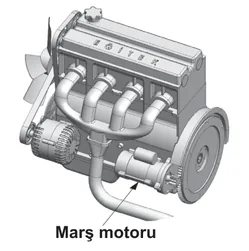
Marş motoru volan dişlisini döndürerek motora ilk hareketi verir ve motorun çalışmaya başlamasını sağlar; aracı hareket ettirmez, aküyü şarj etmek ise alternatörün görevidir.
1 Eylül 2012 · MTSAS · B sertifikası · toplam 4 sınavda çıktı
Aracın elektrik devresinde, akım yüksek olduğunda eriyerek güvenliği sağlayan parça aşağıdakilerden hangisidir?
Sigorta, devreden aşırı akım geçtiğinde içindeki ince tel eriyerek devreyi keser ve elektrikli donanımı yangın ve hasardan korur.
1 Eylül 2012 · MTSAS · B sertifikası · toplam 4 sınavda çıktı
Akünün bakımında aşağıdakilerden hangisine dikkat edilir?
Bakım gerektiren akülerde elektrolit (asitli su) seviyesi kontrol edilir, seviye düştüğünde saf su eklenir; kutup başlarının temiz ve sıkı olmasına da dikkat edilir.
11 Şubat 2012 · MTSAS · B sertifikası · toplam 4 sınavda çıktı
Araç Tekniği
Güç aktarma organları
Bu konudan 22 çıkmış soru
Motorun ürettiği gücü tekerleklere ileten kavrama (debriyaj), vites kutusu, şaft, diferansiyel ve aksları; bunların görevlerini, doğru kullanımlarını ve sık görülen arızalarını anlatır.
Akılda kalsın
Hareket motordan tekerleklere Kavrama – Vites kutusu – Şaft – Diferansiyel – Aks sırasıyla iletilir.
Kavrama (debriyaj), motorla vites kutusu arasındaki bağlantıyı keserek vites değiştirmeyi sağlar.
Diferansiyel, virajlarda çekici tekerleklerin farklı hızlarda dönmesini sağlar.
Şaft hareketi vites kutusundan diferansiyele, aks ise diferansiyelden tekerleklere iletir.
Vites kutusu aracın hızını ve torkunu ayarlar; geri vites dişlisiyle araca geri gitme yeteneği kazandırır.
Otomatik vitesli araçlar itilerek veya çekilerek çalıştırılmaz.
Aktarma organları nedir?
Motorun ürettiği güç doğrudan tekerleklere gitmez; araya giren bir dizi parça bu gücü iletir, gerektiğinde keser ve yol koşullarına göre ayarlar. Motor gücünün tekerleklere aktarılmasını sağlayan parçaların tümüne aktarma (güç aktarma) organları denir. Arkadan itişli bir araçta hareket şu sırayla iletilir:
Kavrama, motorun dönme hareketini vites kutusuna iletir. Debriyaj pedalına basıldığında motorla vites kutusu arasındaki bağlantı kesilir; böylece vites değiştirmek ve aracı yumuşak biçimde kaldırmak mümkün olur. Hareket, volan ile baskı plakası arasında sıkışan debriyaj balatası sayesinde iletilir.
Motor ilk çalıştırılırken debriyaj pedalına basmakta fayda vardır: motorla vites kutusunun bağlantısı kesildiği için marş motoru daha az yükle döner ve motor, özellikle soğuk havada, daha kolay çalışır.
Seyir sırasında ayağı sürekli debriyaj pedalının üzerinde tutmak debriyaj bilyasını devamlı çalıştırır; bilya çabuk aşınır ve sık sık bozulur.
Seyir hâlinde sürekli yarım debriyaj yapmak ve ani, sert kalkışlar balatanın kayarak ısınmasına ve hızla aşınmasına yol açar. Kalkışta pedal yumuşak ve kademeli bırakılmalıdır.
Hızı azaltmak için fren yaparken debriyaja basılmaz; basılırsa motorun frenleme etkisinden yararlanılamaz ve aracın kontrolü zorlaşır. Debriyaja ancak durmaya çok yaklaşıldığında veya vites değiştirirken basılır.
Belirti
Muhtemel neden
Debriyaj kaçırıyor: motor devri yükseliyor ama araç hızlanmıyor
Debriyaj balatası aşınmış; balata sıkışamayıp kayıyor. Bu durum yakıt tüketimini de artırır.
Vites değiştirirken vites kutusundan ses geliyor
Kavrama tam ayırmıyor; dişliler dönmeye devam ediyor.
Debriyaj bilyası sık sık bozuluyor
Seyir sırasında ayağın sürekli debriyaj pedalında tutulması.
Balata sıyrılarak aşınıyor
Ani ve sert kalkışlar, sürekli yarım debriyaj.
Vites kutusu
Vites kutusu, farklı dişli oranlarıyla aracın hızını ve tekerleklere giden torku (çekiş gücünü) yol koşullarına göre ayarlar: kalkışta ve yokuşta küçük vitesler güç, düz yolda büyük vitesler hız sağlar. Vites kutusundaki geri vites dişlisi hareketin yönünü tersine çevirerek araca geri gitme yeteneği kazandırır. Vites kutusundaki dişliler yağ içinde çalıştığından bakımda vites kutusunun yağı kontrol edilir.
Sınavda dikkat: Otomatik vitesli araçlar itilerek veya çekilerek çalıştırılmaz; bu şekilde çalıştırmaya çalışmak otomatik şanzımana zarar verebilir. Aküsü bitmiş otomatik vitesli araç takviye kablosuyla çalıştırılır.
Şaft, diferansiyel ve akslar
Şaft (kardan mili): Vites kutusundan gelen hareketi diferansiyele ileten, uçlarında mafsallar bulunan uzun mildir. Arkadan itişli araçlarda kullanılır.
Diferansiyel: Şafttan gelen hareketi akslar aracılığıyla tekerleklere iletir. Virajlarda dış tekerlek iç tekerlekten daha uzun yol alır; diferansiyel, çekici tekerleklerin farklı hızlarda dönmesini sağlayarak aracın kaymadan dönmesine imkân verir.
Aks: Diferansiyelden aldığı dönme hareketini tekerleklere ileten mildir.
Vites kutusu ve diferansiyeldeki dişliler yağ içinde çalışır. Yağ azalırsa dişliler yeterince yağlanmaz; ses, sürtünme ve aşınma artar.
Sık yapılan hata: Şaft ile aksı karıştırmak. Şaft hareketi vites kutusundan diferansiyele, aks ise diferansiyelden tekerleklere taşır. Volan ve kavrama motor tarafındadır; rot ve amortisör ise aktarma organı değil, direksiyon ve süspansiyon sistemlerinin parçalarıdır.
Önden çekiş, arkadan itiş
Motor gücünün hangi tekerleklere iletildiğine göre araçlar önden çekişli, arkadan itişli veya dört tekerlekten çekişli olabilir. Önden çekişli araçlarda vites kutusu ile diferansiyel genellikle tek gövdede birleşir, uzun şaft bulunmaz ve hareket akslarla doğrudan ön tekerleklere iletilir. Arkadan itişli araçlarda ise şaft, hareketi öndeki vites kutusundan arkadaki diferansiyele taşır. Motordan güç alan tekerleklere çekici tekerlek denir; karlı ve buzlu yollarda patinaj zinciri bu tekerleklere takılır.
Bu konudan 22 gerçek soru Çalışma modunda her sorunun açıklamasıyla birlikte çözün.
MEB sınavlarında sorulmuş örnekler. Bir şık seçerek kendinizi deneyin.
Aşağıdakilerden hangisi virajlarda çekici tekerleklerin farklı hızlarda dönmesini sağlar?
Virajlarda dış tekerlek iç tekerlekten daha uzun yol alır; diferansiyel çekici tekerleklerin farklı hızlarda dönmesini sağlayarak aracın kaymadan dönmesine imkân verir.
14 Nisan 2012 · MTSAS · B sertifikası · toplam 4 sınavda çıktı
Aşağıdakilerden hangisi, motorla vites kutusu arasındaki irtibatı keserek vites değiştirme imkânı sağlayan güç aktarma organıdır?
Kavrama (debriyaj), pedala basıldığında motorla vites kutusu arasındaki güç iletimini keserek vites değiştirmeyi ve aracın yumuşak kalkışını sağlar.
20 Ekim 2012 · MTSAS · B sertifikası · toplam 3 sınavda çıktı
Vites değiştirirken vites kutusundan ses geliyorsa sebebi aşağıdakilerden hangisi olabilir?
Debriyaj pedalına basıldığında kavrama motorla vites kutusunun bağlantısını tam kesmezse dişliler dönmeye devam eder ve vites değiştirirken vites kutusundan ses gelir.
30 Haziran 2012 · MTSAS · B sertifikası · toplam 3 sınavda çıktı
Aşağıdakilerden hangisinin yapılması otomatik vitesli araç için sakıncalıdır?
Otomatik vitesli araçlar itilerek veya çekilerek çalıştırılamaz; bu şekilde çalıştırmaya çalışmak otomatik şanzımana zarar verebilir. Akü bitmişse takviye kablosu kullanılmalıdır.
11 Şubat 2012 · MTSAS · B sertifikası · toplam 2 sınavda çıktı
Araç Tekniği
Fren, direksiyon ve süspansiyon
Bu konudan 36 çıkmış soru
Aracı yavaşlatan, durduran ve sabitleyen fren sistemini (hidrolik fren, balata, el freni, ABS, motor freni), aracı yönlendiren direksiyon sistemini ve rot ayarını, yol sarsıntılarını sönümleyen süspansiyon sistemini anlatır.
Akılda kalsın
Fren sisteminin görevi aracın hızını düşürmek ve aracı güvenle durdurmaktır; el freni duran aracı bulunduğu yerde sabitler.
Hidrolik fren sisteminde sızıntı olursa basınç oluşmaz ve frenler tutmaz; fren hidroliği seviyesi günlük bakımda kontrol edilir.
ABS frenlemede tekerleklerin kilitlenmesini önler ve direksiyon hâkimiyetini artırır.
Disk veya kampana yüzeyi bozuksa fren pedalı titrer; fren ayarı bozuksa araç frenlemede bir tarafa savrulur ve kampanalar ısınır.
Rot başları aşınırsa direksiyon boşluğu artar; rot ayarı bozuksa ön lastikler içten veya dıştan aşınır.
Süspansiyon sistemi yay ve amortisörlerle yoldan gelen titreşimleri sönümler; amortisör yay salınım süresini kısaltır.
Fren sistemi
Fren sistemi, aracın güvenli bir şekilde yavaşlamasını, durmasını ve durduğu yerde sabit kalmasını sağlar. Görevi aracın hızını düşürmek ve aracı güvenle durdurmaktır; iyi çalışan bir fren durma mesafesini artırmaz, kısaltır.
Hidrolik (ayak) freni ve balatalar
Ayak freninde pedala uygulanan kuvvet, fren hidroliği aracılığıyla tekerleklerdeki fren mekanizmalarına iletilir. Balatalar disk veya kampanaya sürtünerek tekerleği yavaşlatır. Hidrolik sistemde sızıntı olursa basınç oluşmaz ve frenler tutmaz. Bu nedenle fren hidroliği seviyesi günlük bakımda, yola çıkmadan önce kontrol edilir. Balataların aşınmasında yol koşulları (eğimli, trafiği yoğun yollar) ve kullanım süresi etkilidir; fren borularının uzunluğu etkili değildir.
El freni
El freni (park freni), duran aracı güvenli bir şekilde bulunduğu yere sabitlemek için kullanılır; seyir hâlindeki aracı yavaşlatmak ayak freninin işidir. Araç park edildikten sonra el freni çekilir; vitesi boşta bırakmak aracı hareketsiz tutmaz. El freni kolu, tel (halat) aracılığıyla arka frenleri çalıştırır; tel koparsa kol çekilse bile el freni tutmaz. El freni çekili unutulursa araç zorlanarak hareket eder; balatalar ve kampanalar aşırı ısınıp zarar görür, yakıt tüketimi de artar.
Daire içinde ünlem işareti bulunan kırmızı fren ikaz ışığı el freni çekiliyken yanar. El freni indirildiği hâlde sönmüyorsa fren hidroliği azalmış ya da fren sisteminde arıza vardır. ABS ikaz ışığı sürüş sırasında yanık kalırsa ABS'de arıza olabilir; araç en kısa sürede kontrol ettirilmelidir.
ABS
ABS, frenleme sırasında tekerleklerin kilitlenmesini önler. Tekerlekler dönmeye devam ettiği için araç daha az kayar ve sürücü fren yaparken direksiyon hâkimiyetini koruyarak engelden kaçabilir.
Motor (kompresyon) freni
Gaz pedalı bırakıldığında motorun sıkıştırma direnci tekerleklere aktarılır ve taşıt yavaşlar. Uzun inişlerde sürekli ayak freni kullanmak balataları ve fren sistemini aşırı ısıtır; sürtünme azalır ve etkili frenleme yapılamaz. Bunu önlemek için inişlerde vites küçültülerek motor freninden yararlanılır.
Belirti
Muhtemel neden
Frenlemede pedal titriyor
Disk veya kampana yüzeyleri bozuk (eğrilmiş)
Frenlemede araç bir tarafa savruluyor
Fren ayarı bozuk; tekerleklerdeki fren kuvvetleri eşit değil
Kampanalar aşırı ısınıyor
Fren ayarı bozuk; balatalar kampanaya sürekli sürtünüyor
Frenler tutmuyor
Hidrolik sistemde sızıntı ya da balataların aşırı ısınması
Araç rahat harekete geçmiyor, zorlanıyor
El freni çekili unutulmuş
Direksiyon sistemi
Direksiyon sistemi, sürücünün direksiyon simidine verdiği hareketi ön tekerleklere ileterek aracın istenen yöne kolay ve zahmetsiz yönlendirilmesini (sevk edilmesini) sağlar. Simidin dönme hareketi direksiyon mili ile direksiyon dişli kutusuna, oradan rot kolları ve rot başları aracılığıyla tekerleklere iletilir.
Hidrolik direksiyon: Sıvı basıncı yardımıyla direksiyonu çevirme kuvvetini azaltır ve aracın daha kolay yönlendirilmesini sağlar.
Rot (ön düzen) ayarı: Tekerleklerin yola doğru açıyla basmasını sağlar. Amacı düzensiz lastik aşıntılarını önlemek ve aracın düzgün istikamet takibini sağlamaktır. Rot ayarı bozuksa ön lastikler içten veya dıştan düzensiz aşınır, araç bir tarafa çekebilir. Rot ayarı genellikle tekerleklerin balans ayarıyla birlikte yaptırılır.
Sık yapılan hata: Seyir hâlinde, örneğin yokuş aşağı inerken kontağı kapatmak veya anahtarı çıkarmak. Kontak anahtarı çıkarıldığında direksiyon kilit mekanizması devreye girer ve direksiyon kilitlenir; araç kontrolden çıkar.
Süspansiyon sistemi
Süspansiyon sistemi, araç gövdesi ile tekerlekler arasına yerleştirilir. Yol yüzeyinin yapısından kaynaklanan titreşimleri, salınımları ve ani şokları sönümleyerek sürüş konforunu ve yol tutuşunu iyileştirir. Başlıca elemanları yaylar (helezon yay, makas) ve amortisörlerdir. Yay darbeyi karşılar; amortisör ise yayın salınımını sönümleyerek salınım süresini kısaltır, böylece tekerlek yolla temasını korur ve araç sallanmaz.
Sınavda dikkat: Amortisör ve helezon yay süspansiyon elemanıdır. Şaft, diferansiyel, debriyaj ve vites kutusu güç aktarma organlarıdır. Aracı yönlendirmek direksiyonun, durdurmak frenin, titreşimi sönümlemek süspansiyonun görevidir.
Bu konudan 36 gerçek soru Çalışma modunda her sorunun açıklamasıyla birlikte çözün.
MEB sınavlarında sorulmuş örnekler. Bir şık seçerek kendinizi deneyin.
Direksiyon döndürme kuvvetini azaltarak sürücüye daha kolay bir şekilde aracı yönlendirme imkânı veren sistem, aşağıdakilerden hangisidir?
Hidrolik direksiyon, sıvı basıncı yardımıyla sürücünün direksiyonu çevirmek için harcadığı kuvveti azaltır ve aracın kolayca yönlendirilmesini sağlar.
1 Eylül 2012 · MTSAS · B sertifikası · toplam 4 sınavda çıktı
Aşağıdakilerden hangisi frenleme esnasında fren pedalının titremesine neden olur?
Disk veya kampana yüzeyleri eğrilmiş ya da bozulmuşsa balata bu yüzeye düzgün temas edemez; bu nedenle frenleme sırasında pedalda titreme hissedilir.
30 Haziran 2012 · MTSAS · B sertifikası · toplam 3 sınavda çıktı
Aşağıdakilerden hangisinin aşınması direksiyon boşluğunun fazlalaşmasına neden olur?
Rot başları direksiyon hareketini tekerleklere ileten mafsallardır; aşındıklarında bağlantıda boşluk oluşur ve direksiyon boşluğu artar. Pistonlar ve krank mili motor parçasıdır.
30 Haziran 2012 · MTSAS · B sertifikası · toplam 3 sınavda çıktı
Aşağıdakilerden hangisi rot ayarının bozuk olmasına bağlı olarak meydana gelir?
Rot (ön düzen) ayarı bozuk olduğunda ön tekerlekler yola tam paralel basmaz; bu da ön lastiklerin içten veya dıştan düzensiz aşınmasına yol açar.
14 Nisan 2012 · MTSAS · B sertifikası · toplam 3 sınavda çıktı
Araç Tekniği
Lastikler ve tekerlekler
Bu konudan 22 çıkmış soru
Lastiklerin görevlerini, hava basıncı ve diş derinliği kontrolünü, yanlış basıncın ve balanssızlığın etkilerini, kış koşullarında lastik ve zincir kullanımını ve lastik değiştirme adımlarını anlatır.
Akılda kalsın
Lastik kontrolünde hava basıncı, diş derinliği ve hasar birlikte değerlendirilir; kontrol araca her binişte yapılır.
Düşük hava basıncı yakıt tüketimini artırır; aşırı basınç sürüş konforunu azaltır ve lastiği ortadan aşındırır.
Ön lastiklerin basıncı eşit değilse araç düz yolda bir tarafa çeker, frenlemede de bir yana kayar.
Balanssız tekerlek belli bir hızdan sonra direksiyonda ve araçta titreşim yapar, tekerlek yataklarını kısa sürede aşındırır.
Eski ve aşınmış lastikler yağışlı havalarda kaza riskini artırır.
Patinaj zinciri motordan güç alan çekici tekerleklerin ikisine birden takılır.
Lastik sökerken sıra: güvenlik önlemi – jant kapağı – bijonları gevşetme – kriko ile kaldırma – bijonları sökme.
Lastiklerin görevleri
Aracın yolla temas eden tek parçası lastiklerdir. Lastikler aracın ağırlığını taşır, direksiyonla verilen yönü izler, yoldan gelen darbe ve titreşimleri azaltır ve yola tutunarak hızlanmaya ve frenlemeye yardımcı olur. Bu nedenle lastiklerin durumu güvenliği doğrudan etkiler: sağlam bir lastik frenleme performansını artırır, aşınmış ya da yanlış şişirilmiş lastik ise düşürür.
Lastik kontrolü
Lastikler araca her binişte, yola çıkmadan önce gözden geçirilir. Kontrolde üç unsur birlikte değerlendirilir: hava basıncı, diş derinliği ve kesik, şişlik, çatlak gibi hasarlar. Bunlardan biri bile kusurluysa yol tutuşu bozulur.
Hava basıncı: Aracın üreticisinin önerdiği değerde olmalıdır; bu değer kullanma kılavuzunda ve çoğu araçta sürücü kapısı kenarındaki etikette yazar. Basınç lastikler soğukken ölçülür ve aynı akstaki sağ ve sol lastikler eşit tutulur.
Diş derinliği: Lastik dişleri ıslak zeminde suyu lastiğin altından tahliye eder. Dişleri aşınmış eski lastik suyu atamaz ve yola tutunamaz; kayma riski artar, fren mesafesi uzar. Bu yüzden eski ve aşınmış lastikler özellikle yağışlı havalarda kaza tehlikesini artırır. Otomobillerde yasal en düşük diş derinliği 1,6 mm'dir; lastiklerin bu sınıra gelmeden değiştirilmesi daha güvenlidir.
Lastik tipi ve ebadı: Üreticinin önerdiği tip ve ebatta lastik kullanılır. Önerilmeyen lastik aracın dengesini bozar ve yakıt tüketimini artırır.
Lastik basıncı izleme sistemi bulunan araçlarda bu ikaz ışığı, lastiklerden birinin basıncının düştüğünü bildirir; lastikler en kısa sürede kontrol edilmelidir.
Yanlış hava basıncının etkileri
Durum
Sonuç
Basınç düşük (yetersiz şişirilmiş)
Yola temas yüzeyi ve yuvarlanma direnci artar, motor zorlanır ve yakıt tüketimi artar; lastik kenarlardan aşınır ve ısınır.
Basınç yüksek (aşırı şişirilmiş)
Lastik sertleşir, yol darbelerini sönümleyemez ve sürüş konforu azalır; temas alanı küçülür, lastik ortadan aşınır.
Sağ ve sol basınçlar farklı
Düz yolda araç basıncı düşük olan tarafa çeker; fren yapıldığında araç bir tarafa çeker ve dengesi bozulur.
Sınavda dikkat: Lastiğin ortadan aşınması fazla hava basıncını, iki kenardan aşınması düşük basıncı gösterir. Ön lastiklerin içten veya dıştan aşınması ise rot ayarının bozuk olduğuna işarettir.
Balans
Lastik ve jantın ağırlığı tekerlek çevresine dengeli dağılmamışsa tekerlek balanssız olur. Balanssız tekerlek dönerken sallanır ve düz yolda belli bir hızdan sonra direksiyonda ve araçta titreşime yol açar. Bu titreşim tekerlek yataklarının, rot başlarının, süspansiyon parçalarının ve lastiğin kısa sürede aşınmasına neden olur. Çözüm balans ayarıdır; lastik değişiminden veya tamirinden sonra balans yaptırılır. Balanssızlığın motor hararetiyle bir ilgisi yoktur.
Kış koşulları
Kış lastiği, soğukta sertleşmeyen hamuru ve özel diş yapısı sayesinde soğuk, karlı ve buzlu zeminde daha iyi tutunur; yanağındaki M+S işaretinden veya dağ ve kar tanesi simgesinden tanınır. Kar ve buzla kaplı yol kesimlerinde kaymayı önlemek için patinaj (kar) zinciri, motordan güç alan çekici tekerleklerin ikisine birden takılır. Zincir tek tekerleğe takılırsa araç dengesiz çeker ve savrulabilir. Aracı kışa hazırlarken lastik kontrolü, akü ve antifriz kontrolleriyle birlikte yapılır.
Lastik değiştirme
Araç trafiği engellemeyecek, düz ve sağlam bir zemine çekilir; acil uyarı (dörtlü ikaz) lambaları yakılır.
Aracın hareket etmemesi için güvenlik önlemleri alınır: el freni çekilir, araç vitese takılır ve gerekirse yerde kalan tekerleklerin önüne ve arkasına takoz konur. Takoz, kriko ile kaldırma sırasında aracın kaymasını veya yuvarlanmasını engeller.
Jant kapağı çıkarılır.
Bijon somunları araç henüz yerdeyken gevşetilir; havadaki tekerlekte bijonu gevşetmeye çalışılırsa tekerlek döner.
Araç kriko ile tekerlek yerden kesilecek kadar kaldırılır.
Bijon somunları sökülür ve tekerlek çıkarılır.
Yedek tekerlek takılır, bijonlar önce elle oturtulur; araç indirildikten sonra çapraz sırayla sıkılır.
Sık yapılan hata: Aracı önce krikoyla kaldırıp sonra bijonları gevşetmeye çalışmak ya da takoz ve el freni gibi güvenlik önlemlerini atlamak. Doğru sökme sırası: güvenlik önlemi → jant kapağı → bijonları gevşetme → kriko ile kaldırma → bijonları sökme.
Bu konudan 22 gerçek soru Çalışma modunda her sorunun açıklamasıyla birlikte çözün.
MEB sınavlarında sorulmuş örnekler. Bir şık seçerek kendinizi deneyin.
Aşağıdakilerden hangisi balanssız tekerleğin araç üzerindeki etkilerindendir?
Ağırlığı dengesiz dağılmış (balanssız) tekerlek dönerken titreşim yaratır; bu titreşim direksiyona yansır, lastik ve süspansiyon parçalarını da çabuk aşındırır.
14 Nisan 2012 · MTSAS · B sertifikası · toplam 3 sınavda çıktı
Aşağıdakilerden hangisi balanssız tekerleğin araç üzerindeki etkilerindendir?
Balanssız tekerlek dönerken titreşim oluşturur; bu titreşim tekerlek yataklarının, rot başlarının ve lastiklerin kısa sürede aşınmasına neden olur. Motor hararetiyle ilgisi yoktur.
2 Şubat 2013 · MTSAS · B sertifikası · toplam 3 sınavda çıktı
I- Basıncı
II- Diş derinliği
III- Hasarlı olup olmadığı
Aracın lastiği kontrol edilirken yukarıdakilerden hangileri dikkate alınmalıdır?
Lastik kontrolünde hava basıncı, diş derinliği ve kesik, şişlik gibi hasarların olup olmadığı birlikte değerlendirilmelidir; biri bile kusurluysa yol tutuşu bozulur.
1 Eylül 2012 · MTSAS · B sertifikası · toplam 2 sınavda çıktı
Araç lastiklerinin yetersiz şişirilmesi aşağıdakilerden hangisine neden olur?
Az şişirilmiş lastiğin yola temas yüzeyi ve yuvarlanma direnci artar; motor daha çok zorlanacağı için yakıt tüketimi yükselir, lastik de kenarlardan hızlı aşınır.
8 Aralık 2013 · MTSAS · B sertifikası · toplam 2 sınavda çıktı
Araç Tekniği
Gösterge paneli ve ikaz lambaları
Bu konudan 67 çıkmış soru
Gösterge panelindeki hız, devir, yakıt ve hararet göstergelerini ve ikaz lambalarının anlamlarını; hangi lamba yandığında hemen durulması gerektiğini, hangisinin yalnızca bilgi verdiğini anlatır.
Akılda kalsın
Seyir hâlinde yağ basıncı, akü şarj veya hararet ikaz ışığı yanarsa trafik kurallarına uyarak derhâl durulur.
Yağ basıncı ve akü şarj ikaz ışıkları kontak açılınca yanar, motor çalışınca sönmelidir.
Motor çalışırken akü şarj ışığı yanıyorsa alternatör şarj etmiyordur; sürmeye devam edilirse akü boşalır.
Dizel araçta kontak açılınca yanan ısıtma (kızdırma) bujisi ışığı sönmeden marşa basılmaz; bu lamba yalnızca dizel araçlarda bulunur.
Daire içinde ünlem bulunan kırmızı lamba el freninin çekili olduğunu ya da fren hidroliğinin azaldığını bildirir.
Mavi renkli, önünde düz yatay çizgiler bulunan far simgesi uzun farların açık olduğunu gösterir.
Hararet göstergesi soğutma suyu sıcaklığını, devir göstergesi (rpm x 100) motorun dakikadaki devrini gösterir.
Gösterge paneli nedir?
Taşıtla ilgili sistemlerin çalışma durumunu bildiren ışıklı, sesli veya ibreli uyarıcıların toplandığı bölüme gösterge paneli denir. Hız ve devir göstergeleri, kilometre sayacı ve hava yastığı, el freni gibi ikaz ışıkları panelde yer alır. Kontak anahtarı ise aracı çalıştırmaya yarayan bir donanımdır, gösterge panelinin parçası değildir.
İbreli göstergeler
Gösterge
Neyi bildirir?
Hız göstergesi (km/h)
Aracın o anki hızını kilometre/saat cinsinden gösterir.
Devir göstergesi, devir saati (rpm x 100)
Motorun dakikadaki devir sayısını (dev/dak) gösterir. Kırmızı bölge motorun zorlandığı aşırı devirdir. Sürücü vites değiştirme zamanını ve ekonomik sürüş aralığını buna bakarak belirler.
Yakıt göstergesi (0 – 1/2 – 1)
Depodaki yakıt miktarını gösterir; ibre 0'a yaklaştıkça yakıt azalmıştır.
Hararet göstergesi (°C, termometre)
Motor soğutma suyunun sıcaklığını gösterir; ibre kırmızıya yaklaşıyorsa motor hararet yapıyordur.
Yağ göstergesi
Motordaki yağ basıncını bildirir.
Şarj göstergesi
Alternatörün elektrik üretip aküyü şarj edip etmediğini bildirir.
Kilometre sayacı
Aracın yaptığı toplam yolu gösterir.
İkaz lambalarının renkleri
Lambanın rengi uyarının önemini gösterir. Genel olarak kırmızı ciddi bir arıza ya da tehlikeyi, sarı/turuncu dikkat edilmesi ve kontrol ettirilmesi gereken bir durumu, yeşil ve mavi ise bir donanımın devrede olduğunu bildirir.
Yandığında derhâl durulması gereken lambalar
Motor yağ basıncı (damla damlatan yağdanlık): Yağ basıncı çok düşmüştür, yağlama sistemi çalışmıyordur. Araç güvenli yerde durdurulur ve motor hemen stop edilir; yağ seviyesi kontrol edilir. Yağsız çalışan motor kısa sürede ağır hasar görür.
Akü şarj (artı ve eksi kutuplu akü): Alternatör aküyü şarj etmiyordur. Sebep çoğu kez kopan kayıştır; aynı kayış su pompasını da döndürüyorsa motorun soğutulması da etkilenir. Sürmeye devam edilirse elektrik yalnız aküden karşılanır ve akü boşalır.
Hararet (dalgalı su içinde termometre): Soğutma suyu sıcaklığı aşırı yükselmiştir; motor zarar görmeden durulup motorun soğuması beklenir.
Fren sistemi (daire içinde ünlem, iki yanında yay): El freni çekiliyken yanar. El freni indirildiği hâlde sönmüyorsa fren hidroliği azalmış veya fren sisteminde arıza vardır. Daire çevresi kesik çizgili benzer simge ise balata aşınmasını bildirir.
Bu lambalar seyir hâlinde yanarsa trafik kurallarına uymak şartıyla derhâl durulur. Sinyal, uzun far ve arka cam ısıtma gibi lambalar ise yalnızca bilgi verir.
Motor çalışınca sönmesi gereken lambalar
Kontak açıldığında birçok lamba kısa süre yanarak kendini sınar. Yağ basıncı ve akü şarj ikaz ışıkları, motor çalışıp yağ pompası basınç oluşturunca ve alternatör şarja başlayınca sönmelidir. Kontak açıldığında şarj ışığı hiç yanmıyorsa ilk akla gelen arıza, ikaz ışığının ampulünün yanmış olmasıdır.
Sınavda dikkat: Dizel motorlu araçta kontak açılınca sarmal tel (helezon) simgeli ısıtma bujisi (kızdırma) ikaz ışığı yanar ve ön ısıtma bujilerinin çalıştığını gösterir. Marşa basmadan önce bu ışığın sönmesi beklenir. Bu lamba yalnızca dizel araçların panelinde bulunur; akü şarj, yağ basıncı ve hararet ikazları ise her motorda vardır.
Bilgi ve uyarı lambaları
Yakıt seviyesi (akaryakıt pompası simgesi): Depodaki yakıt bitmek üzeredir; en kısa sürede yakıt alınır.
Motor arıza: Motorla ilgili bir arıza algılanmıştır; araç en kısa sürede kontrol ettirilir.
ABS: ABS sisteminde arıza olabilir; kontrol ettirilmelidir.
Lastik basıncı: Lastiklerden birinin basıncı düşmüştür.
Arka cam rezistansı (dikdörtgen cam içinde yukarı doğru dalgalı oklar): Arka cam buğu çözücüsü çalışıyordur.
Aydınlatma ve sinyal göstergeleri
Uzun hüzmeli far: Önünde düz, yatay çizgiler bulunan mavi far simgesidir; uzağı gösteren farlar açıktır. Karşıdan araç gelince kısa fara geçilir.
Kısa hüzmeli far: Çizgileri aşağı doğru eğik far simgesidir; yakını gösteren farlar açıktır.
Sis lambaları: Işık çizgileri dalgalı bir çizgiyle kesilmiş simgedir; ön sis farı ve arka sis lambası ayrı simgelerle gösterilir.
Sinyal: Sağa bakan okun yanıp sönmesi sağ sinyalin, sola bakan okun yanıp sönmesi sol sinyalin çalıştığını gösterir. Ok çok sık yanıp sönüyorsa sinyal ampullerinden biri yanmıyordur.
Acil uyarı (dörtlü ikaz): Sağa ve sola bakan iki okun birlikte yanıp sönmesi dörtlü ikazın açık olduğunu gösterir. Dörtlü flaşörün simgesi iç içe iki üçgendir.
Sık yapılan hata: Kırmızı bir ikaz ışığı yandığında “biraz daha giderim” diye yola devam etmek. Yağ basıncı veya hararet lambası yanarken kısa bir mesafe bile motorun ağır hasar görmesine yetebilir.
Bu konudan 67 gerçek soru Çalışma modunda her sorunun açıklamasıyla birlikte çözün.
Dizel motorlarda kontak açıldığında ısıtma bujileri yanma odasını ısıtır; bu sırada yanan ısıtma bujisi ikaz ışığı sönünce marşa basılmalıdır. Böylece soğuk motor daha kolay çalışır.
1 Eylül 2012 · MTSAS · B sertifikası · toplam 3 sınavda çıktı
Sürüş sırasında aracın gösterge panelinde bulunan şekildeki ikaz ışığının yanması sürücüye neyi bildirir?
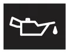
Yağdanlık simgeli ikaz ışığı motor yağ basıncının çok düştüğünü bildirir; yağsız çalışan motor hasar göreceğinden güvenli bir yerde hemen durulup motor kapatılmalıdır.
2 Şubat 2013 · MTSAS · B sertifikası · toplam 3 sınavda çıktı
Aracın gösterge panelinde, şekilde görülen akü şarj ikaz ışığı yandığı hâlde araç sürülmeye devam edilirse aşağıdakilerden hangisinin olması beklenir?
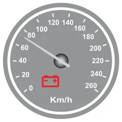
Akü simgeli şarj ikaz ışığı alternatörün aküyü şarj etmediğini bildirir; bu durumda araç sürülmeye devam edilirse elektrik ihtiyacı yalnız aküden karşılanır ve akü boşalır.
15 Aralık 2012 · MTSAS · B sertifikası · toplam 3 sınavda çıktı
Motor soğutma suyu sıcaklığını sürücüye bildiren gösterge aşağıdakilerden hangisidir?
Hararet göstergesi motor soğutma suyunun sıcaklığını sürücüye bildirir; ibrenin yükselmesi motorun aşırı ısındığını gösterir.
16 Mart 2013 · MTSAS · B sertifikası · toplam 3 sınavda çıktı
Araç Tekniği
Bakım, arıza belirtileri ve ekonomik sürüş
Bu konudan 51 çıkmış soru
Aracın günlük kontrollerini ve periyodik bakımını, rodaj dönemini, egzoz dumanı ve anormal ses gibi arıza belirtilerini, yakıt tasarrufu sağlayan alışkanlıkları ve araçtaki güvenlik donanımlarını anlatır.
Akılda kalsın
Triger kayışı, bujiler, yağ filtresi ve motor yağı kullanma kılavuzunda belirtilen kilometrede değiştirilir.
Rodaj döneminde tam gazdan, ani hızlanmalardan, uzun süre aynı viteste gitmekten, ağır yük ve dik yokuşlardan kaçınılır.
Yüksek rölanti devri, ayarsız frenler, kaçıran debriyaj ve eskimiş bujiler araçtan kaynaklanan yakıt israfı nedenleridir.
Hıza uygun olmayan viteste gitmek, aşırı hız, ani kalkış ve duruşlar sürücüden kaynaklanan yakıt israfıdır; tavan bagajı tüketimi artırır.
Egzozdan siyah duman çıkması karışım oranının bozulduğunu gösterir; dizelde sebep ayarsız enjeksiyon pompası olabilir.
Kışa hazırlıkta akü, lastik ve antifriz kontrol edilir; cam suyu haznesine cam suyu antifrizi konur.
Emniyet kemeri, aktif gergili emniyet kemeri ve hava yastığı kaza anında ölüm ve yaralanmaları azaltır.
Bakım neden önemlidir?
Kontrol ve bakımı zamanında ve doğru şekilde yapılan araç güvenli, ekonomik ve sorunsuz çalışır. Motor yakıtı verimli yaktığı için egzozdan daha az zararlı gaz çıkar ve hava kirliliğinin azalmasına da katkı sağlanır.
Günlük kontroller
Yola çıkmadan önce kısa bir kontrol, yolda kalmayı ve kazaları önler. Günlük kontrollerde motor yağı seviyesi, soğutma suyu seviyesi, fren hidroliği seviyesi, lastiklerin hava basıncı ve hasarı, lambalar, cam suyu ve gösterge panelindeki ikaz ışıkları gözden geçirilir.
Periyodik bakım
Periyodik bakım, aracın kullanma kılavuzunda belirtilen kilometre veya sürede yapılır. Bu bakımda değiştirilen başlıca parçalar motor yağı ve yağ filtresi, hava filtresi, yakıt filtresi, bujiler ve belirli kilometrelerde triger kayışıdır. Manifold, jant ve vites kutusu gibi parçalar periyodik olarak değişen parçalar değildir.
Sık yapılan hata: Triger kayışı değişimini ertelemek. Zamanla yıpranan kayış koparsa supaplar ile pistonlar çarpışabilir ve motor ağır hasar görür.
Bozuk yollar, aşırı sıcak, soğuk veya tozlu hava koşulları ve sürücünün ağır kullanım alışkanlıkları (kişisel kullanım farkları) parçaları daha çabuk yıpratır; bu durumlarda periyodik bakım daha erken yapılmalıdır. Aşırı nemli ve tozlu ortamlarda kullanılan araçta hava filtresinin bakımı daha sık yapılır.
Kışa hazırlık
Akü kontrolü: Soğuk havada akü zayıflar.
Lastik kontrolü: Kaygan yolda lastiklerin tutunması daha da önem kazanır.
Antifriz kontrolü: Soğutma suyu donmamalıdır.
Cam suyu haznesine cam suyu antifrizi konur; donan su hazneye ve pompaya zarar verir.
Rodaj (motor alıştırma) dönemi
Yeni ya da revizyon görmüş bir motorda hareketli parçaların birbirine alıştığı döneme rodaj denir. Aracın gelecekteki performansı için bu dönemde:
Tam gaz vermekten kaçınılır.
Ani hızlanmalardan kaçınılır.
Uzun süre aynı viteste ve aynı hızda gitmekten kaçınılır; hız ölçülü biçimde değiştirilir.
Ağır yüklerden ve aşırı yokuşlardan kaçınılır.
Rodaj dışında da motor çalışma sıcaklığına ulaşmadan ani gaz verilmez; soğuk motorda yağ henüz tüm parçalara ulaşmamıştır ve parçalar hızla aşınır.
Arıza belirtileri
Belirti
Muhtemel anlamı
Egzozdan siyah duman
Yakıt fazla, tam yanmıyor: karışım oranı bozulmuş, hava filtresi tıkalı olabilir. Dizel motorda yakıt enjeksiyon pompası ayarsız olabilir.
Egzozdan mavimsi duman
Motor yağ yakıyor: silindirler ve segmanlar aşınmış.
Motor ısındıktan sonra da süren beyaz duman
Soğutma suyu yanma odasına geçiyor olabilir (silindir kapak contası).
Motordan anormal sesler
Ciddi mekanik arıza olabilir: trafik kurallarına uyarak durulur, kontak kapatılır ve kontrol ettirilir.
Yanık kablo kokusu
Elektrik tesisatında kısa devre: durulur, kontak kapatılır, akü bağlantısı çıkarılır.
Motor arıza lambası yanarsa araç en kısa sürede servise götürülmelidir. Egzozdan çıkan karbonmonoksit, yakıtın tam yanmaması sonucu oluşan renksiz, kokusuz ve zehirli bir gazdır. Egzoz susturucusu çıkarılmış araç ise gürültü kirliliğini artırır.
Yakıt tasarrufu
Araçtan kaynaklanan yakıt israfı
Rölanti devrinin yüksek olması: motor beklerken bile fazla yakıt harcar.
Frenlerin ayarsız olması: balatalar sürekli sürtünür.
Debriyajın kaçırması: motor gücü tekerleklere tam iletilmez.
Eskimiş bujiler ve buji kabloları, kirli hava filtresi.
Lastik basıncının düşük olması ya da önerilmeyen tip ve ebatta lastik kullanılması.
Sürücüden kaynaklanan yakıt israfı
Aracın hızına uygun olmayan viteste gidilmesi.
Fazla sürat; yüksek hızda hava direnci hızla artar.
Ani kalkış ve duruşlar, sert frenler, tam gaz kullanımı.
Gereksiz yere tavan bagajı taşınması; hava direncini artırır.
Motorda yapılan ve yakıt tüketimini etkileyen ayarlar rölanti, buji ve avans ayarıdır; far ayarının yakıta etkisi yoktur. Klima araç içinin sıcaklığını, nemini ve hava dolaşımını ayarlamak için kullanılır; kompresörü motordan güç aldığı için yakıt tüketimini azaltmaz, artırır.
Sınavda dikkat: Yokuş aşağı vitesi boşa almak veya kontağı kapatmak yakıt tasarrufu yöntemi değildir; hem tehlikelidir hem de yasaktır. Tasarruf; trafiği önceden okuyarak akıcı sürmek, uygun viteste gitmek ve aracın bakımını aksatmamakla sağlanır.
Güvenlik donanımları
Emniyet kemeri: Sürücü ve yolcuları koltukta tutar, savrulmayı ve araçtan fırlamayı önler; kaza anında ölüm ve yaralanmaları en aza indirir. Aktif gergili emniyet kemeri çarpışma anında kemeri otomatik olarak gererek kişiyi koltuğa sabitler.
Hava yastığı (airbag): Çarpışma anında sensörlerin uyarısıyla otomatik olarak şişen pasif güvenlik sistemidir; emniyet kemeriyle birlikte etkilidir.
Park sensörü, polen filtresi ve açılır tavan ise güvenlik değil konfor donanımıdır.
Araçta ilk yardım çantası, yangın söndürme cihazı ve reflektör (yansıtıcı uyarı üçgeni) bulundurulmalıdır. Reflektör, arıza veya kaza nedeniyle yolda kalındığında yaklaşan sürücüleri uyarmak için aracın arkasına konur. Yangın riski yüksek olan tehlikeli madde taşıyan araçlarda yangın söndürme cihazı bulundurmak zorunludur.
Bu konudan 51 gerçek soru Çalışma modunda her sorunun açıklamasıyla birlikte çözün.
MEB sınavlarında sorulmuş örnekler. Bir şık seçerek kendinizi deneyin.
Aşağıdakilerden hangisi, kaza anında ölüm ve yaralanmaları en aza indirmek amacıyla sürücü ve yolcular tarafından kullanılır?
Emniyet kemeri çarpışma anında sürücü ve yolcuları koltukta tutarak savrulmayı ve araçtan fırlamayı önler; kaza anında ölüm ve yaralanmaları en aza indiren temel donanımdır.
11 Şubat 2012 · MTSAS · B sertifikası · toplam 4 sınavda çıktı
Aşağıdakilerden hangisi araçta fazla yakıt tüketimine sebep olur?
Üreticinin önermediği ölçü veya tipte lastik yuvarlanma direncini artırıp aracın dengesini bozarak yakıt tüketimini yükseltir; yeni bujiler ise yanmayı iyileştirerek tüketimi azaltır.
20 Ekim 2012 · MTSAS · B sertifikası · toplam 4 sınavda çıktı
Aracın kullanma kılavuzuna göre belirli kilometre dolunca aşağıdakilerden hangisinin değişmesi gerekir?
Triger kayışı zamanla yıprandığı için kullanma kılavuzunda belirtilen kilometrede değiştirilmelidir; koparsa supaplar ile pistonlar çarpışarak motor ağır hasar görebilir.
1 Eylül 2012 · MTSAS · B sertifikası · toplam 4 sınavda çıktı
I- Akü kontrolü
II- Lastik kontrolü
III- Antifriz kontrolü
Yukarıdakilerden hangileri aracın kış koşullarına hazırlanmasında alınması gereken önlemlerdendir?
Soğuk havada akü zayıflar, lastikler kaygan yolda tutunmalıdır ve soğutma suyu donabilir; bu yüzden kış öncesi akü, lastik ve antifriz kontrolünün üçü de yapılmalıdır.
20 Ekim 2012 · MTSAS · B sertifikası · toplam 3 sınavda çıktı
Trafik Adabı
Trafik adabı ve temel değerler
Bu konudan 20 çıkmış soru
Trafik adabının tanımını, kuralları bilmenin neden yetmediğini ve trafikte saygı, sabır, hoşgörü, nezaket, empati, sorumluluk, feragat ve diğerkâmlık gibi temel değerleri kapsar.
Akılda kalsın
Trafik adabı, ceza korkusu olmadan yazılı kurallara uymanın yanında yazılı olmayan, empati gerektiren davranışları da alışkanlık hâline getirmektir.
Bazı sürücülerin kurallara uymamasının en önemli nedeni, bildikleri kuralları davranış hâline dönüştürememiş olmalarıdır.
Kazaları önlemede en önemli unsur, trafik kültürü ve bilinci gelişmiş, kurallara uymayı alışkanlık edinmiş bireyler yetiştirmektir.
Sürücüde olması gereken davranış paylaşmayı bilmek ve saygılı olmaktır; hoşgörü ve bencillikten uzak durmak trafiği olumlu etkiler, aşırı tepki ise olumsuz etkiler.
Trafiği açmayacağını bile bile korna çalmak sabırsızlık, yayalara su sıçratmamaya özen göstermek nezakettir.
Kendisini geçen araca yavaşlayarak kolaylık sağlamak diğerkâmlık, kendi hakkından gönüllü olarak vazgeçmek feragattir.
Trafik psikolojisi, yaya ve sürücülerin davranışlarının altında yatan psikolojik süreçleri inceler.
Trafik adabı nedir?
Adap, toplumca benimsenmiş görgü ve davranış kurallarıdır. Trafik adabı ise denetim ve ceza korkusu olmadan yazılı trafik kurallarına uymanın yanı sıra yazılı olmayan; karşılıklı anlayış, nezaket ve empati gerektiren davranışları benimseyip alışkanlık hâline getirmektir. Sürücü adaylarına kuralların yanında doğru tutum ve davranışları da kazandırmak amacıyla Trafik Adabı dersi 2016 yılında sürücü kursu müfredatına eklenmiştir.
Trafik; sürücülerin, yolcuların, yayaların ve diğer canlıların birlikte kullandığı ortak bir yaşam alanıdır. Bu alanda herkesin hakkı vardır. Yolu yalnızca kendine ait görmek, kendini diğerlerinden üstün saymak ya da kendi kurallarını koymak çatışmaya ve kazaya zemin hazırlar.
Kuralları bilmek neden yetmez?
Pek çok sürücü kuralları bildiği hâlde ihlal eder. Bunun en önemli nedeni, bilinen kuralların davranış hâline dönüştürülmemiş olmasıdır. Bir kural; polis, kamera ya da ceza olmadığında da uygulanıyorsa gerçekten benimsenmiş demektir. Buna kurallara gönüllü uyum denir ve trafik kültürünün temelini oluşturur.
Trafik kazalarının büyük çoğunluğu insan hatasından kaynaklanır. Bu nedenle kazaları önlemedeki en büyük etken, cezalar ya da teknik gelişmeler tek başına değil; bireylerde trafik kültürü ve bilincinin oluşturulması, yani kurallara uymayı alışkanlık hâline getirmiş bireyler yetiştirilmesidir. Denetim ve teknoloji önemlidir, ancak bilinçli bireyler olmadan yeterli olmaz.
Trafik adabına sahip bir sürücü:
Kuralları ezberlemekle yetinmez, her kuralın neden konduğunu öğrenir.
Bir ihlalin sonucunun yalnızca para cezası olmadığını; kendisinin, yolcularının ve sevdiklerinin canını tehlikeye atmak anlamına geldiğini bilir.
Davranışlarının sonuçlarını önceden düşünür ve bu davranışların sorumluluğunu üstlenir.
Sınavda dikkat: "Kural ihlalinin sonucu yalnızca maddi cezadır" düşüncesi trafik adabıyla bağdaşmaz. Kazaları önlemedeki en önemli unsur sorulduğunda doğru yaklaşım ceza ya da teknoloji değil, kurallara uymayı alışkanlık hâline getirmiş, trafik bilinci gelişmiş bireylerdir.
Trafik psikolojisi
Trafik psikolojisi, yaya ve sürücülerin trafikteki davranışlarını ve bu davranışların altında yatan algı, dikkat, tutum ve duygu gibi psikolojik süreçleri inceleyen bilim dalıdır. Öfke, sabırsızlık ya da acelecilik gibi duyguların nasıl kural ihlaline dönüştüğünü anlamak, trafik adabını kazanmanın da ilk adımıdır.
Trafikte temel değerler
Değer
Anlamı
Trafikte örnek
Saygı
Diğer yol kullanıcılarının haklarını tanımak, onları rahatsız etmemek
Yolu paylaşmayı bilmek, yayaya yol vermek, gereksiz korna çalmamak
Sabır
Beklemeyi olgunlukla karşılayabilmek
Sıkışık trafikte, işe yaramayacağını bildiği korna yerine sakince beklemek
Hoşgörü
Başkalarının hatalarını anlayışla karşılayabilmek
Hata yapan sürücüye tepki göstermek yerine ona yer açmak
Nezaket
İnce, kibar ve düşünceli davranmak
Yağmurlu ya da karlı havada kaldırımdaki yayalara su sıçratmamak için yavaşlamak
Empati
Kendini karşısındakinin yerine koyabilmek
Yaşlı ya da engelli bir yayanın karşıya geçişinin uzun sürebileceğini anlamak
Sorumluluk
Kendinin, yolcularının ve diğer yol kullanıcılarının güvenliğini gözetmek, davranışlarının sonucunu üstlenmek
Ailesiyle yolculuk yaparken hız sınırlarına uyarak sevdiklerinin canını riske atmamak
Feragat
Kendi hakkından gönüllü olarak vazgeçmek
Geçiş hakkı kendisinde olduğu hâlde zor durumdaki bir sürücüye yol vermek
Diğerkâmlık
Başkalarının yararını kendi çıkarının önünde tutmak; bencilliğin karşıtı
Kendisini geçmekte olan araca yavaşlayarak kolaylık sağlamak
Yardımlaşma
Zor durumda olana destek olmak
Aracı arızalanan birine yardımcı olmak
Feragat ile diğerkâmlık birbirine yakın kavramlardır: feragatte kişi kendi hakkından vazgeçer; diğerkâmlıkta ise başkasının iyiliğini kendi çıkarından üstün tutar. İkisi de bencilliğin tam karşısında yer alır.
Sınavda dikkat: Sorular çoğunlukla bir davranışın hangi değeri gösterdiğini ya da hangi değerin eksikliğini yansıttığını sorar. Trafiği açmayacağını bile bile sürekli korna çalmak ve çevreyi gürültüye maruz bırakmak sabır eksikliğidir. Hız sınırını aşarak ailesini tehlikeye atan sürücü sorumluluk değerini yerine getirmemiştir. Yayalara su sıçratmamaya özen göstermek nezaket, kendisini geçen araca kolaylık sağlamak diğerkâmlık örneğidir.
Trafiği olumlu ve olumsuz etkileyen tutumlar
Trafik düzenini olumlu etkiler
Trafik düzenini olumsuz etkiler
Paylaşmayı bilmek ve saygılı olmak
Kendini üstün görmek, kendi kurallarını koymak
Hoşgörülü olmak
Olaylara aşırı tepki göstermek, ani sinirlenmek
Bencillikten uzak durmak
Bencillik, inatlaşma, hırçınlık
Sabırlı ve sakin olmak
Acelecilik, saldırganlık
Hoşgörü ve bencillikten uzak durmak trafikte uyumu ve güvenliği artırır; olaylara aşırı tepki göstermek ise gerginliği ve kaza riskini yükseltir.
Toplum adabı ve trafik
Trafik adabı, toplum adabının bir parçasıdır. Aracı arızalanan birine yardım etmek, toplu taşıma araçlarında yaşlı, çocuklu ya da engelli yolculara yer vermek, deprem ve sel gibi afetlerde yardım taşıyan araçlara kolaylık sağlamak toplum adabına uygun davranışlardır. Afet bölgesine yardım götüren araçlara yol açan sürücü; feragat, diğerkâmlık ve empatinin bir arada görüldüğü bir davranış sergiler. Kaza, deprem, sel gibi felaketleri fırsat bilip bunlardan çıkar sağlamaya çalışmak ise toplum adabına açıkça aykırıdır.
Sık yapılan hata: Acelecilik, bencillik, hırçınlık ya da hoşnutsuzluk gibi kavramları temel değer sanmak. Bunlar trafik adabına aykırı olumsuz tutumlardır; seçeneklerde "değer" gibi sunulduklarında elenmelidir.
Bu konudan 20 gerçek soru Çalışma modunda her sorunun açıklamasıyla birlikte çözün.
MEB sınavlarında sorulmuş örnekler. Bir şık seçerek kendinizi deneyin.
Aşağıdakilerden hangisi sürücülerde olması gereken davranışlardandır?
Trafik ortak bir yaşam alanıdır; sürücülerin paylaşmayı bilmesi ve diğer yol kullanıcılarına saygı göstermesi gerekir. Kendini üstün görmek ya da kendi kurallarını koymak çatışmaya ve kazaya yol açar.
30 Haziran 2012 · MTSAS · B sertifikası · toplam 3 sınavda çıktı
Bazı sürücülerin, trafik kurallarına uymamasının en önemli sebebi aşağıdakilerden hangisidir?
Kuralları bilmek yetmez; birçok sürücü kurallara uymayı alışkanlık ve davranış hâline getirmediği için ihlal yapar. Kurallara gönüllü uyum trafik kültürünün temelidir.
14 Nisan 2012 · MTSAS · B sertifikası · toplam 2 sınavda çıktı
Aşağıdakilerden hangisi trafik kazalarının önlenmesinde en önemli unsurdur?
Kazaların büyük çoğunluğu insan hatasından kaynaklanır; bu nedenle kurallara uymayı alışkanlık hâline getirmiş, bilinçli bireyler yetiştirmek kazaları önlemenin en etkili yoludur.
2 Kasım 2013 · MTSAS · B sertifikası · toplam 2 sınavda çıktı
Aşağıdakilerden hangisi, yaya ve sürücülerin trafikteki davranışlarının altında yatan psikolojik süreçleri inceler?
Trafik psikolojisi, yaya ve sürücülerin trafikteki davranışlarını ve bu davranışların altında yatan algı, dikkat, tutum gibi psikolojik süreçleri inceleyen bilim dalıdır.
8 Mart 2014 · MTSAS · Yeni müfredat
Trafik Adabı
Sürücü davranışları ve risk
Bu konudan 12 çıkmış soru
Güvenli sürücünün özelliklerini; öfke, stres, dikkat dağınıklığı, cep telefonu, yorgunluk, alkol ve ilaç gibi sürüş güvenliğini bozan etkenleri ve riskli davranışlardan korunma yollarını kapsar.
Akılda kalsın
Güvenli sürücüyü belirleyen özellik, trafikteki riskleri en aza indirecek biçimde davranma becerisidir; hız, yol şartlarına göre kontrol edilebilecek düzeyde tutulur.
Kullandığı her araçta geçiş üstünlüğünü kendine ait sanmak ruhsal yapısı bozuk sürücü davranışıdır.
Alkol refleksleri zayıflatır ve tepki süresini uzatır; sürücü kendini zinde hissetse bile sürüş becerisi azalır.
Öfkeli sürücüde dikkat dağılır ve kural ihlalleri artar; sabırsızlık ve tahammülsüzlük azalmaz, artar.
Stres kaygıyı artırır, kalp atışını hızlandırır ve saldırgan tutumlara yol açabilir.
Elde telefonla konuşmak ve sürekli şerit değiştirmek (slalom) riskli davranıştır; emniyet kemeri takmak riskli davranış değildir.
Güvenli sürücü kimdir?
Trafikte güvenle yol almak yüksek düzeyde dikkat ve konsantrasyon gerektirir. Güvenli sürücülüğü belirleyen en önemli kişilik özelliği, trafik ortamındaki riskleri fark edip en aza indirecek biçimde davranma becerisidir. Güvenli sürücü:
Hızını yol, hava ve trafik şartlarına göre aracını her an kontrol edebileceği düzeyde tutar.
Kurallara özen gösterir, diğer yol kullanıcılarının haklarına saygı duyar.
Davranışlarının sonuçlarını önceden düşünür; öfkeli, yarışmacı ve gösterişçi sürüşten kaçınır.
Yola dinlenmiş, alkolsüz ve dikkatini dağıtacak uğraşlardan uzak olarak çıkar.
Riskli ve güvenli davranışlar
Riskli davranış
Güvenli karşılığı
Aşırı ya da şartlara uygun olmayan hız
Kontrol edilebilir hızda sürmek
Alkollü, ilaç ya da uyuşturucu etkisinde araç kullanmak
Sürüş öncesinde alkol ve sürüşü etkileyen madde almamak
Elde cep telefonuyla konuşmak, mesajlaşmak
Sürüş sırasında telefonu elde kullanmamak; gerekirse güvenli bir yerde durmak
Sürekli ve ani şerit değiştirmek (slalom, makas atmak)
Şeridini izlemek; şerit değiştirmeden önce kontrol edip sinyal vermek
Yorgun ve uykusuz araç kullanmak
Dinlenmiş olarak yola çıkmak, mola vermek
Emniyet kemeri takmamak
Her yolculukta emniyet kemeri takmak
Sınavda dikkat: "Riskli davranış olarak değerlendirilmez" diye sorulduğunda cevap emniyet kemeri takmak gibi koruyucu bir davranıştır. Sürekli şerit değiştirerek ilerlemek ise diğer sürücüleri şaşırtır, dikkatlerini dağıtır ve paniğe kapılmalarına yol açar.
Ruhsal yapısı bozuk sürücü davranışları
Bazı sürücüler trafiği bir yarış ya da güç gösterisi alanı gibi görür. Başkalarının hakkını yok sayan bu bencil ve saldırgan tutumlar, ruhsal yapısı bozuk sürücü davranışları olarak değerlendirilir. En tipik örneği, kullandığı her araçta geçiş üstünlüğünü kendine ait sanmaktır. Oysa geçiş üstünlüğü yalnızca ambulans, itfaiye, polis gibi görev hâlindeki belirli araçlara tanınır. Diğer sürücülerle yarışmak, inatlaşmak, yakın takiple ya da ani manevralarla başkalarını korkutmak da aynı tutumun ürünüdür. Buna karşılık kurallara özen göstermek ve başkalarının haklarına saygı duymak sağlıklı sürücü davranışlarıdır.
Stres ve öfke
Sıkışıklık, gecikme, gürültü ve diğer sürücülerin hataları stres kaynağıdır. Trafikte yaşanan stresin bireydeki başlıca etkileri şunlardır:
Kaygı artar.
Kalp atışları hızlanır.
Saldırgan tutum sergileme eğilimi artar.
Stres kontrol edilemediğinde öfkeye dönüşebilir. Öfkeye kapılan sürücüde diğer sürücülere göre dikkat dağınıklığı ve kural ihlalleri daha sık görülür; sabırsızlık ve tahammülsüzlük de artar.
Sınavda dikkat: Öfke ve stres sabırsızlığı ve tahammülsüzlüğü azaltmaz, artırır. Aynı şekilde stres altındaki sürücü için "saldırgan tutum sergilemez" ifadesi yanlıştır. Seçeneklerdeki "azalır" ve "sergilemez" gibi ters ifadelere dikkat edin.
Öfkeyi yönetmek için yola zamanında çıkıp acele etmemek, başkalarının hatasını kişisel algılamamak, el kol hareketi ya da korna ile karşılık vermemek, derin nefes alarak sakinleşmek ve gerekirse güvenli bir yerde durup ara vermek etkili yollardır.
Dikkat dağınıklığı ve cep telefonu
Dikkat dağıtıcılar gözü yoldan, eli direksiyondan ya da zihni sürüşten uzaklaştırır. Elde cep telefonuyla konuşmak bunların hepsini birden yapar: bir el direksiyondan ayrılır, dikkat konuşmaya yönelir ve tehlike geç fark edilir. Mesaj yazmak, sürüş sırasında navigasyon ayarlamak, yemek yemek ya da arka koltuktaki yolcuyla uğraşmak da aynı riski taşır. Telefonla mutlaka ilgilenmek gerekiyorsa araç güvenli bir yerde durdurulmalıdır.
Yorgunluk ve uykusuzluk
Yorgun sürücünün dikkati azalır, tepkileri yavaşlar. Sık esneme, göz kapaklarında ağırlık, şeritten kayma ve son geçilen yolu hatırlayamamak tehlike işaretleridir. Bu belirtiler görüldüğünde tek güvenli çözüm güvenli bir yerde durup dinlenmektir. Yeterli uyku, molalarda biraz hareket etmek ve temiz hava almak dikkati artırır.
Alkol, ilaç ve uyuşturucu
Alkol merkezi sinir sistemini baskılar. Sonuçta refleksler zayıflar, beynin uyarıları algılama ve tepki verme hızı düşer, tepki süresi uzar, dikkat dağılır ve hız ile mesafe tahmini bozulur. Alkollü kişi çoğu zaman kendini zinde ve özgüvenli hisseder; bu yanıltıcı his riski daha da artırır. Alkolün etkisi kahve ya da soğuk suyla geçmez, ancak zamanla vücuttan atılmasıyla azalır. Uyku hâli yapan bazı ilaçlar ve uyuşturucu maddeler de algıyı ve refleksleri bozar; ilaç kullanan sürücü, ilacın sürüşe etkisini kullanma talimatından ya da hekimden öğrenmelidir.
Sık yapılan hata: "Az içtim, kendimi iyi hissediyorum" diyerek direksiyona geçmek. Alkolün refleksleri zayıflatan etkisi, kişinin kendini nasıl hissettiğinden bağımsızdır.
Bu konudan 12 gerçek soru Çalışma modunda her sorunun açıklamasıyla birlikte çözün.
MEB sınavlarında sorulmuş örnekler. Bir şık seçerek kendinizi deneyin.
Aşağıdakilerden hangisi ruhsal yapısı bozuk sürücü davranışlarındandır?
Her durumda geçiş üstünlüğünü kendine ait sanmak, başkalarının hakkını yok sayan bencil ve saldırgan bir sürücü tutumudur; kurallara özen ve başkalarının haklarına saygı ise sağlıklı sürücü davranışlarıdır.
11 Şubat 2012 · MTSAS · B sertifikası · toplam 4 sınavda çıktı
Alkollü içki içen bir sürücüde aşağıdaki durumlardan hangisi görülür?
Alkol merkezi sinir sistemini baskılar; reflekslerin zayıflamasına, tepki süresinin uzamasına ve dikkatin dağılmasına yol açar. Kişi kendini zinde hissetse bile sürüş becerisi azalır.
30 Haziran 2012 · MTSAS · B sertifikası · toplam 2 sınavda çıktı
Trafikte güvenle seyahat etmek yüksek seviyede konsantrasyon gerektirir.
Buna göre, direksiyon başında iken seyir emniyetinin tehlikeye düşmemesi için, aşağıdakilerden hangisinin yapılması doğru bir uygulama değildir?
Elde telefonla konuşmak hem bir eli direksiyondan ayırır hem de dikkati yoldan uzaklaştırarak kaza riskini artırır; bu yüzden sürüş sırasında yapılmaması gereken bir davranıştır.
8 Mart 2014 · MTSAS · Yeni müfredat
Aşağıdakilerden hangisi trafik ortamında riskli davranış olarak değerlendirilmez?
Emniyet kemeri takmak kazada yaralanma riskini azaltan güvenli bir davranıştır; aşırı hız, alkollü sürüş ve elde telefonla araç kullanmak ise riskli davranışlardır.
10 Ocak 2015 · MTSAS · Yeni müfredat
Trafik Adabı
Trafikte iletişim ve paylaşım
Bu konudan 5 çıkmış soru
Trafikte sinyal, korna, selektör ve beden diliyle iletişimi; yayalar, çocuklar, yaşlılar, engelliler ve geçiş üstünlüğüne sahip araçlarla yolu paylaşmayı ve bireye, kamuya, çevreye ve diğer canlılara karşı hak ihlallerini kapsar.
Akılda kalsın
Trafikte iletişim aracın hareket ettirilmesiyle başlar ve park edilinceye kadar sürer; dönüşten önce zamanında sinyal vermek olumlu iletişimdir.
Hata yapan sürücünün eliyle ya da yüz ifadesiyle özür dilemesi beden dilinin kullanılmasına örnektir.
Başarılı iletişim için dinlerken hemen yargılamamak, insanların değişebileceğine inanmak ve birini tek bir olaya bakarak değerlendirmemek gerekir.
Karşıya geçen yayayı korna, el kol hareketi ya da sözle acele ettirmek sabırsızlıktır.
Kaldırıma, yaya geçidine ya da engelli park yerine park eden sürücünün sorumluluk bilinci zayıftır.
Geçiş üstünlüğüne sahip araçlara sağa yanaşıp yavaşlayarak, gerekirse durarak yol verilir.
Levha, bariyer gibi kamu malına zarar vermek kamu hakkı ihlalidir; çöp atmak ve yoğun egzoz dumanı çevreye zarar verir.
Trafikte iletişim
Sürücünün diğer yol kullanıcılarıyla iletişimi, aracını hareket ettirdiği anda başlar ve aracını park edinceye kadar sürer. İyi iletişim, niyetini zamanında ve açıkça bildirmek ve başkalarının niyetini doğru okumaktır. Örneğin sağa ya da sola dönmeden önce zamanında sinyal vermek, diğer yol kullanıcılarının buna göre davranmasını sağlayan olumlu iletişimdir. Yayaları korkutmak, su sıçratmak ya da yola izmarit atmak ise iletişimi bozan saygısız davranışlardır.
İletişim aracı
Doğru kullanım
Sinyal
Dönüş, şerit değiştirme ve park yerinden çıkma gibi manevralardan önce, zamanında verilir.
Korna
Yalnızca bir tehlikeyi önlemek için ve kısa süreli kullanılır. Sıkışıklıkta korna çalmak trafiği açmaz, gürültü kirliliği yaratır.
Selektör (ışıkla uyarı)
Kısa süreli uyarı ya da niyet bildirmek için kullanılır; karşıdakini sıkıştırmak, göz kamaştırmak için kullanılmaz.
Beden dili
El kaldırarak teşekkür etmek, eliyle ya da yüz ifadesiyle özür dilemek, baş hareketiyle yol vermek.
Sınavda dikkat: Seyir hâlindeki bir sürücünün yaptığı hata için eliyle ya da yüz ifadesiyle özür dilemesi beden dilinin kullanılmasına örnektir. Olumlu iletişim becerisine örnek istendiğinde ise dönüşten önce sinyal vermek öne çıkar.
Başarılı iletişim becerileri
Trafik adabı açısından başarılı iletişim kurmak isteyen bir sürücü:
Karşısındakini dinler; dinlerken aynı anda değerlendirme ve yargılama eğiliminde olmaz.
İnsanların değişebileceğine inanır.
Birini anlamak için tek bir olayı yeterli görmez.
Karşısındakinin kişiliğini sevmese bile kendini iletişime kapatmaz.
Uyarıda bulunması gerekiyorsa bunu suçlamadan, nezaket çerçevesinde yapar.
Yolu paylaşmak: yayalar, çocuklar, yaşlılar ve engelliler
Yayalar, çocuklar, yaşlılar ve engelliler trafikte en korunmasız yol kullanıcılarıdır. Sürücü bu kişilere karşı sabır ve empatiyle davranmalıdır:
Yaya geçitlerine yaklaşırken yavaşlanır, geçmekte olan yayaya yol verilir. Yayayı korna, el kol hareketi ya da sözle acele ettirmek sabırsızlık göstergesidir.
Çocukların ani ve beklenmedik hareketler yapabileceği düşünülür; okul çevrelerinde ve park etmiş araçların arasında özellikle dikkatli olunur.
Yaşlıların karşıya geçişinin daha uzun sürebileceği kabul edilir.
Engelli park yerleri, kaldırımlar, rampalar ve görme engellilerin kullandığı kabartmalı yüzeyler araçla kapatılmaz.
Öndeki araç yaşlı ya da engelli bir yolcuyu indiriyor veya bindiriyorsa korna çalmadan, tehlikeli bir geçişe kalkışmadan sabırla beklenir.
Sık yapılan hata: "Birkaç dakikalığına" kaldırıma ya da engelli park yerine park etmek. Bu davranış tekerlekli sandalye kullananların ve görme engellilerin yolunu keser; sürücünün sorumluluk bilincinin zayıf olduğunu gösterir.
Geçiş üstünlüğüne sahip araçlar
Ambulans, itfaiye ve polis gibi geçiş üstünlüğüne sahip araçlar görevli olduklarını ışıklı ve sesli işaretle bildirdiğinde, diğer sürücüler sağa yanaşıp yavaşlayarak, gerekirse durarak bu araçlara yol verir. Emniyet şeridi bu tür araçların ve acil durumların içindir; trafiği aşmak için kullanılmaz. Yol vermek kuralın gereği olduğu kadar, bir hayatı kurtarmaya katkı sağlayan empati ve feragat davranışıdır.
Toplu taşıma ve paylaşım bilinci
Toplu taşıma araçlarını kullanmak trafik yoğunluğunu, yakıt tüketimini ve hava kirliliğini azaltır. Toplu taşımada yaşlı, çocuklu, hamile ve engelli yolculara yer vermek; otobüs ve taksi duraklarını özel araçla işgal etmemek paylaşım bilincinin göstergesidir.
Trafikte hak ihlalleri
İhlal türü
Örnekler
Bireylere karşı
Kaldırıma, yaya geçidine ya da engelli park yerine park etmek; başka bir aracın çıkışını kapatmak; yayaya yol vermemek, su sıçratmak; gereksiz korna çalmak
Kamuya karşı
Trafik levhası, aydınlatma direği, bariyer gibi kamu malına zarar vermek (ör. damperi kalkık kamyonun üst geçitteki yön levhasına çarpması); emniyet şeridini trafiği aşmak için kullanmak; kavşağı kilitlemek; durakları işgal etmek
Doğa ve çevreye karşı
Araçtan çöp ve izmarit atmak; bakımsız araçla yoğun egzoz dumanı çıkarmak; gereksiz rölanti ve gürültü; atık yağ, akü ve lastiği doğaya bırakmak
Diğer canlılara karşı
Yola çıkan hayvanlara karşı dikkatsiz davranmak, hayvan sürülerini korna ile ürkütmek, çarpılan hayvanı yolda bırakmak
Emisyon değeri yüksek, yoğun duman çıkaran araçlar havayı kirletir; doğaya, insan sağlığına ve diğer canlılara zarar verir. Bu nedenle aracın bakımları zamanında yaptırılmalıdır.
Trafik kazalarının zararı da yalnızca kazaya karışanlarla sınırlı kalmaz. Refüjlere ve yol kenarlarına dikilen ağaçlar zarar görür, köprü ve tünel gibi noktalardaki kazalarda ulaşım aksar, trafo ya da elektrik direğine çarpma gibi durumlarda kesintiler yaşanır. Yakıt, kimyasal madde ya da tıbbi atık taşıyan araçların karıştığı kazalar ise büyük ekolojik zararlara yol açabilir. Bunların tamamı kazaların topluma, kamuya ve çevreye verdiği zararlardır.
Bu konudan 5 gerçek soru Çalışma modunda her sorunun açıklamasıyla birlikte çözün.
MEB sınavlarında sorulmuş örnekler. Bir şık seçerek kendinizi deneyin.
Sürücünün aracını hareket ettirmesiyle birlikte trafikteki diğer yol kullanıcıları ile iletişimi başlar ve aracını park edinceye kadar da bu iletişim sürer.
Buna göre, aşağıdakilerden hangisi trafikte olumlu yönde iletişim kurma becerisine örnektir?
Dönüşten önce sinyal vermek, niyetini diğer yol kullanıcılarına önceden bildirerek onların buna göre davranmasını sağlayan olumlu bir iletişimdir; korkutmak, su sıçratmak ve yola izmarit atmak saygısız davranışlardır.